This is the multi-page printable view of this section. Click here to print.
Documentation
- 1: DOT Language
- 2: Command Line
- 3: History
- 4: Layout Engines
- 5: Output Formats
- 5.1: BMP
- 5.2: CGImage
- 5.3: DOT
- 5.4: EPS
- 5.5: EXR
- 5.6: FIG
- 5.7: GD/GD2
- 5.8: GIF
- 5.9: GTK
- 5.10: ICO
- 5.11: Image Map: Client-side
- 5.12: Image Map: Server-side
- 5.13: Image Map: Server-side and client-side
- 5.14: Image Map: Server-side and client-side
- 5.15: JPEG
- 5.16: JPEG 2000
- 5.17: JSON
- 5.18: PDF
- 5.19: PIC
- 5.20: PICT
- 5.21: Plain Text
- 5.22: PNG
- 5.23: POV-Ray
- 5.24: PS
- 5.25: PS/PDF
- 5.26: PSD
- 5.27: SGI
- 5.28: SVG
- 5.29: TGA
- 5.30: TIFF
- 5.31: Tk
- 5.32: VML
- 5.33: VRML
- 5.34: WBMP
- 5.35: WebP
- 5.36: X11
- 6: Attributes
- 6.1: _background
- 6.2: area
- 6.3: arrowhead
- 6.4: arrowsize
- 6.5: arrowtail
- 6.6: bb
- 6.7: bgcolor
- 6.8: center
- 6.9: charset
- 6.10: class
- 6.11: clusterrank
- 6.12: color
- 6.13: colorscheme
- 6.14: comment
- 6.15: compound
- 6.16: concentrate
- 6.17: constraint
- 6.18: Damping
- 6.19: decorate
- 6.20: defaultdist
- 6.21: dim
- 6.22: dimen
- 6.23: dir
- 6.24: diredgeconstraints
- 6.25: distortion
- 6.26: dpi
- 6.27: edgehref
- 6.28: edgetarget
- 6.29: edgetooltip
- 6.30: edgeURL
- 6.31: epsilon
- 6.32: esep
- 6.33: fillcolor
- 6.34: fixedsize
- 6.35: fontcolor
- 6.36: fontname
- 6.37: fontnames
- 6.38: fontpath
- 6.39: fontsize
- 6.40: forcelabels
- 6.41: gradientangle
- 6.42: group
- 6.43: head_lp
- 6.44: headclip
- 6.45: headhref
- 6.46: headlabel
- 6.47: headport
- 6.48: headtarget
- 6.49: headtooltip
- 6.50: headURL
- 6.51: height
- 6.52: href
- 6.53: id
- 6.54: image
- 6.55: imagepath
- 6.56: imagepos
- 6.57: imagescale
- 6.58: inputscale
- 6.59: K
- 6.60: label
- 6.61: label_scheme
- 6.62: labelangle
- 6.63: labeldistance
- 6.64: labelfloat
- 6.65: labelfontcolor
- 6.66: labelfontname
- 6.67: labelfontsize
- 6.68: labelhref
- 6.69: labeljust
- 6.70: labelloc
- 6.71: labeltarget
- 6.72: labeltooltip
- 6.73: labelURL
- 6.74: landscape
- 6.75: layer
- 6.76: layerlistsep
- 6.77: layers
- 6.78: layerselect
- 6.79: layersep
- 6.80: layout
- 6.81: len
- 6.82: levels
- 6.83: levelsgap
- 6.84: lhead
- 6.85: lheight
- 6.86: lp
- 6.87: ltail
- 6.88: lwidth
- 6.89: margin
- 6.90: maxiter
- 6.91: mclimit
- 6.92: mindist
- 6.93: minlen
- 6.94: mode
- 6.95: model
- 6.96: mosek
- 6.97: newrank
- 6.98: nodesep
- 6.99: nojustify
- 6.100: normalize
- 6.101: notranslate
- 6.102: nslimit
- 6.103: nslimit1
- 6.104: ordering
- 6.105: orientation
- 6.106: outputorder
- 6.107: overlap
- 6.108: overlap_scaling
- 6.109: overlap_shrink
- 6.110: pack
- 6.111: packmode
- 6.112: pad
- 6.113: page
- 6.114: pagedir
- 6.115: pencolor
- 6.116: penwidth
- 6.117: peripheries
- 6.118: pin
- 6.119: pos
- 6.120: quadtree
- 6.121: quantum
- 6.122: rank
- 6.123: rankdir
- 6.124: ranksep
- 6.125: ratio
- 6.126: rects
- 6.127: regular
- 6.128: remincross
- 6.129: repulsiveforce
- 6.130: resolution
- 6.131: root
- 6.132: rotate
- 6.133: rotation
- 6.134: samehead
- 6.135: sametail
- 6.136: samplepoints
- 6.137: scale
- 6.138: searchsize
- 6.139: sep
- 6.140: shape
- 6.141: shapefile
- 6.142: showboxes
- 6.143: sides
- 6.144: size
- 6.145: skew
- 6.146: smoothing
- 6.147: sortv
- 6.148: splines
- 6.149: start
- 6.150: style
- 6.151: stylesheet
- 6.152: tail_lp
- 6.153: tailclip
- 6.154: tailhref
- 6.155: taillabel
- 6.156: tailport
- 6.157: tailtarget
- 6.158: tailtooltip
- 6.159: tailURL
- 6.160: target
- 6.161: tooltip
- 6.162: truecolor
- 6.163: URL
- 6.164: vertices
- 6.165: viewport
- 6.166: voro_margin
- 6.167: weight
- 6.168: width
- 6.169: xdotversion
- 6.170: xlabel
- 6.171: xlp
- 6.172: z
- 7: Attribute Types
- 7.1: addDouble
- 7.2: addPoint
- 7.3: arrowType
- 7.4: bool
- 7.5: clusterMode
- 7.6: color
- 7.7: colorList
- 7.8: dirType
- 7.9: double
- 7.10: doubleList
- 7.11: escString
- 7.12: int
- 7.13: layerList
- 7.14: layerRange
- 7.15: lblString
- 7.16: outputMode
- 7.17: packMode
- 7.18: pagedir
- 7.19: point
- 7.20: pointList
- 7.21: portPos
- 7.22: quadType
- 7.23: rankdir
- 7.24: rankType
- 7.25: rect
- 7.26: shape
- 7.27: smoothType
- 7.28: splineType
- 7.29: startType
- 7.30: string
- 7.31: style
- 7.32: viewPort
- 8: Node Shapes
- 9: Arrow Shapes
- 10: Color Names
- 11: Character Set Reference
1 - DOT Language
The following is an abstract grammar defining the DOT language.
Terminals are shown in bold font and nonterminals in italics.
Literal characters are given in single quotes.
Parentheses ( and ) indicate grouping when needed.
Square brackets [ and ] enclose optional items.
Vertical bars | separate alternatives.
| graph | : | [ strict ] (graph | digraph) [ ID ] '{' stmt_list '}' |
| stmt_list | : | [ stmt [ ';' ] stmt_list ] |
| stmt | : | node_stmt |
| | | edge_stmt | |
| | | attr_stmt | |
| | | ID '=' ID | |
| | | subgraph | |
| attr_stmt | : | (graph | node | edge) attr_list |
| attr_list | : | '[' [ a_list ] ']' [ attr_list ] |
| a_list | : | ID '=' ID [ (';' | ',') ] [ a_list ] |
| edge_stmt | : | (node_id | subgraph) edgeRHS [ attr_list ] |
| edgeRHS | : | edgeop (node_id | subgraph) [ edgeRHS ] |
| node_stmt | : | node_id [ attr_list ] |
| node_id | : | ID [ port ] |
| port | : | ':' ID [ ':' compass_pt ] |
| | | ':' compass_pt | |
| subgraph | : | [ subgraph [ ID ] ] '{' stmt_list '}' |
| compass_pt | : | (n | ne | e | se | s | sw | w | nw | c | _) |
The keywords node, edge, graph, digraph, subgraph, and strict are case-independent. Note also that the allowed compass point values are not keywords, so these strings can be used elsewhere as ordinary identifiers and, conversely, the parser will actually accept any identifier.
An ID is one of the following:
- Any string of alphabetic (
[a-zA-Z\200-\377]) characters, underscores ('_') or digits([0-9]), not beginning with a digit; - a numeral [
-]?(.[0-9]âº|[0-9]âº(.[0-9]*)? ); - any double-quoted string (
"...") possibly containing escaped quotes (\")¹; - an HTML string (
<...>).
An ID is just a string; the lack of quote characters in the first two
forms is just for simplicity. There is no semantic difference between
abc_2 and "abc_2", or between 2.34 and "2.34". Obviously, to use a keyword as an ID, it must be quoted.
Note that, in HTML strings, angle
brackets must occur in matched pairs, and newlines and other formatting whitespace
characters are allowed.
In addition, the content must be legal XML, so that the special XML
escape sequences for ", &, <, and > may be necessary
in order to embed these characters in attribute values or raw text.
As an ID, an HTML string can be any legal XML string. However, if used
as a label attribute, it is interpreted specially and must follow the syntax
for HTML-like labels.
Both quoted strings and HTML strings are scanned as a unit, so any embedded comments will be treated as part of the strings.
An edgeop is -> in directed graphs and -- in
undirected graphs.
The language supports C++-style comments: /* */ and //.
In addition, a line beginning with a ‘#’ character is considered a line
output from a C preprocessor (e.g., # 34 to indicate line 34 ) and discarded.
Semicolons and commas aid readability but are not required. Also, any amount of whitespace may be inserted between terminals.
As another aid for readability, dot allows double-quoted strings to span multiple physical lines using the standard C convention of a backslash immediately preceding a newline character². In addition, double-quoted strings can be concatenated using a ‘+’ operator. As HTML strings can contain newline characters, which are used solely for formatting, the language does not allow escaped newlines or concatenation operators to be used within them.
Subgraphs and Clusters
Subgraphs play three roles in Graphviz. First, a subgraph can be used to represent graph structure, indicating that certain nodes and edges should be grouped together. This is the usual role for subgraphs and typically specifies semantic information about the graph components. It can also provide a convenient shorthand for edges. An edge statement allows a subgraph on both the left and right sides of the edge operator. When this occurs, an edge is created from every node on the left to every node on the right. For example, the specification
A -> {B C}
is equivalent to
A -> B
A -> C
In the second role, a subgraph can provide a context for setting attributes. For example, a subgraph could specify that blue is the default color for all nodes defined in it. In the context of graph drawing, a more interesting example is:
subgraph {
rank = same; A; B; C;
}
This (anonymous) subgraph specifies that the nodes A, B and C should all be placed on the same rank if drawn using dot.
The third role for subgraphs directly involves how the graph
will be laid out by certain layout engines. If the name of
the subgraph begins with cluster, Graphviz notes the subgraph as
a special cluster subgraph. If supported, the layout engine will
do the layout so that the nodes belonging to the cluster are drawn together,
with the entire drawing of the cluster contained within a bounding rectangle.
Note that, for good and bad, cluster subgraphs are not part of the
DOT language, but solely a syntactic convention adhered to by
certain of the layout engines.
Lexical and Semantic Notes
A graph must be specified as either a digraph or a graph.
Semantically, this indicates whether or not there is a natural direction from
one of the edge’s nodes to the other.
Lexically, a digraph must specify an edge using the edge operator ->
while a undirected graph must use --.
Operationally, the distinction is used to define different default rendering
attributes. For example, edges in a digraph will be drawn, by default, with
an arrowhead pointing to the head node. For ordinary graphs, edges are drawn
without any arrowheads by default.
A graph may also be described as strict. This forbids the creation of multi-edges, i.e., there can be at most one edge with a given tail node and head node in the directed case. For undirected graphs, there can be at most one edge connected to the same two nodes. Subsequent edge statements using the same two nodes will identify the edge with the previously defined one and apply any attributes given in the edge statement. For example, the graph
strict graph {
a -- b
a -- b
b -- a [color=blue]
}
will have a single edge connecting nodes a and b,
whose color is blue.
If a default attribute is defined using a node, edge, or graph statement, or by an attribute assignment not attached to a node or edge, any object of the appropriate type defined afterwards will inherit this attribute value. This holds until the default attribute is set to a new value, from which point the new value is used. Objects defined before a default attribute is set will have an empty string value attached to the attribute once the default attribute definition is made.
Note, in particular, that a subgraph receives the attribute settings of its parent graph at the time of its definition. This can be useful; for example, one can assign a font to the root graph and all subgraphs will also use the font. For some attributes, however, this property is undesirable. If one attaches a label to the root graph, it is probably not the desired effect to have the label used by all subgraphs. Rather than listing the graph attribute at the top of the graph, and the resetting the attribute as needed in the subgraphs, one can simply defer the attribute definition in the graph until the appropriate subgraphs have been defined.
If an edge belongs to a cluster, its endpoints belong to that cluster. Thus, where you put an edge can effect a layout, as clusters are sometimes laid out recursively.
There are certain restrictions on subgraphs and clusters. First, at present, the names of a graph and it subgraphs share the same namespace. Thus, each subgraph must have a unique name. Second, although nodes can belong to any number of subgraphs, it is assumed clusters form a strict hierarchy when viewed as subsets of nodes and edges.
Character encodings
The DOT language assumes at least the ASCII character set. Quoted strings, both ordinary and HTML-like, may contain non-ASCII characters. In most cases, these strings are uninterpreted: they simply serve as unique identifiers or values passed through untouched. Labels, however, are meant to be displayed, which requires that the software be able to compute the size of the text and determine the appropriate glyphs. For this, it needs to know what character encoding is used.
By default, DOT assumes the UTF-8 character encoding. It also accepts
the Latin1 (ISO-8859-1) character set, assuming the input graph uses
the charset attribute to
specify this. For graphs using other
character sets, there are usually programs, such as iconv, which
will translate from one character set to another.
Another way to avoid non-ASCII characters in labels is to use HTML entities
for special characters. During label evaluation, these entities are
translated into the underlying character. This
table shows the supported entities, with their Unicode value, a typical
glyph, and the HTML entity name. Thus, to include a lower-case Greek beta
into a string, one can use the ASCII sequence β.
In general, one should only use entities that are allowed in the output
character set, and for which there is a glyph in the font.
- In quoted strings in DOT, the only escaped character is double-quote
". That is, in quoted strings, the dyad\"is converted to"; all other characters are left unchanged. In particular,\\remains\\. Layout engines may apply additional escape sequences. - Previous to 2.30, the language allowed escaped newlines to be used anywhere outside of HTML strings. The new lex-based scanner makes this difficult to implement. Given the perceived lack of usefulness of this generality, we have restricted this feature to double-quoted strings, where it can actually be helpful.
2 - Command Line
All Graphviz programs have a similar invocation:
cmd [ flags ] [ input files ]
For example:
$ dot -Tsvg input.dot
If no input files are supplied, the program reads from stdin. For example:
$ echo 'digraph { a -> b }' | dot -Tsvg > output.svg
Generates:

Flags
-Gname[=value]
Set a graph attribute, with default value = true
For example,
$ echo 'digraph { a -> b }' | dot -Tsvg -Gfontcolor=red -Glabel="My favorite letters"
Overrides the default fontcolor and label attributes of the graph, producing a red legend:

-Nname[=value]
Set a default node attribute, with default value = true.
For example,
$ echo 'digraph { a -> b }' | dot -Tsvg -Nfontcolor=red -Nshape=rect
Overrides the default node fontcolor and shape attributes, producing rectangular nodes with red text:

-Ename[=value]
Set a default edge attribute, with default value = true.
For example,
$ echo 'digraph { a -> b }' | dot -Tsvg -Ecolor=red -Earrowhead=diamond
Overrides the default edge color and arrowhead attributes, producing red edges with a diamond arrowhead:

-Klayout
Specifies which default layout engine to use, overriding the default from the command name. For example, running
dot -Kneato is equivalent to running neato.
-Tformat[:renderer[:formatter]]
Set output language to one of the supported formats. By default, attributed dot is produced.
Depending on how Graphviz was built, there may be multiple renderers for
generating a particular output format, and multiple formatters for
creating the final output. For example, a typical installation
can produce PNG
output using either the Cairo or GD library. The desired rendering engine
can be specified after a colon. If there are multiple formatting engines
available, the desired one can be specified in a similar fashion after
the rendering engine. Thus, -Tpng:cairo specifies PNG
output produced by Cairo (using the Cairo’s default formatter), and
-Tpng:cairo:gd specifies PNG
output produced by Cairo formatted using the GD library.
If no renderer is specified, or a renderer but no formatter, the default one
is invoked. The flag -Tformat: produces a list of all
of the renderers available for the specified format, the first one
listed with a prefix matching format being the default.
Using the -v flag, described below, will print which format,
renderer, and formatter are actually used.
-V
Emit version information and exit. For example:
$ dot -V
dot - graphviz version 2.47.1 (20210417.1919)
-llibrary
User-supplied, device-dependent library text. Multiple flags may be given. These strings are passed to the code generator at the beginning of output.
For PostScript output, they are treated as file names
whose content will be included in the preamble after the standard preamble.
If library is the empty string "", the standard preamble
is not emitted.
-n[num]
Sets no-op flag in neato. If set, neato assumes nodes have already been positioned and all nodes have a pos attribute giving the positions. It then performs an optional adjustment to remove node-node overlap, depending on the value of the overlap attribute, computes the edge layouts, depending on the value of the splines attribute, and emits the graph in the appropriate format. If num is supplied, the following actions occur:
- num = 1
- Equivalent to
-n. - num > 1
- Use node positions as specified, with no adjustment to remove node-node overlaps, and use any edge layouts already specified by the pos attribute. neato computes an edge layout for any edge that does not have a pos attribute. As usual, edge layout is guided by the splines attribute.
-ooutfile
Write output to file outfile. For example,
$ echo 'digraph { a -> b }' | dot -Tsvg -o output.svg
Generates output.svg:
By default, output goes to stdout.
-O
Automatically generate output file names based on the input file name and the various output formats specified by the -T flags.
For example,
$ dot -Tsvg -O ~/family.dot ~/debug.dot
Generates ~/family.dot.svg and ~/debug.dot.svg files.
-P
Automatically generate a graph that shows the plugin configuration of the current executable. e.g.
$ dot -P -Tsvg -o plugins.svg
-q
Suppress warning messages.
-s[scale]
Set input scale to scale. If this value is omitted,
72.0 is used. This number is used to convert the point coordinate
units used in the pos attribute
into inches, which is what is expected by neato and fdp.
Thus, feeding the output of a graph laid out by one program into
neato or fdp almost always requires this flag.
Ignored if the -n flag is used.
-v
Verbose mode
-x
In neato, on input, prune isolated nodes and peninsulas. This removes uninteresting graph structure and produces a less cluttered drawing.
-y
By default, the coordinate system used in generic output formats,
such as attributed dot,
extended dot,
plain and
plain-ext,
is the standard cartesian system with the origin in the lower left corner,
and with increasing y coordinates as points move from bottom to top.
If the -y flag is used, the coordinate system is inverted,
so that increasing values of y correspond to movement from top to bottom.
-?
Print usage information, then exit.
If multiple -T flags are given, drawings of the graph
are emitted in each of the specified formats. Multiple -o
flags can be used to specify the output file for each format. If there
are more formats than files, the remaining formats are written to
stdout.
Note that the -G,
-N and
-E flags override any initial attribute declarations
in the input graph,
i.e., those attribute statements appearing before any node, edge or
subgraph definitions.
In addition, these flags cause the related attributes to be permanently
attached to the graph. Thus, if attributed dot is used for
output, the graph will have these attributes.
Environment Variables
GDFONTPATH
List of pathnames giving directories which a program should search for fonts.
Overridden by DOTFONTPATH.
Used only if Graphviz is not built with the fontconfig library
DOTFONTPATH
List of pathnames giving directories which a program should search for fonts.
Overridden by fontpath.
Used only if Graphviz is not built with the fontconfig library
SERVER_NAME
If defined, this indicates that the software is running as a web application, which restricts access to image files. See GV_FILE_PATH.
GV_FILE_PATH
If SERVER_NAME is defined, image files are
restricted to exist in one of the directories specified by GV_FILE_PATH.
This last is a list of directory pathnames, separated by semicolons in Windows or
by colons otherwise.
Note that sometimes, when using one of the layout programs in a web
script, it is not enough to use an export command but rather the
variables should be set when the command is run, for example,
SERVER_NAME=xxx GV_FILE_PATH="images:etc/images:/usr/share/images" dot -Tpng -o x.png x.gv
Note that the image files must really reside in one of the specified directories. If the image file is specified as an absolute or relative pathname, a warning is given and only the base name is used.
GVBINDIR
Indicates which directory contains the Graphviz config file and plug-in libraries. If it is defined, the value overrides any other mechanism for finding this directory. If Graphviz is properly installed, it should not be needed, though it can be useful for relocation on platforms not running Linux or Windows.
3 - History
NOTE: Lately, the effort has focused on developing a Zotero annotated bibliography; the idea is to focus the timeline on material and source code published at the time. Any narrative around that would then constitute secondary sources. That will allow future researchers to construct their own narratives.
Interlisp Timeline
This draft started with Teitelman’s History of Interlisp, Still need to merge in links from Software Preservation History, https://Interlisp.org/#history, info-1100, and other sources. “facts†should be backed up by links to their sources.
See Interlisp History. which should also be merged in.
See/comment on Demo Plans for Medley Interlisp for ideas for demos.
1960s
Through the 1960s, the languages of programming were primarily Fortran and assembly. Lisp enabled expressing recursion simply. Lisp also provided the ability to modify a program as it was running, since Lisp programs were themselves data—the same as other list structures used to represent program data. This made Lisp an ideal language for writing programs that themselves constructed programs or proved things about programs. As an area of Artificial Intelligence, programs writing programs was something of great interest to those working on applying AI to programming. Lisp was at that time just a language. Programming in Lisp consisted of submitting a job, usually as a deck of punched cards to run in batch mode on a mainframe. You could then pick up your output a few hours later, if lucky, otherwise the next day, and hope that it did not consist of a lengthy sequence of left parentheses or NILs, as would be the case if the program had certain kinds of bugs. 1964 L. Peter Deutsch (high school student) developed PDP-1 Lisp at MIT. [L. Peter Deutsch, quoted in lisp_doc.txt accompanying Bob Supnik’s Software Kit] L. Peter Deutsch and Edmund C. Berkeley. The LISP Implementation for the PDP-1 Computer. March 1964, pages 326-375 in Berkeley and Bobrow. PDF: Describes Basic PDP-1 LISP in detail, including full PDP-1 assembly language source code.
The introduction of time-sharing in the mid-60s changed the paradigm of software development. Instead of the developer doing their debugging offline, users could now interact directly with their program online. Time-sharing was originally developed as a way of making more efficient and economic use of a very expensive computer, but it also had the surprising side-effect of drastically reducing the amount of time it took to get a program working. Users experiencing this phenomenon reported that it was because they did not have to lose and then reestablish context so frequently, but could get very deep into their programs and the problems they presented, and stay there. The situation is analogous to trying to resolve an issue between two people via a conversation rather than sending letters back and forth. Regardless of how short the cycle of iteration is, e.g., if email is used instead of letters, if the process involves discovery and a lot of back-and-forth, it is much easier to do via a conversation. You could establish a context and stay focused until the problem was solved.
1965
Teitelman’s experience with his Ph.D. work led him to the notion of building a system where the computer took an active role in helping make changes to a program. At the time, this was a very novel idea. The term “programming environment†was meant to suggest not only the usual specifics of both a programming system and language but also more elusive and subjective considerations such as ease of use and level of interaction, “forgiveness†of errors, human engineering, and system “initiative.†The programmer’s environment influences and to a large extent determines, what sort of problems they can (and will want to) tackle, how far they can go, and how fast. If the environment is “cooperative†and “helpful”, then the programmer can be more ambitious and productive. If not, they will spend most of their time and energy “fighting†the system, which at times seems bent on frustrating one’s best efforts. In 1965, there were very few tools for developing Lisp programs, and those that were available were very primitive.
1966
MIT EE Dept PDP-36 manual http://bitsavers.org/pdf/mit/rle_pdp1/memos/pdp36_lisp_may66.pdf Teitelman started at Bolt, Beranek and Newman in Cambridge. At the time, BBN’s computer was a DEC PDP-1, and Daniel Murphy had written a version of Lisp 1.5 for it using ideas from Deutch’s work. This Lisp was really just a toy – single user, slow, small address space, but Teitelman started with Break and Prettyprint from MIT on his pursuit of a Lisp programming environment. http://www.softwarepreservation.org/projects/LISP/bbnlisp/BBN-LISP-System_Feb1966.pdf#page=49
1967
In 1967, BBN purchased an SDS 940 computer from Scientific Data Systems and began work building a time-sharing system on it. The SDS 940 had a larger address space and the ability to support a paging system. BBN was awarded an ARPA contract to provide a LISP system that could be distributed to other ARPA sites for doing A.I. research. (ARPA = Advanced Research Projects Administration of the Department of Defense.) http://www.bitsavers.org/pdf/sds/9xx/940/ucbProjectGenie/940_LISP_Memo_2_Apr67.pdf Advising was a means of allowing the user to treat a particular function as a black box without knowing what was inside the box, wrap “advice†around it that could operate before the function ran, potentially changing its input parameters, after it ran, possibly changing its value, or { PrettyPrint which printed out a nicely formatted representation of Lisp programs, using indentation to indicate depth of structure. A Trace facility was also available which modified specified functions to print on the terminal their input parameters on entry and their value on exit. You could think of this as a special case of Advising. There was also a Break package which enabled the user to cause program execution to halt at the entry point to specific functions. The user could then examine the value of the function’s input parameters, and even change them, then cause the function to run, and again gain control so as to examine the value that the function returned or side effects of the function’s operation. The user could change input parameters and re-execute the function, or manually specify the desired value and have it be returned to the caller as though it had been the value produced by that function. Teitelman memo to SDS 940 LISP Users.
1968
Work on Demand Paging software virtual memory was focused on supporting Lisp. Peter Deutsch wrote a structure editor in Lisp for editing Lisp programs. Prior to this, Lisp source was prepared and edited offline in textual form and read into the Lisp system. Peter’s editor enabled the user to edit Lisp programs without ever leaving Lisp. The editor provided operations for moving up, down, left or right in the list structure definition of a Lisp function, and to make insertions, deletions, or replacements, e.g. (-3 X) to insert X in front of the 3rd item in the current list, 2 to descend into the second item in the current list, 0 to ascend one level, etc. Other more sophisticated commands were soon added, such as a find command to search through all levels of the function being edited looking for a specified string or pattern, a mark command to mark, i.e. save, the current location, and a command to restore the context to one that had previously been marked, an ability to define macros, etc. The ability to edit a Lisp program in situ meant that a user could modify a running program and continue execution. For example, the user might be at a Break, evaluate the current function, identify a problem, edit the definition using the structure editor, and reevaluate the current, now modified function and go on.
1969
Alice K. Hartley took over Dan Murphy’s role in BBN-LISP. A number of new data types were added to augment lists and numbers: arrays, strings, large numbers, floating-point numbers.
1970s
1970
As Lisp users began to write larger and larger programs, performance began to be an issue. A compiler had been available for Lisp programs since the early sixties. In 1970, Danny Bobrow and Alice Hartley designed and implemented the “spaghetti stack”. This enabled running programs to search the current execution stack, e.g., find the second occurrence up the stack of the function FOO, and return the name of the function that called FOO, to alter the normal flow of control, e.g., return from a specified stack pointer a specified value (very useful when debugging programs in order to manually bypass a known problem), and to evaluate an expression or variable in a specified context, e.g., what is the value of x as of six function calls back up the stack. DWIM, the most well known, and in some cases reviled, feature of BBN-LISP was introduced in 1970. DWIM stands for Do-What-I-Mean and embodies Teitelman’s view that people’s time was more valuable/expensive than computer time. (This was a radical idea at the time.) When Teitelman first started programming in FORTRAN in 1960, he was appalled at receiving the error message, “on line 70, DIMENSION is misspelled”. If the FORTRAN compiler knew this to be the case, why didn’t it accept this and go on and compile his program? The BBN-LISP interpreter was modified so that rather than signal an error when an undefined function or unset variable was encountered, DWIM would use various heuristics to identify and attempt to correct the error. Spelling correction was the most common scenario. An algorithm was implemented that took advantage of the most common types of errors made by a touch typist, e.g., doubled characters, transpositions, case error, etc. A spelling list appropriate for the context of the error was searched, and a metric computed for each item on the list that measured the difference between that item and the unknown word. If the match was sufficiently close, e.g., the only difference being a doubled character or a transposition, the correction was performed without the user having to approve. Otherwise, the user was offered the closest match and asked to approve the correction. If the user approved or the correction was automatically done, a message was printed on the terminal and computation would continue as though the error had not occurred. If the user was not at the terminal, after an appropriate interval, DWIM would default to Yes or No depending on how close the match was. It was not uncommon for a user to perform some editing, then start a computation, go get some coffee, and come back to find the computation complete with several corrections having been made. DWIM could also handle the case where the user typed a number instead of ‘(‘ or ‘)’ because of failure to hit the shift key, e.g. 8COND instead of COND. This kind of error was particularly difficult to fix, because not only did it cause a misspelled function or variable, but totally altered the structure of the expression being evaluated. For the user to manually fix such an error using the structure editor required not only removing the 8 or 9, but rearranging the list structure. Having DWIM handle such errors was quite helpful. Spelling correction was also used in contexts besides evaluating Lisp expressions. For example, there was a spelling list of edit commands that was used to correct a mistyped editor command. When loading a file where the file name was not found, a spelling list of previously encountered file names would be used. Another innovation introduced to BBN-LISP in 1970 was the History package. The idea was rather than simply performing the operations requested by the user, call functions, edit expressions, perform break commands, etc., and discarding that information, to have an agent that would record what the user entered so that the user could examine the history, and replay portions of it, possibly with substitutions. (The history feature of the UNIX C-shell introduced in the late 70’s was patterned after the Interlisp history package.) The history also contained any messages displayed to the user during the execution of the corresponding event, e.g., any DWIM corrections, or messages about global variables being reset or functions being redefined, etc. As with DWIM, the History package grew out of the desire to offload manual tasks to the computer. Perhaps the most important piece of information stored in each history event was the information required to UNDO that operation. This was especially valuable in the context of editing. UNDO is functionality that every user now expects in an editor, but it was first introduced in BBN-LISP in 1970. The UNDO functionality provided in BBN-LISP still surpasses that available in today’s editors in that the user could UNDO operations out of order. For example, after performing a series of four or five editing operations, the user could realize that the information deleted in the first operation is needed, and would be able to UNDO just that operation by explicitly referring to that operation using the history package, without affecting the intervening operations. In addition to being able to UNDO edit operations, the user could also UNDO operations that were typed in at the top level or in a Break. This was most frequently used to undo assignments. It could also be used to undo an entire edit session, rather than undoing one command at a time, sort of a revert operation for S-expressions. The user could also arrange to have functions that they defined to be undoable by storing information on the history list.
1971
The File Package was added in 1971. This was essentially a “make†for Lisp. The user could specify the set of functions, global variables, property lists, etc., to be contained in a specified file, and then “make†that file. When the file was loaded in a subsequent session, this information would be recorded and available. Whenever a component known to be in a specified file was modified, the system would know that the corresponding file needed to be rewritten. A cleanup function was provided that would write out all files that contained components that had been changed. The user would be informed about any items created or modified during the course of their session that did not appear in any of the user’s files, and therefore might be lost if the user abandoned their session without saving them somewhere. The only thing missing from the File Package that would be provided in UNIX Make was the notion of dependencies.
1972
In 1972, Danny Bobrow and Warren Teitelman left BBN and went to the newly formed Xerox Palo Alto Research Center – PARC. BBN continued to provide the low-level support for the Lisp system, i.e., compiler, garbage collector, and all of the operating system interface, while the Lisp-based center of activity for the various packages and utilities moved to PARC. Both sites continued to be supported by ARPA, and to indicate this partnership and shared responsibility, BBN-LISP was renamed to be Interlisp. Around the ARPAnet, Interlisp continued to use the DEC PDP-10 as its principal platform.
1973
“Interlisp Reference Manual, Acknowledgements and Background” (PDF). 1973.
1974
By 1974 a number of impressive extensions to Interlisp had been developed by Larry Masinter. These included a much more sophisticated version of Interlisp’s iterative statement, as well as a Record package that enabled a user to label various components of a list structure and refer to them by name, thereby eliminating the CADADRs and CDADDRs that made Lisp programs so difficult to read. The Record package also had the advantage that the user could change a record definition, and the program would automatically adopt the new structure. For example, if PERSON were defined as (RECORD PERSON (FIRSTNAME LASTNAME TITLE)), the expression (X:TITLE) would translate to (CADDR X). If the user later changed the definition of PERSON to (RECORD PERSON (FIRSTNAME INITIAL LASTNAME TITLE)), all expressions involving TITLE would automatically be retranslated to use CADDDR.
Interlisp-10 sources from 1974
Masterscope would analyze a large program and build a database of relationships between the various components that could then be queried using a natural language front end. For example, WHO CALLS FOO AND USES MUMBLE, EDIT WHERE X IS USED FREELY AND Y IS BOUND, etc. As LISP programs became larger and more complex and were being built by teams of programmers, rather than a single programmer, functionality such as that provided by Masterscope was invaluable in understanding, maintaining, and extending programs.
1975
By 1975, Interlisp had become so rich in functionality that it was clear that word of mouth was no longer sufficient and in depth documentation was needed, especially since there was a large and growing community of users at the various ARPA sites that had little or no direct contact with the developers of Interlisp at PARC and BBN. Work on the first Interlisp manual, which turned out to be a year long project. When completed, the manual was over 500 pages and heavily indexed. It was written using PUB, a text formatting program developed at Stanford by Dan Swinehart and Larry Tesler. (This was back in the days when the only WYSIWYG editor was PARC’s Bravo which ran only on the Alto.) The fact that the manual was machine readable, and heavily indexed, meant Interlisp could use it to provide online help and documentation. The user could type in something like TELL ME ABOUT FILE PACKAGE and see on the terminal/screen the relevant text. In a break, the user could simply type ‘?’ and see an explanation of the input parameters for the current function.
1976
In 1976, Dan Ingalls gave a presentation at PARC in which he demonstrated the first window system. Written in and for Smalltalk, the user interface and paradigm it provided for enabling the user to manage and work with multiple contexts was very compelling, and immediately inspired work to provide such a mechanism for Interlisp. At the time, although Peter Deutsch had developed a byte-coded instruction set for the Alto, it was under-powered for Lisp development. Bob Sproull came up with the idea for what would turn out to be the first client-server window system: use the Alto as the window server and Interlisp running on the time-shared PDP-10 clone as the client. and develop a protocol for having Interlisp tell the Alto what to display, and for the Alto to tell Interlisp about mouse clicks. Bob developed the ADIS (for Alto Display) package and Teitelman wrote DLISP in Interlisp. DLISP included a window manager and windowing system that enabled overlapping windows, cut and paste, etc. J Moore implemented a text package that would support display and editing of text in windows. Teitelman demonstrated this functionality at IJCAI in 1977, and presented a paper, a Display Oriented Programmer’s Assistant.
1979
In 1979, PARC began the design of the Dorado, a high performance personal workstation. The availability of the Dorado also made possible building a Lisp with a native display capability, which led to the Interlisp-D project. 1980s Teitelman & Masinter, IEEE Computer, “The Interlisp Programming Environment†April 1981. https://github.com/Interlisp/history/tree/master/1980s/interlisp-10/1983-sumex-lisp
1982
AAAI launch of 1108 (Dandelion) and 1132 (Dorado)
1983
Chorus and Fugue Releases of Interlisp-D
1984
Carol Release?
1985
Harmony and Intermezzo releases Koto release (for Xerox 1186), some bits of Common Lisp
1987
Lyric release
1988
Medley 1.0 release. Medley supported all Sun’s running on SunOS, plus IRIX, AIX, HPUX, Ultrix, (i.e., BSD Unix)
1989
Envos formed from XAIS April 10, Envos closes
1990s
1991
August: Venue moves to new offices [Arun Weoch email] 3-byte atoms
1992
Medley 2.0 with CLOS, MOP, for Dos 4.0 and Xerox 1186 ACM Software Systems award was given to the Interlisp team: “For their pioneering work in programming environments that integrated source-language debuggers, fully compatible integrated interpreter/compiler, automatic change management, structure-based editing, logging facilities, interactive graphics, and analysis/profiling tools in the Interlisp system.”
1993
2000
The ADVISE/advice idea and names carried through to the Aspect/J system, and on into contemporary, mainstream Java frameworks. e.g. Spring: Chapter 6. Aspect Oriented Programming with Spring 2009 John Sybalsky obituary
2010 Web Archive of top2bottom.ne medley.html MEDLEY Medley provides a rich software development environment, including a debugger, a list structure editor, a file package, a compiler, text-editing facilities, and other useful tools. With any interactive computer language, the user interacts with the system through an “executive,” which interprets and executes commands. Medley includes three such executives: Common Lisp, Xerox Common Lisp, and Interlisp. Medley is a programming system, containing not only a programming language but also many predefined programs and specialized programming tools. Medley’s interactive window-based debugger automatically appears when an error occurs. You can enter the debugger through a program execution error, a user-entered keyboard interrupt, or a programmer-specified break. When execution is halted for one of these reasons, the user can reset the system and unwind the stack, or enter the debugger. The break window is an executive window; you can perform any activity here that you can in other executive windows, including looking at the program’s current state, changing data structures, evaluating expressions changing a function, and calling the editor. These break facilities, familiar to Interlisp users, are now in the common Lisp executive as well. The programmer’s assistant. This tracks the user’s actions during a session, allowing them to be replayed, undone, or altered. The most common interaction with the programmer’s assistant occurs at the top level read-evaluate-print loop or in a break, where the user types in expressions for evaluation and sees the value printed out. The file package and compiler. The file browser provides a convenient user interface for manipulating files stored on a workstation or file server. The makefile option in the file package lets you compile an entire file. You can compile individual functions using the compile command for functions in memory, the Tcompl command for definitions stored in files, or the Recompile command for a combination of in-memory and file definitions. Medley also supports block compiling. The Spy tool lets you identify program bottlenecks. Structure and text editors. Medley offers a choice of structure (list) editors. Dedit and Sedit. When loaded, the Dedit library utility becomes the default structure editor. Sedit does not have the type-in buffer of Dedit; it automatically places Lisp structures that the user fills in by selecting a character or a structure. Sedit recognizes Lisp functions such as single quotes, back quotes, and commas. It automatically adds spaces to maintain legal structures. Medleys Tedit supports multiple fonts, embedded graphics, and document formatting. Figures created with the drawing program, Sketch, can also take screen snapshots. NOTECARDS Notecards tool collects, organizes, and presents hypermedia information. Many cards can be displayed at once, and each can contain text, sketches, or scanned graphics. Cards are connected by typed links and stored in “file boxes.” LOOPS Lisp Object-Oriented Programming System Objects give you a lot of power, but they’re not the whole answer. Sometimes, other ways of looking at a problem will work better. At times, plain procedural programming is best. Other times, you’ll want to trigger actions in response to changes in variables’ values. Yet other times, you’ll want to use rules to capture domain specific knowledge. LOOPS gives you all of these in one coherent package. LOOPS also gives you development tools that really help you while you work. You’ll want to keep track of the classes and objects you’ve created. LOOPS’ browsers let you do that. You’ll want to watch your rules in operation to find out where they’re going awry. LOOPS’ rule auditing facility lets you do that. Big systems often have many objects that start out the same, and slowly diverge as the system runs. Normally, you’d have to start off with completely separate objects, at a tremendous cost in memory. LOOPS lets you start with only a single real object. All the others are tiny “virtual copies” of that one. Each copy grows only as you change the values of its instance variables. The effect is the same as having many independent objects, without the memory cost. The classes and objects you create are the same blocks LOOPS is built out of. So the classes you create can be combined with LOOPS itself to extend its power. You wind up with a system that speaks your language and has tools to fit your needs-and your specialized tools have become part of LOOPS, so its power is brought to bear to solve your problem. “Medley is and has been a system before its time. Through the debuggers, the graphics and window systems, and the organized structure of the underlying Lisp systems, Medley provides a marvelous tool that creates enthusiasm and motivation for programmers, applications builders, application users, teachers, and students alike."-Patrick Goddi and Anne M. Keuneke
2019
Jill Marci Sybalsky obituary
2020
Medley Interlisp project begins
4 - Layout Engines
4.1 - dot
Makes “hierarchical” or layered drawings of directed graphs.
dot is the default tool to use if edges have directionality.
The layout algorithm aims edges in the same direction (top to bottom, or left to right) and then attempts to avoid edge crossings and reduce edge length.
4.2 - neato
“spring model” layouts.
neato is a reasonable default tool to use for undirected graphs that aren’t
too large (about 100 nodes), when you don’t know anything else about the graph.
neato attempts to minimize a global energy function, which is equivalent to
statistical multi-dimensional scaling.
The solution is achieved using stress majorization, though the older Kamada-Kawai algorithm1, using steepest descent, is also available.
4.3 - twopi
Radial layouts, after Graham Wills 19971.
Nodes are placed on concentric circles depending their distance from a given root node.
You can set the root node, or let twopi do it.
4.4 - circo
Circular layout, after Six and Tollis 199912, Kauffman and Wiese 20023.
This is suitable for certain diagrams of multiple cyclic structures, such as certain telecommunications networks.
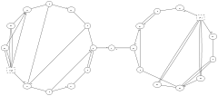
-
Six J.M., Tollis I.G. (1999) A Framework for Circular Drawings of Networks. In: KratochvÃyl J. (eds) Graph Drawing. GD 1999. Lecture Notes in Computer Science, vol 1731. Springer, Berlin, Heidelberg. ↩︎
-
Six J.M., Tollis I.G. (1999) Circular Drawings of Biconnected Graphs. In: Goodrich M.T., McGeoch C.C. (eds) Algorithm Engineering and Experimentation. ALENEX 1999. Lecture Notes in Computer Science, vol 1619. Springer, Berlin, Heidelberg. ↩︎
-
Michael Kaufmann, Roland Wiese (2002) Embedding Vertices at Points: Few Bends suffice for Planar Graphs. In: Journal of Graph Algorithms and Applications. vol. 6, no. 1, pp. 115–129 ↩︎
4.5 - fdp
fdp stands for Force Directed Placement.
“spring model” layouts similar to those of neato, but does this by reducing forces rather than working with energy.
fdp implements the Fruchterman-Reingold heuristic1 including a multigrid solver
that handles larger graphs and clustered undirected graphs.
4.6 - osage
osage draws clustered graphs.
As input, osage takes any graph in the dot format.
osage draws the graph recursively. At each level, there will be a collection of
nodes and a collection of cluster subgraphs. The internals of each cluster
subgraph are laid out, then the cluster subgraphs and nodes at the current
level are positioned relative to each other, treating each cluster subgraph as
a node.
At each level, the nodes and cluster subgraphs are viewed as rectangles to be
packed together. At present, edges are ignored during packing. Packing is done
using the standard packing functions. In particular, the graph attributes
pack and packmode control the layout. Each graph and cluster can
specify its own values for these attributes. Remember also that a cluster
inherits its attribute values from its parent graph.
After all nodes and clusters, edges are routed based on the value of the
splines attribute.
4.7 - patchwork
patchwork draws clustered graphs using a squarified treemap layout.
As input, patchwork takes any graph in the dot format.
Each cluster is given an area based on the areas specified by the clusters and
nodes it contains. The areas of nodes and empty clusters can be specified by
the area attribute. The default area
is 1.
The root graph is laid out as a square. Then, recursively, the region of a cluster or graph is partitioned among its top-level nodes and clusters, with each given a roughly square subregion with its specified area.
4.8 - sfdp
sfdp stands for Scalable Force Directed Placement.
sfdp is a fast, multilevel, force-directed algorithm that efficiently layouts large graphs, outlined in “Efficient and High Quality Force-Dircted Graph Drawing”1.
Multiscale version of the fdp layout, for the layout of large graphs.
5 - Output Formats
The output format is specified with the -Tlang
flag on the command line, where lang
is one of the parameters listed above.
The formats actually available in a given Graphviz system depend on
how the system was built and the presence of additional libraries.
To see what formats dot supports, run dot -T?.
See the description of the -T
flag for additional information.
Note that the internal coordinate system has the origin in the lower left corner. Thus, positions in the canon, dot, xdot, plain, and plain-ext formats need to be interpreted in this manner.
Image Formats
The image and shapefile attributes specify an image file to be included
as part of the final diagram. Not all image formats can be read. In addition,
even if read, not all image formats can necessarily be used in a given
output format.
The graph below shows what image formats can be used in which output formats, and the required plugins. On the left are the supported image formats. On the right are the supported output formats. In the middle are the plugins: image loaders, renderers, drivers, arranged by plugin library. This presents the most general case. A given installation may not provide one of the plugins, in which case, that transformation is not possible.

ID Output Note
In the formats: -Tcmap, -Tcmapx, -Tsvg, -Tvml, the output generates
id="node#" properties for nodes, id="edge#" properties for edges, and id="cluster#" properties for clusters, with the # replaced by an internally assigned integer. These strings can be provided instead by an externally provided id=xxx attribute on the object.
Normal \N \E \G substitutions are applied.
Externally provided id values are not used internally, and it is the user’s reponsibilty to ensure
that they are sufficiently unique for their intended downstream use.
Note, in particular, that \E is not a unique id for multiedges.
5.3 - DOT
Graphviz Language
These formats produce output in the
dot language.
Using canon produces a prettyprinted version of the input,
with no layout performed.
The dot (and gv alias) options correspond to attributed dot output,
and is the default output format.
It reproduces the input, along with layout information for the graph.
In particular, a bb attribute is
attached to the graph, specifying the bounding box of the drawing.
If the graph has a label, its position is specified by the
lp attribute.
Each node gets pos,
width and
the record rectangles are given in the
rects attribute.
If the node is a polygon and the
vertices attribute is defined, this
attribute contains the vertices of the node.
Every edge is
assigned a pos attribute,
and if the edge has a label, the label position
is given in lp.
The xdot format extends the
dot format by providing much more detailed information about
how graph components are drawn. It relies on additional attributes
for nodes, edges and graphs.
The format is fluid; comments and
suggestions for better representations are welcome.
To allow for changes in the format, Graphviz attaches the attribute
xdotversion to the graph.
If the xdotversion attribute is set in the input graph, the renderer
will only output features supported by that version. Note that the formats xdot1.2
and xdot1.4 are equivalent to setting xdotversion=1.2 and xdotversion=1.4,
respectively.
Additional drawing attributes can appear on nodes, edges, clusters and on the graph itself. There are six new attributes:
| Attribute | Description | Limitations |
|---|---|---|
draw |
General drawing without labels | |
ldraw |
Label drawing | |
hdraw |
Head arrowhead | Edge only |
tdraw |
Tail arrowhead | Edge only |
hldraw |
Head label | Edge only |
tldraw |
Tail label | Edge only |
For a given graph object, one will typically issue a draw directive before the
label directive. For example, for a node, one would first use the commands
in draw followed by the commands in ldraw.
The value of these attributes consists of the concatenation of some (multi-)set of the following 13 rendering or attribute operations. (The number is parentheses gives the xdot version when the operation was added to the format. If no version number is given, the operation was in the original specification.)
- E x₀ y₀ w h
- Filled ellipse ((x-x₀)/w)² + ((y-y₀)/h)² = 1
- e x₀ y₀ w h
- Unfilled ellipse ((x-x₀)/w)² + ((y-y₀)/h)² = 1
- P n x₁ y₁ … xₙ yₙ
- Filled polygon using the given n points
- p n x₁ y₁ … xₙ yₙ
- Unfilled polygon using the given n points
- L n x₁ y₁ … xₙ yₙ
- Polyline using the given n points
- B n x₁ y₁ … xₙ yₙ
- B-spline using the given n control points
- b n x₁ y₁ … xₙ yₙ
- Filled B-spline using the given n control points (1.1)
- T x y j w n -b₁bâ‚‚…bₙ
- Text drawn using the baseline point (x,y). The text consists of the
n bytes following
-. The text should be left-aligned (centered, right-aligned) on the point if j is -1 (0, 1), respectively. The value w gives the width of the text as computed by the library. - t f
- Set font characteristics. The integer f is the OR of:
Flag Value Min-Version BOLD1 ITALIC2 UNDERLINE4 SUPERSCRIPT8 SUBSCRIPT16 (1.5) STRIKE_THROUGH32 (1.6) OVERLINE64 (1.7) - C n -b₁bâ‚‚…bₙ
- Set fill color. The color value consists of the
n bytes following
-. (1.1) - c n -b₁bâ‚‚…bₙ
- Set pen color. The color value consists of the
n bytes following
-. (1.1) - F s n -b₁bâ‚‚…bₙ
- Set font. The font size is s points. The font name consists of the
n bytes following
-. (1.1) - S n -b₁bâ‚‚…bₙ
- Set style attribute. The style value consists of the
n bytes following
-. The syntax of the value is the same as specified for a styleItem in style. (1.1) - I x y w h n -b₁bâ‚‚…bₙ
- Externally-specified image drawn in the box with lower left
corner (x,y) and upper right corner (x+w,y+h). The name of the image
consists of the n bytes following
-. This is usually a bitmap image. Note that the image size, even when converted from pixels to points, might be different from the required size (w,h). It is assumed the renderer will perform the necessary scaling. (1.2)
Note that the filled figures (ellipses, polygons and B-Splines) imply two operations: first, drawing the filled figure with the current fill color; second, drawing an unfilled figure with the current pen color, pen width and pen style.
Within the context of a single drawing attribute, e.g., draw, there is
an implicit state for the graphical attributes. That is, once a color, style, font, or
font characteristic is set, it remains valid for all relevant drawing operations
until the value is reset by another xdot cmd.
Style values which can be incorporated in the graphics model do not
appear in xdot output. In particular, the style values
filled, rounded, diagonals, and invis
will not appear. Indeed, if style contains invis,
there will not be any xdot output at all.
With version 1.4 of xdot, color strings may now encode linear and radial gradients. Linear
gradients have the form
’[’ x₀ y₀ x₁ y₁ n [color-stop]⺠‘]’
where (x₀,y₀) and (x₁,y₁) define the starting and
ending points of the gradient line segment, and n gives the number of color-stops. Each
color-stop has the form
    v m -b₁bâ‚‚…bₘ
where v is a number in the range [0,1] defining a position on the gradient line segment, with
color specified by the m byte string b₁bâ‚‚…bₘ,
the same format as used for colors in the ‘c’ and ‘C’ operations.
Radial gradients have the form
’(’ x₀ y₀ r₀ x₁ y₁ r₁ n [color-stop]⺠‘)’
where xⱼ yⱼ rⱼ, for j=0,1, specify
the center and radius of the start and ending circle, and n gives the number of color-stops.
A color-stop has the same format as defined for linear gradients, again given the fractional
offset and its associated color.
In handling text alignment, the application may want to recompute the string width using its own rendering primitives.
The text operation is only used in the label attributes. Normally, the non-text operations are only used in the non-label attributes. If, however, the decorate attribute is set on an edge, its label attribute will also contain a polyline operation. In addition, if a label is a complex, HTML-like label, it will also contain non-text operations.
All coordinates and sizes are in points. Note though that if an edge or node is invisible, no drawing operations are attached to it.
Version info:
| Xdot version | Graphviz version | Modification |
|---|---|---|
| >1.0 | 1.9 | |
| >1.1 | 2.8 | First plug-in version |
| >1.2 | 2.13 | Support image operator I |
| >1.3 | 2.31 | Add numerical precision |
| >1.4 | 2.32 | Add gradient colors |
| >1.5 | 2.34 | Fix text layout problem; fix inverted vector in gradient; support version-specific output; new t op for text characteristics |
| >1.6 | 2.35 | Add STRIKE-THROUGH bit fort |
| >1.7 | 2.37 | Add OVERLINE for t |
Example: simple graph, canonicalized formatting with
-Tcanon
$ echo 'digraph { a->b }' | dot -Tcanon
digraph {
node [label="\N"];
a -> b;
}
Example: simple graph, outputting layout positioning with
-Tdot
$ echo 'digraph { a->b }' | dot -Tdot
digraph {
graph [bb="0,0,54,108"];
node [label="\N"];
a [height=0.5,
pos="27,90",
width=0.75];
b [height=0.5,
pos="27,18",
width=0.75];
a -> b [pos="e,27,36.104 27,71.697 27,63.983 27,54.712 27,46.112"];
}
Example: simple graph, outputting layout positioning & drawing information with
-Txdot
$ echo 'digraph { a->b }' | dot -Txdot
digraph {
graph [_draw_="c 9 -#fffffe00 C 7 -#ffffff P 4 0 0 0 108 54 108 54 0 ",
bb="0,0,54,108",
xdotversion=1.7
];
node [label="\N"];
a [_draw_="c 7 -#000000 e 27 90 27 18 ",
_ldraw_="F 14 11 -Times-Roman c 7 -#000000 T 27 86.3 0 7 1 -a ",
height=0.5,
pos="27,90",
width=0.75];
b [_draw_="c 7 -#000000 e 27 18 27 18 ",
_ldraw_="F 14 11 -Times-Roman c 7 -#000000 T 27 14.3 0 7 1 -b ",
height=0.5,
pos="27,18",
width=0.75];
a -> b [_draw_="c 7 -#000000 B 4 27 71.7 27 63.98 27 54.71 27 46.11 ",
_hdraw_="S 5 -solid c 7 -#000000 C 7 -#000000 P 3 30.5 46.1 27 36.1 23.5 46.1 ",
pos="e,27,36.104 27,71.697 27,63.983 27,54.712 27,46.112"];
}
5.4 - EPS
Encapsulated PostScript
Produces Encapsulated PostScript output.
At present, this is only guaranteed to be correct for a single input graph since the Bounding Box information has to appear at the beginning of the output, and this will be based on the first graph.
5.6 - FIG
Xfig
Outputs graphs in the FIG graphics language.
Example outputs of a simple graph with two nodes connected with an edge:
$ echo 'digraph { a->b }' | dot -Tfig
#FIG 3.2
# Generated by graphviz version 2.47.1 (20210417.1919)
# Title: %3
# Pages: 1
Portrait
Center
Inches
Letter
100.00
Single
-2
1200 2
0 32 #d3d3d3
0 33 #fffffe
2 3 0 1 33 7 2 0 20 0.0 0 0 0 0 0 5
0 2320 0 0 1240 0 1240 2320 0 2320
# a
1 1 0 1 0 7 1 0 -1 0.000 0 0.0000 620 440 540 -360 620 440 1160 80
4 1 0 1 0 0 14.0 0.0000 6 14.0 4.7 620 498 a\001
# b
1 1 0 1 0 7 1 0 -1 0.000 0 0.0000 620 1880 540 -360 620 1880 1160 1520
4 1 0 1 0 0 14.0 0.0000 6 14.0 4.7 620 1938 b\001
# a->b
3 4 0 1 0 0 0 0 -1 0.0 0 0 0 7
620 806 620 886 620 969 620 1055 620 1143 620 1231 620 1318
0 1 1 1 1 1 0
2 3 0 1 0 0 0 0 20 0.0 0 0 0 0 0 4
690 1318 620 1518 550 1318 690 1318
# end of FIG file
5.7 - GD/GD2
LibGD
Output images in the GD and GD2 format. These are the internal
formats used by the gd library. gd2 is compressed.
5.8 - GIF
Graphics Interchange Format
Outputs GIF bitmap images.
5.11 - Image Map: Client-side
Deprecated.
Produces map files for client-side image maps. The cmap format is
mostly identical to cmapx, but the latter is well-formed XML amenable
to processing by XML tools. In particular, the cmapx output is wrapped in
<map></map>.
See ID Output Note.
5.12 - Image Map: Server-side
Deprecated.
Produces HTML image map files. This is a predecessor (circa 1994)
of the IMAP format. Most servers now use the latter.
URLs can be attached to the root graph,
nodes and edges. Since edge
links are attached to edge labels, an edge must
have a label for its
URL to be used. For both nodes and edges, if the URL has the escape
sequence \N embedded in its string, this will be replaced with the
node or edge name.
5.13 - Image Map: Server-side and client-side
Produces map files for server-side and client-side image maps. These can be used in a web page with a graphical form of the output, e.g. in JPEG, GIF or PNG format, to attach links to nodes and edges. Graphviz generates an object’s map information only if the object has a non-trival URL or href attribute, or if it has an explicit tooltip attribute.
For example, to create a server-side map given the dot file
/* x.gv */
digraph mainmap {
URL="http://www.research.att.com/base.html";
command [URL="http://www.research.att.com/command.html"];
command -> output [URL="colors.html"];
}one would process the graph and generate two output files:
dot -Timap -ox.map -Tgif -ox.gif x.gv
and then refer to it in a web page:
<A HREF="x.map"><IMG SRC="x.gif" ismap="ismap" /></A>
For client-side maps, one again generates two output files:
dot -Tcmapx -ox.map -Tgif -ox.gif x.gv
and uses the HTML
<IMG SRC="x.gif" USEMAP="#mainmap" />
... [content of x.map] ...
Note that the name given in the USEMAP attribute must be the same
as the ID attribute of the MAP element. The Graphviz renderer
uses the name of the graph as the ID. Thus, in the example above,
where the graph’s name is mainmap, we have USEMAP="#mainmap"
in the IMG attribute, and x.map will look like
<map id="mainmap" name="mainmap">
...
</map>
URLs can be attached to the root graph, nodes and edges. If a node has a URL, clicking in the node will activate the link. If an edge has a URL, various points along the edge (but not necessarily the head or tail) will link to it. In addition, if the edge has a label, that will link to the URL. As for the head of the edge, this is linked to the headURL, if set. Otherwise, it is linked to the edge’s URL if that is defined. The analogous description holds for the tail and the tailURL. A URL associated with the graph is used as a default link.
If the URL of a node contains the escape sequence “\N”, it will be replaced by the node’s name. If the headURL is defined and contains the escape sequence “\N”, it will be replaced by the headlabel, if defined. The analogous result holds for the tailURL and the taillabel.
See ID Output Note.
5.14 - Image Map: Server-side and client-side
These are identical to the imap and cmapx formats, except they
rely solely on rectangles as active areas.
5.15 - JPEG
Joint Photographic Experts Group
Output JPEG compressed image files.
JPEG’s image compression can blur fine image details like text & lines, so consider using a lossless format (say, PNG or WebP) instead.
5.16 - JPEG 2000
Output using the JPEG 2000 format.
{kind=link}
JPEG’s image compression can blur fine image details like text & lines, so consider using a lossless format (say, PNG or WebP) instead.
5.17 - JSON
JavaScript Object Notation
These formats produce a JSON output encoding the DOT language.
Using json0 produces output in JSON format that contains the
same information produced by -Tdot.
Using json produces output in JSON format that contains the
same information produced by -Txdot.
Both of these assume the graph has been processed by one of the layout
algorithms.
The dot_json and xdot_json also produce JSON output similar to
to json0 and json, respectively, except they only use the
content of the graph on input. In particular, they do not assume that the
graph has been processed by any layout algorithm, and the only xdot information
appearing in the output was in the original input file.
The output produced by these follows the json schema shown below.
Note that the objects array has all of the subgraphs first,
followed by all of the nodes. The _gvid value is the index of
the subgraph or node in the objects array. This also holds
true for the edges in the objects array. Note that this format
allows clustered graphs, where edges can connect clusters as well as nodes.
Example: simple graph rendered with
-Tdot_json
$ echo 'digraph { a->b }' | dot -Tdot_json
{
"name": "%3",
"directed": true,
"strict": false,
"_subgraph_cnt": 0,
"objects": [
{
"_gvid": 0,
"name": "a",
"label": "\\N"
},
{
"_gvid": 1,
"name": "b",
"label": "\\N"
}
],
"edges": [
{
"_gvid": 0,
"tail": 0,
"head": 1
}
]
}
Example: simple graph rendered with
-Txdot_json
$ echo 'digraph { a->b }' | dot -Txdot_json
{
"name": "%3",
"directed": true,
"strict": false,
"_subgraph_cnt": 0,
"objects": [
{
"_gvid": 0,
"name": "a",
"label": "\\N"
},
{
"_gvid": 1,
"name": "b",
"label": "\\N"
}
],
"edges": [
{
"_gvid": 0,
"tail": 0,
"head": 1
}
]
}
Example: simple graph rendered with
-Tjson0
$ echo 'digraph { a->b }' | dot -Tjson0
{
"name": "%3",
"directed": true,
"strict": false,
"bb": "0,0,54,108",
"_subgraph_cnt": 0,
"objects": [
{
"_gvid": 0,
"name": "a",
"height": "0.5",
"label": "\\N",
"pos": "27,90",
"width": "0.75"
},
{
"_gvid": 1,
"name": "b",
"height": "0.5",
"label": "\\N",
"pos": "27,18",
"width": "0.75"
}
],
"edges": [
{
"_gvid": 0,
"tail": 0,
"head": 1,
"pos": "e,27,36.104 27,71.697 27,63.983 27,54.712 27,46.112"
}
]
}
Example: simple graph rendered with
-Tjson
echo 'digraph { a->b }' | dot -Tjson
{
"name": "%3",
"directed": true,
"strict": false,
"_draw_":
[
{
"op": "c",
"grad": "none",
"color": "#fffffe00"
},
{
"op": "C",
"grad": "none",
"color": "#ffffff"
},
{
"op": "P",
"points": [[0.000,0.000],[0.000,108.000],[54.000,108.000],[54.000,0.000]]
}
],
"bb": "0,0,54,108",
"xdotversion": "1.7",
"_subgraph_cnt": 0,
"objects": [
{
"_gvid": 0,
"name": "a",
"_draw_":
[
{
"op": "c",
"grad": "none",
"color": "#000000"
},
{
"op": "e",
"rect": [27.000,90.000,27.000,18.000]
}
],
"_ldraw_":
[
{
"op": "F",
"size": 14.000,
"face": "Times-Roman"
},
{
"op": "c",
"grad": "none",
"color": "#000000"
},
{
"op": "T",
"pt": [27.000,86.300],
"align": "c",
"width": 7.000,
"text": "a"
}
],
"height": "0.5",
"label": "\\N",
"pos": "27,90",
"width": "0.75"
},
{
"_gvid": 1,
"name": "b",
"_draw_":
[
{
"op": "c",
"grad": "none",
"color": "#000000"
},
{
"op": "e",
"rect": [27.000,18.000,27.000,18.000]
}
],
"_ldraw_":
[
{
"op": "F",
"size": 14.000,
"face": "Times-Roman"
},
{
"op": "c",
"grad": "none",
"color": "#000000"
},
{
"op": "T",
"pt": [27.000,14.300],
"align": "c",
"width": 7.000,
"text": "b"
}
],
"height": "0.5",
"label": "\\N",
"pos": "27,18",
"width": "0.75"
}
],
"edges": [
{
"_gvid": 0,
"tail": 0,
"head": 1,
"_draw_":
[
{
"op": "c",
"grad": "none",
"color": "#000000"
},
{
"op": "b",
"points": [[27.000,71.700],[27.000,63.980],[27.000,54.710],[27.000,46.110]]
}
],
"_hdraw_":
[
{
"op": "S",
"style": "solid"
},
{
"op": "c",
"grad": "none",
"color": "#000000"
},
{
"op": "C",
"grad": "none",
"color": "#000000"
},
{
"op": "P",
"points": [[30.500,46.100],[27.000,36.100],[23.500,46.100]]
}
],
"pos": "e,27,36.104 27,71.697 27,63.983 27,54.712 27,46.112"
}
]
}
| description | JSON representation of a graph encoding xdot attributes | ||||||||||||||||||||||||||||||||||||||||||||||||||||||||||||||||||||||||||||||||||||||||||||||||||||||||||||||||||||||||||||||||||||||||||||||||||||||||||||||||||||||||||||||||||||||||||||||||||||||||||||||||||||||||||||||||||||||||||||||||||||||||||||||||||||||||||||||||||||||||||||||||||||||||||||||||||||||||||||||||||||||||||||||||||||||||||||||||||||||||||||||||||||||||||||||||||||||||||||||||||||||||||||||
|---|---|---|---|---|---|---|---|---|---|---|---|---|---|---|---|---|---|---|---|---|---|---|---|---|---|---|---|---|---|---|---|---|---|---|---|---|---|---|---|---|---|---|---|---|---|---|---|---|---|---|---|---|---|---|---|---|---|---|---|---|---|---|---|---|---|---|---|---|---|---|---|---|---|---|---|---|---|---|---|---|---|---|---|---|---|---|---|---|---|---|---|---|---|---|---|---|---|---|---|---|---|---|---|---|---|---|---|---|---|---|---|---|---|---|---|---|---|---|---|---|---|---|---|---|---|---|---|---|---|---|---|---|---|---|---|---|---|---|---|---|---|---|---|---|---|---|---|---|---|---|---|---|---|---|---|---|---|---|---|---|---|---|---|---|---|---|---|---|---|---|---|---|---|---|---|---|---|---|---|---|---|---|---|---|---|---|---|---|---|---|---|---|---|---|---|---|---|---|---|---|---|---|---|---|---|---|---|---|---|---|---|---|---|---|---|---|---|---|---|---|---|---|---|---|---|---|---|---|---|---|---|---|---|---|---|---|---|---|---|---|---|---|---|---|---|---|---|---|---|---|---|---|---|---|---|---|---|---|---|---|---|---|---|---|---|---|---|---|---|---|---|---|---|---|---|---|---|---|---|---|---|---|---|---|---|---|---|---|---|---|---|---|---|---|---|---|---|---|---|---|---|---|---|---|---|---|---|---|---|---|---|---|---|---|---|---|---|---|---|---|---|---|---|---|---|---|---|---|---|---|---|---|---|---|---|---|---|---|---|---|---|---|---|---|---|---|---|---|---|---|---|---|---|---|---|---|---|---|---|---|---|---|---|---|---|---|---|---|---|---|---|---|---|---|---|---|---|---|---|---|---|---|---|---|---|---|---|---|---|---|---|---|---|---|---|---|---|---|---|---|---|---|---|---|---|---|---|---|---|---|---|---|---|---|---|
| title | Graphviz JSON | ||||||||||||||||||||||||||||||||||||||||||||||||||||||||||||||||||||||||||||||||||||||||||||||||||||||||||||||||||||||||||||||||||||||||||||||||||||||||||||||||||||||||||||||||||||||||||||||||||||||||||||||||||||||||||||||||||||||||||||||||||||||||||||||||||||||||||||||||||||||||||||||||||||||||||||||||||||||||||||||||||||||||||||||||||||||||||||||||||||||||||||||||||||||||||||||||||||||||||||||||||||||||||||||
| required |
| ||||||||||||||||||||||||||||||||||||||||||||||||||||||||||||||||||||||||||||||||||||||||||||||||||||||||||||||||||||||||||||||||||||||||||||||||||||||||||||||||||||||||||||||||||||||||||||||||||||||||||||||||||||||||||||||||||||||||||||||||||||||||||||||||||||||||||||||||||||||||||||||||||||||||||||||||||||||||||||||||||||||||||||||||||||||||||||||||||||||||||||||||||||||||||||||||||||||||||||||||||||||||||||||
| definitions |
| ||||||||||||||||||||||||||||||||||||||||||||||||||||||||||||||||||||||||||||||||||||||||||||||||||||||||||||||||||||||||||||||||||||||||||||||||||||||||||||||||||||||||||||||||||||||||||||||||||||||||||||||||||||||||||||||||||||||||||||||||||||||||||||||||||||||||||||||||||||||||||||||||||||||||||||||||||||||||||||||||||||||||||||||||||||||||||||||||||||||||||||||||||||||||||||||||||||||||||||||||||||||||||||||
| type | object | ||||||||||||||||||||||||||||||||||||||||||||||||||||||||||||||||||||||||||||||||||||||||||||||||||||||||||||||||||||||||||||||||||||||||||||||||||||||||||||||||||||||||||||||||||||||||||||||||||||||||||||||||||||||||||||||||||||||||||||||||||||||||||||||||||||||||||||||||||||||||||||||||||||||||||||||||||||||||||||||||||||||||||||||||||||||||||||||||||||||||||||||||||||||||||||||||||||||||||||||||||||||||||||||
| properties |
|
5.18 - PDF
Portable Document Format
Produces PDF output. (This option assumes Graphviz includes the Cairo renderer.) Alternatively, one can use the ps2 option to produce PDF-compatible PostScript, and then use a ps-to-pdf converter.
5.19 - PIC
Brian Kernighan’s Diagram Language
Output is given in the text-based PIC language developed for troff. See PIC language.
Example outputs of a simple graph with two nodes connected with an edge:
$ echo 'digraph { a->b }' | dot -Tpic
# Creator: graphviz version 2.47.1 (20210417.1919)
# Title: %3
# save point size and font
.nr .S \n(.s
.nr DF \n(.f
.PS 0.86111 1.61111
# to change drawing size, multiply the width and height on the .PS line above and the number on the two lines below (rounded to the nearest integer) by a scale factor
.nr SF 861
scalethickness = 861
# don't change anything below this line in this drawing
# non-fatal run-time pic version determination, version 2
boxrad=2.0 # will be reset to 0.0 by gpic only
scale=1.0 # required for comparisons
# boxrad is now 0.0 in gpic, else it remains 2.0
# dashwid is 0.1 in 10th Edition, 0.05 in DWB 2 and in gpic
# fillval is 0.3 in 10th Edition (fill 0 means black), 0.5 in gpic (fill 0 means white), undefined in DWB 2
# fill has no meaning in DWB 2, gpic can use fill or filled, 10th Edition uses fill only
# DWB 2 doesn't use fill and doesn't define fillval
# reset works in gpic and 10th edition, but isn't defined in DWB 2
# DWB 2 compatibility definitions
if boxrad > 1.0 && dashwid < 0.075 then X
fillval = 1;
define fill Y Y;
define solid Y Y;
define reset Y scale=1.0 Y;
X
reset # set to known state
# GNU pic vs. 10th Edition d\(e'tente
if fillval > 0.4 then X
define setfillval Y fillval = 1 - Y;
define bold Y thickness 2 Y;
# if you use gpic and it barfs on encountering "solid",
# install a more recent version of gpic or switch to DWB or 10th Edition pic;
# sorry, the groff folks changed gpic; send any complaint to them;
X else Z
define setfillval Y fillval = Y;
define bold Y Y;
define filled Y fill Y;
Z
# arrowhead has no meaning in DWB 2, arrowhead = 7 makes filled arrowheads in gpic and in 10th Edition
# arrowhead is undefined in DWB 2, initially 1 in gpic, 2 in 10th Edition
arrowhead = 7 # not used by graphviz
# GNU pic supports a boxrad variable to draw boxes with rounded corners; DWB and 10th Ed. do not
boxrad = 0 # no rounded corners in graphviz
# GNU pic supports a linethick variable to set line thickness; DWB and 10th Ed. do not
linethick = 0; oldlinethick = linethick
# .PS w/o args causes GNU pic to scale drawing to fit 8.5x11 paper; DWB does not
# maxpsht and maxpswid have no meaning in DWB 2.0, set page boundaries in gpic and in 10th Edition
# maxpsht and maxpswid are predefined to 11.0 and 8.5 in gpic
maxpsht = 1.611111
maxpswid = 0.861111
Dot: [
define attrs0 % %; define unfilled % %; define rounded % %; define diagonals % %
move to (0, 0); line to (0, 116); line to (62, 116); line to (62, 0); line to (0, 0)
# a
ellipse attrs0 wid 0.75000 ht 0.50000 at (0.43056,1.30556);
.ft R
.ps 14*\n(SFu/861u
"a" at (27.54861,87.56481);
# b
ellipse attrs0 wid 0.75000 ht 0.50000 at (0.43056,0.30556);
"b" at (27.54861,15.56481);
# a->b
move to (31, 76); spline to (31, 72); spline to (31, 68); spline to (31, 63); spline to (31, 59); spline to (31, 54); spline to (31, 50)
move to (35, 50); line to (31, 40); line to (28, 50); line to (35, 50)
]
.PE
# restore point size and font
.ps \n(.S
.ft \n(DF
5.20 - PICT
Apple PICT
Output in the Apple PICT file format.
5.21 - Plain Text
Simple, line-based language
The plain and plain-ext formats produce output using a simple, line-based language. The latter format differs in that, on edges, it provides port names on head and tail nodes when applicable.
Example outputs of a simple graph with two nodes connected with an edge:
-Tplain
$ echo 'digraph { a->b }' | dot -Tplain
graph 1 0.75 1.5
node a 0.375 1.25 0.75 0.5 a solid ellipse black lightgrey
node b 0.375 0.25 0.75 0.5 b solid ellipse black lightgrey
edge a b 4 0.375 0.99579 0.375 0.88865 0.375 0.7599 0.375 0.64045 solid black
stop
-Tplain-ext
$ echo 'digraph { a->b }' | dot -Tplain-ext
graph 1 0.75 1.5
node a 0.375 1.25 0.75 0.5 a solid ellipse black lightgrey
node b 0.375 0.25 0.75 0.5 b solid ellipse black lightgrey
edge a b 4 0.375 0.99579 0.375 0.88865 0.375 0.7599 0.375 0.64045 solid black
stop
There are four types of statements.
graph scale width height node name x y width height label style shape color fillcolor edge tail head n x₁ y₁ .. xₙ yₙ [label xl yl] style color stop
- graph
- The width and height values give the width and height of the drawing. The lower left corner of the drawing is at the origin. The scale value indicates how the drawing should be scaled if a size attribute was given and the drawing needs to be scaled to conform to that size. If no scaling is necessary, it will be set to 1.0. Note that all graph, node and edge coordinates and lengths are given unscaled.
- node
- The name value is the name of the node, and x and y give the node’s position. The width and height are the width and height of the node. The label, style, shape, color and fillcolor give the node’s label, style, shape, color and fillcolor, respectively, using attribute default values where necessary. If the node does not have a style attribute, “solid” is used.
- edge
- The tail and head values give the names of the head and
tail nodes. In plain-ext format, the head or tail name will be appended
with a colon and a portname if the edge connects to the node at a port.
n is the number of control points defining the
B-spline forming the edge. This is followed by 2*n numbers giving
the x and y coordinates of the control points in order from tail to head.
If the edge has a label, this comes next
followed by the x and y coordinates of the label’s position.
The edge description is completed by the edge’s
style and color.
As with nodes, if a style is not defined, “solid” is used.
Note: The control points given in an edge statement define the body of the edge. In particular, if the edge has an arrowhead to the head or tail node, there will be a gap between the last or first control points and the boundary of the associated node. There are at least 3 possible ways of handling this gap:
- Arrange that the input graph uses
dir=none,arrowhead=none, orarrowtail=nonefor all edges. In this case, the terminating control points will always touch the node. - Consider the line segment joining the control point and the center of the node, and determine the point where the segment intersects the node’s boundary. Then use the control point and the intersection point as the main axis of an arrowhead. The problem with this approach is that, if the edge has a port, the edge will not be pointing to the center of the node. In this case, rather than use the control point and center point, one can use the control point and its tangent.
- Arrange that the input graph uses
headclip=falseortailclip=false. In this case, the edge will terminate at the node’s center rather than its boundary. If arrowheads are used, there will still be a gap, but normally this will occur within the node. The application will still need to clip the spline to the node boundary. Also, as with the previous item, if the edge points to a node port, this technique will fail.
- Arrange that the input graph uses
The output consists of one graph line, a sequence of node lines, one per node, a sequence of edge lines, one per edge, and a final stop line. All units are in inches, represented by a floating point number.
Note that the plain formats provide minimal information, really giving not much more than node positions and sizes, and edge spline control points. These formats are usually most useful to applications wanting just this geometric information, and willing to fill in all of the graphical details. The only real advantages to these formats is their terseness and their ease of parsing. In general, the dot and xdot are preferable in terms of the quantity of information provided.
5.22 - PNG
Portable Network Graphics
Produces output in the PNG (Portable Network Graphics) format.
(25 November 2014) A standard Graphviz installation will render using both the Cairo and GD library. By mixing the rendering and formatting of these libraries, one can achieve different variations in the output.
-Tpng:gd(or-Tpng:gd:gd)- Indexed color, no antialiasing
-Tpng:cairo:gd- Indexed color, with antialiasing
-Tpng(or-Tpng:cairo)- True color, with antialiasing
These options are listed in increasing order of image quality and output size.
5.23 - POV-Ray
Persistence of Vision Raytracer (prototype)
Scene-description language for 3D modelling for the Persistence of Vision Raytracer.
Example: simple graph, rendered with
-Tpov
$ echo 'digraph { a->b }' | dot -Tpov
#version 3.6;
global_settings { assumed_gamma 1.0 }
#default { finish { ambient 0.1 diffuse 0.9 } }
#include "colors.inc"
#include "textures.inc"
#include "shapes.inc"
#declare black = Black;
#declare white = White;
//*** begin_graph %3
camera { location <31.000 , 58.000 , -500.000>
look_at <31.000 , 58.000 , 0.000>
right x * image_width / image_height
angle 15.880
}
//sky
plane { <0, 1, 0>, 1 hollow
texture {
pigment { bozo turbulence 0.95
color_map {
[0.00 rgb <0.05, 0.20, 0.50>]
[0.50 rgb <0.05, 0.20, 0.50>]
[0.75 rgb <1.00, 1.00, 1.00>]
[0.75 rgb <0.25, 0.25, 0.25>]
[1.00 rgb <0.50, 0.50, 0.50>]
}
scale <1.00, 1.00, 1.50> * 2.50
translate <0.00, 0.00, 0.00>
}
finish { ambient 1 diffuse 0 }
}
scale 10000
}
//mist
fog { fog_type 2
distance 50
color rgb <1.00, 1.00, 1.00> * 0.75
fog_offset 0.10
fog_alt 1.50
turbulence 1.75
}
//gnd
plane { <0.00, 1.00, 0.00>, 0
texture {
pigment{ color rgb <0.25, 0.45, 0.00> }
normal { bumps 0.75 scale 0.01 }
finish { phong 0.10 }
}
}
light_source { <1500,3000,-2500> color White }
//*** begin_page
//*** comment: a
//*** begin_node: a
//*** ellipse
torus { 1.000, 0.056
scale < 27.000, 11.250, 18.000>
rotate < 90.000, 0.000, 0.000>
translate< 31.000, 94.000, -6.000>
pigment { color black transmit 0.000 }
}
//*** textspan: a, fontsize = 14.000, fontname = Times-Roman
text {
ttf "Times-Roman",
"a", 0.250, 0.000
no_shadow
scale 14.000
rotate < 0.000, 0.000, 0.000>
translate< 27.500, 87.500, -9.000>
pigment { color black transmit 0.000 }
}
//*** end_node
//*** comment: b
//*** begin_node: b
//*** ellipse
torus { 1.000, 0.056
scale < 27.000, 11.250, 18.000>
rotate < 90.000, 0.000, 0.000>
translate< 31.000, 22.000, -6.000>
pigment { color black transmit 0.000 }
}
//*** textspan: b, fontsize = 14.000, fontname = Times-Roman
text {
ttf "Times-Roman",
"b", 0.250, 0.000
no_shadow
scale 14.000
rotate < 0.000, 0.000, 0.000>
translate< 27.500, 15.500, -9.000>
pigment { color black transmit 0.000 }
}
//*** end_node
//*** comment: a->b
//*** begin_edge
//*** bezier
sphere_sweep {
b_spline
6,
< 31.000, 75.697, 0.000>, 1.000
< 31.000, 75.697, 0.000>, 1.000
< 31.000, 67.983, 0.000>, 1.000
< 31.000, 58.712, 0.000>, 1.000
< 31.000, 50.112, 0.000>, 1.000
< 31.000, 50.112, 0.000>, 1.000
tolerance 0.01
scale < 1.000, 1.000, 1.000>
rotate < 0.000, 0.000, 0.000>
translate< 0.000, 0.000, -11.000>
pigment { color black transmit 0.000 }
}
//*** polygon
sphere_sweep {
linear_spline
4,
< 34.500, 50.104, 0.000>, 1.000
< 31.000, 40.104, 0.000>, 1.000
< 27.500, 50.104, 0.000>, 1.000
< 34.500, 50.104, 0.000>, 1.000
tolerance 0.1
scale < 1.000, 1.000, 1.000>
rotate < 0.000, 0.000, 0.000>
translate< 0.000, 0.000, -9.000>
pigment { color black transmit 0.000 }
}
polygon { 3,
< 34.500, 50.104, 0.000>
< 31.000, 40.104, 0.000>
< 27.500, 50.104, 0.000>
scale < 1.000, 1.000, 1.000>
rotate < 0.000, 0.000, 0.000>
translate< 0.000, 0.000, -9.000>
pigment { color black transmit 0.250 }
}
//*** end_edge
//*** end_page
//*** end_graph
5.24 - PS
Adobe PostScript
Produces PostScript output.
Note: The default PostScript renderer can only handle the Latin-1
character set. To get non-Latin-1 characters into PostScript output,
use -Tps:cairo, assuming your version was built with the
Cairo renderer.
5.25 - PS/PDF
Adobe PostScript for Portable Document Format
Produces PostScript output with PDF notations.
It is assumed the output
will be directly converted into PDF format. The notations include PDF
bounding box information, so that the resulting PDF file can be correctly
used with pdf tools, such as pdflatex.
In addition, if a node has a URL
attribute, this gets translated into PDF code such that the node,
when viewed in a PDF-viewer, e.g.,
Adobe Acrobat,
is a link to the given URL. If a URL is attached to the graph, this serves
as a base, such that relative URLs on nodes are derived from it.
5.26 - PSD
Photoshop
Output in the Adobe PhotoShop PSD file format.
5.28 - SVG
Scalable Vector Graphics
svg produces SVG output.
svgz produces compressed SVGs.
See ID Output Note.
Example: simple graph rendered with
-Tsvg
$ echo 'digraph { a->b }' | dot -Tsvg
<?xml version="1.0" encoding="UTF-8" standalone="no"?>
<!DOCTYPE svg PUBLIC "-//W3C//DTD SVG 1.1//EN"
"http://www.w3.org/Graphics/SVG/1.1/DTD/svg11.dtd">
<!-- Generated by graphviz version 2.47.1 (20210417.1919)
-->
<!-- Pages: 1 -->
<svg width="62pt" height="116pt"
viewBox="0.00 0.00 62.00 116.00" xmlns="http://www.w3.org/2000/svg" xmlns:xlink="http://www.w3.org/1999/xlink">
<g id="graph0" class="graph" transform="scale(1 1) rotate(0) translate(4 112)">
<polygon fill="white" stroke="transparent" points="-4,4 -4,-112 58,-112 58,4 -4,4"/>
<!-- a -->
<g id="node1" class="node">
<title>a</title>
<ellipse fill="none" stroke="black" cx="27" cy="-90" rx="27" ry="18"/>
<text text-anchor="middle" x="27" y="-86.3" font-family="Times,serif" font-size="14.00">a</text>
</g>
<!-- b -->
<g id="node2" class="node">
<title>b</title>
<ellipse fill="none" stroke="black" cx="27" cy="-18" rx="27" ry="18"/>
<text text-anchor="middle" x="27" y="-14.3" font-family="Times,serif" font-size="14.00">b</text>
</g>
<!-- a->b -->
<g id="edge1" class="edge">
<title>a->b</title>
<path fill="none" stroke="black" d="M27,-71.7C27,-63.98 27,-54.71 27,-46.11"/>
<polygon fill="black" stroke="black" points="30.5,-46.1 27,-36.1 23.5,-46.1 30.5,-46.1"/>
</g>
</g>
</svg>
5.31 - Tk
Tcl/Tk
Output using the text-based Tcl/Tk graphics primitives.
Example outputs of a simple graph with two nodes connected with an edge:
Example: simple graph rendered with
-Ttk
$ echo 'digraph { a->b }' | dot -Ttk
# Generated by graphviz version 2.47.1 (20210417.1919)
# Title: %3 Pages: 1
# a
$c create oval 5.3333 53.3333 77.3333 5.3333 -fill white -width 1 -outline black -tags {1node0x75509df0}
$c create text 41.3333 30.3 -text {a} -fill black -font {"Times" 14} -tags {0node0x75509df0}
# b
$c create oval 5.3333 149.3333 77.3333 101.3333 -fill white -width 1 -outline black -tags {1node0x75509f10}
$c create text 41.3333 126.3 -text {b} -fill black -font {"Times" 14} -tags {0node0x75509f10}
# a->b
$c create line 41.3333 53.7378 41.3333 64.023 41.3333 76.3834 41.3333 87.8501 -fill black -width 1 -smooth bezier -tags {1edge0x5}
$c create polygon 46.0001 87.8609 41.3333 101.1942 36.6668 87.8608 -fill black -width 1 -outline black -tags {1edge0x5}
5.32 - VML
Vector Markup Language
Produces VML output, the latter in compressed format.
VML is obsolete, superseded by SVG.
See ID Output Note.
5.33 - VRML
Virtual Reality Modeling Language
Outputs graphs in the VRML format.
To get a 3D embedding, nodes must have a z
attribute. These can either be supplied as part of the input graph, or
be generated by neato provided dim=3
and at least one node has a z value.
Line segments are drawn as cylinders.
In general, VRML output relies on having the PNG library to produce images
used to texture-fill the node shapes. However, if
shape=point,
a node is drawn as a 3D sphere.
Example: simple graph, rendered with
-Tvrml
$ echo 'digraph { a->b }' | dot -Tvrml
#VRML V2.0 utf8
Group { children [
Transform {
scale 0.028 0.028 0.028
children [
Background { skyColor 1.000 1.000 1.000 }
# node a
Transform {
translation 27.000 90.000 0.000
scale 27.000 18.000 1
children [
Transform {
rotation 1 0 0 1.57
children [
Shape {
geometry Cylinder { side FALSE }
appearance Appearance {
material Material {
ambientIntensity 0.33
diffuseColor 1 1 1
}
texture ImageTexture { url "node1.png" }
}
}
]
}
]
}
# node b
Transform {
translation 27.000 18.000 0.000
scale 27.000 18.000 1
children [
Transform {
rotation 1 0 0 1.57
children [
Shape {
geometry Cylinder { side FALSE }
appearance Appearance {
material Material {
ambientIntensity 0.33
diffuseColor 1 1 1
}
texture ImageTexture { url "node2.png" }
}
}
]
}
]
}
# edge a -> b
Group { children [
Transform {
children [
Shape {
geometry Cylinder {
bottom FALSE top FALSE
height 25.584 radius 1.000 }
appearance Appearance {
material Material {
ambientIntensity 0.33
diffuseColor 0.000 0.000 0.000
}
}
}
Transform {
translation 0 17.792 0
children [
Shape {
geometry Cone {bottomRadius 3.500 height 10.000 }
appearance Appearance {
material Material {
ambientIntensity 0.33
diffuseColor 0.000 0.000 0.000
}
}
}
]
}
]
center 0 5.000 0
rotation -0.000 0 1.000 -3.142
translation 27.000 49.000 0.000
}
] }
] }
Viewpoint {position 1.000 2.000 6.438}
] }
5.34 - WBMP
Wireless Bitmap
Produces output in the monochrome Wireless BitMap (WBMP) format, optimized for mobile computing.
5.35 - WebP
WebP
Produces output in the image format for the Web (WEBP) format, optimized for web devices such as tablets. See Wikipedia’s WebP or Google’s WebP pages.
5.36 - X11
X11 Window
Creates an Xlib (X11) window and displays the output there.
xlib is an alias for x11.
6 - Attributes
The table below describes the attributes used by various Graphviz tools. The table gives the name of the attribute, the graph components (node, edge, etc.) which use the attribute and the type of the attribute (strings representing legal values of that type). Where applicable, the table also gives a default value for the attribute, a minimum allowed setting for numeric attributes, and certain restrictions on the use of the attribute.
Note that attribute names are case-sensitive. This is usually true for attribute values as well, unless noted.
All Graphviz attributes are specified by name-value pairs. Thus, to
set the color of a node abc, one would use
digraph {
abc [color = red]
}Similarly, to set the arrowhead style of an edge abc -> def,
one would use:
digraph {
abc -> def [arrowhead = diamond]
}Further details concerning the setting of attributes can be found in the description of the DOT language.
At present, most device-independent units are either inches or points, which we take as 72 points per inch.
Note: Some attributes, such as
dir or arrowtail, are ambiguous when used in
DOT with an undirected graph since the head and tail of an edge
are meaningless. As a convention, the first time an undirected edge appears,
the DOT
parser will assign the left node as the tail node and the right node as
the head. For example, the edge A -- B will have tail A
and head B. It is the user’s responsibility to handle such
edges consistently. If the edge appears later, in the format
graph {
B -- A [taillabel = "tail"]
}the drawing will attach the tail label to node A.
To avoid possible confusion when such attributes are required, the user
is encouraged to use a directed graph.
If it is important to make the graph appear undirected, this can be
done using the dir, arrowtail or
arrowhead attributes.
The tools accept standard C representations for int and
double types.
For the bool type, TRUE values are
represented by true or yes (case-insensitive)
and any non-zero integer, and FALSE values by false or no (case-insensitive)
and zero.
In addition, there are a variety of specialized types such as
arrowType, color,
point and rankdir. Legal values for these types are given
at the end.
In the Used By field, the
characters E, N, G, S and C
represent edges, nodes, the root graph, subgraphs
and cluster subgraphs, respectively.
This field indicates which graph component uses the attribute.
In the Notes field, an annotation of write only indicates that the attribute is used for output, and is not used or read by any of the layout programs.
6.1 - _background
A string in the xdot format specifying an arbitrary background.
During rendering, the canvas is first filled as described in the
bgcolor attribute.
Then, if _background is defined, the graphics
operations described in the string are performed on the canvas.
6.2 - area
Indicates the preferred area for a node or empty cluster when laid out by patchwork.
Example: Australian Coins, area proportional to value
graph {
layout="patchwork"
node [style=filled]
"5c" [area= 5 fillcolor=silver]
"10c" [area= 10 fillcolor=silver]
"20c" [area= 20 fillcolor=silver]
"50c" [area= 50 fillcolor=silver]
"$1" [area=100 fillcolor=gold]
"$2" [area=200 fillcolor=gold]
}6.3 - arrowhead
Style of arrowhead on the head node of an edge.
This will only appear if the dir attribute
is forward or both.
See the limitation.
See also:
6.4 - arrowsize
Multiplicative scale factor for arrowheads.
Example
digraph {
quiver -> "0.5" [arrowsize=0.5]
quiver -> "1"
quiver -> "2" [arrowsize=2]
quiver -> "3" [arrowsize=3]
}6.5 - arrowtail
Style of arrowhead on the tail node of an edge.
This will only appear if the dir attribute
is back or both.
See the limitation.
See also:
6.6 - bb
Bounding box of drawing in points.
6.7 - bgcolor
When attached to the root graph, this color is used as the background for entire canvas.
When a cluster attribute, it is used as the initial background
for the cluster. If a cluster has a filled style, the cluster’s
fillcolor will overlay the background color.
If the value is a colorList, a gradient fill is used. By
default, this is a linear fill; setting style=radial will
cause a radial fill. Only two colors are used. If the second color (after a
colon) is missing, the default color is used for it. See also the
gradientangle attribute for setting the gradient angle.
For certain output formats, such as PostScript, no fill is done for the root
graph unless bgcolor is explicitly set.
For bitmap formats, however, the bits need to be initialized to something, so
the canvas is filled with white by default. This means that if the bitmap
output is included in some other document, all of the bits within the
bitmap’s bounding box will be set, overwriting whatever color or graphics
were already on the page. If this effect is not desired, and you only want to
set bits explicitly assigned in drawing the graph, set
bgcolor="transparent".
Example
graph {
bgcolor="lightblue"
label="Home"
subgraph cluster_ground_floor {
bgcolor="lightgreen"
label="Ground Floor"
Lounge
Kitchen
}
subgraph cluster_top_floor {
bgcolor="lightyellow"
label="Top Floor"
Bedroom
Bathroom
}
}6.8 - center
If true, the drawing is centered in the output canvas.
6.9 - charset
Specifies the character encoding used when interpreting string input as a text label.
The default value is "UTF-8". The other legal value is "iso-8859-1" or,
equivalently, "Latin1".
The charset attribute is case-insensitive.
Note that if the character encoding used in the input does not match the
charset value, the resulting output may be very strange.
Example
digraph G {
charset="UTF-8"
🔠-> 💩
}6.10 - class
Classnames to attach to the node, edge, graph, or cluster’s SVG element.
Combine with stylesheet for styling SVG output
using CSS classnames.
Multiple space-separated classes are supported.
See also:
Example:
digraph G {
graph [class="cats"];
subgraph cluster_big {
graph [class="big_cats"];
"Lion" [class="yellow social"];
"Snow Leopard" [class="white solitary"];
}
}6.11 - clusterrank
Mode used for handling clusters. If clusterrank=local, a
subgraph whose name begins with cluster is given special treatment.
The subgraph is laid out separately, and then integrated as a unit into
its parent graph, with a bounding rectangle drawn about it.
If the cluster has a label parameter, this label
is displayed within the rectangle.
Note also that there can be clusters within clusters.
The modes clusterrank=global and clusterrank=none appear to
be identical, both turning off the special cluster processing.
6.12 - color
Basic drawing color for graphics, not text. For the latter, use the
fontcolor attribute.
For edges, the value can either be a single color or a
colorList.
In the latter case, if colorList has no fractions,
the edge is drawn using parallel splines or lines,
one for each color in the list, in the order given.
The head arrow, if any, is drawn using the first color in the list, and the tail arrow, if any, the second color. This supports the common case of drawing opposing edges, but using parallel splines instead of separately routed multiedges.
If any fraction is used, the colors are drawn in series, with each color being given roughly its specified fraction of the edge.
For example, the graph:
Edge Color Example
digraph G {
a -> b [dir=both color="red:blue"]
c -> d [dir=none color="green:red;0.25:blue"]
}yields:

Subgraph & Node Color Example
digraph G {
subgraph cluster_yellow {
color="yellow"
a [color="red"]
b [color="green"]
}
}yields:

See also:
6.13 - colorscheme
This attribute specifies a color scheme namespace: the context for interpreting color names.
In particular, if a color value has form "xxx" or "//xxx",
then the color xxx will be evaluated according to the current color scheme.
If no color scheme is set, the standard X11 naming is used.
For example, if colorscheme=oranges9 (from Brewer color schemes), then color=7 is interpreted as
color="/oranges9/7", the 7th color in the oranges9 colorscheme.
Orange Colorscheme
graph {
node [colorscheme=oranges9] # Apply colorscheme to all nodes
1 [color=1]
2 [color=2]
3 [color=3]
4 [color=4]
5 [color=5]
6 [color=6]
7 [color=7]
8 [color=8]
9 [color=9]
}
Green Colorscheme
graph {
node [colorscheme=greens9] # Apply colorscheme to all nodes
1 [color=1]
2 [color=2]
3 [color=3]
4 [color=4]
5 [color=5]
6 [color=6]
7 [color=7]
8 [color=8]
9 [color=9]
}See also:
6.14 - comment
Comments are inserted into output. Device-dependent
Example
digraph {
comment="I am a graph"
A [comment="I am node A"]
B [comment="I am node B"]
A->B [comment="I am an edge"]
}Outputs SVG with comments:
<?xml version="1.0" encoding="UTF-8" standalone="no"?>
<!DOCTYPE svg PUBLIC "-//W3C//DTD SVG 1.1//EN"
"http://www.w3.org/Graphics/SVG/1.1/DTD/svg11.dtd">
<!-- Generated by graphviz version 2.47.1 (20210417.1919)
-->
<!-- This is a graph -->
<!-- Pages: 1 -->
<svg width="62pt" height="116pt"
viewBox="0.00 0.00 62.00 116.00" xmlns="http://www.w3.org/2000/svg" xmlns:xlink="http://www.w3.org/1999/xlink">
<g id="graph0" class="graph" transform="scale(1 1) rotate(0) translate(4 112)">
<polygon fill="white" stroke="transparent" points="-4,4 -4,-112 58,-112 58,4 -4,4"/>
<!-- A -->
<!-- I am node A -->
<g id="node1" class="node">
<title>A</title>
<ellipse fill="none" stroke="black" cx="27" cy="-90" rx="27" ry="18"/>
<text text-anchor="middle" x="27" y="-86.3" font-family="Times,serif" font-size="14.00">A</text>
</g>
<!-- B -->
<!-- I am node B -->
<g id="node2" class="node">
<title>B</title>
<ellipse fill="none" stroke="black" cx="27" cy="-18" rx="27" ry="18"/>
<text text-anchor="middle" x="27" y="-14.3" font-family="Times,serif" font-size="14.00">B</text>
</g>
<!-- A->B -->
<!-- I am an edge -->
<g id="edge1" class="edge">
<title>A->B</title>
<path fill="none" stroke="black" d="M27,-71.7C27,-63.98 27,-54.71 27,-46.11"/>
<polygon fill="black" stroke="black" points="30.5,-46.1 27,-36.1 23.5,-46.1 30.5,-46.1"/>
</g>
</g>
</svg>
6.15 - compound
If true, allow edges between clusters.
digraph {
compound=true;
subgraph cluster_a {
label="Cluster A";
node1; node3; node5; node7;
}
subgraph cluster_b {
label="Cluster B";
node2; node4; node6; node8;
}
node1 -> node2 [label="1"];
node3 -> node4 [label="2" ltail="cluster_a"];
node5 -> node6 [label="3" lhead="cluster_b"];
node7 -> node8 [label="4" ltail="cluster_a" lhead="cluster_b"];
}6.16 - concentrate
If true, use edge concentrators.
This merges multiedges into a single edge and causes partially parallel
edges to share part of their paths. The latter feature is not yet available
outside of dot.
Example
digraph {
concentrate=true
a -> b [label="1"]
c -> b
d -> b
}6.17 - constraint
If false, the edge is not used in ranking the nodes. For example, in the graph:
digraph G {
a -> c;
a -> b;
b -> c [constraint=false];
}the edge b -> c does not add a constraint during rank
assignment, so the only constraints are that a be above b and c,
yielding the graph:
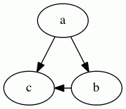
6.18 - Damping
Factor damping force motions. On each iteration, a node’s movement
is limited to this factor of its potential motion. By being less than
1.0, the system tends to “cool”, thereby preventing cycling.
6.19 - decorate
If true, attach edge label to edge by a 2-segment polyline, underlining the label, then going to the closest point of spline.
Example
digraph {
a -> a [label="AA" decorate=true]
a -> b [label="AB" decorate=true]
}6.20 - defaultdist
This specifies the distance between nodes in separate connected components. If set too small, connected components may overlap.
Only applicable if pack=false.
6.21 - dim
Set the number of dimensions used for the layout.
The maximum value allowed is 10.
6.22 - dimen
Set the number of dimensions used for rendering.
The maximum value allowed is 10.
If both dimen and dim are set, the latter specifies
the dimension used for layout, and the former for rendering.
If only dimen is set, this is used for both layout and rendering
dimensions.
Note that, at present, all aspects of rendering are 2D. This includes
the shape and size of nodes, overlap removal, and edge routing. Thus,
for dimen > 2, the only valid information is the pos
attribute of the nodes.
All other coordinates will be 2D and, at best, will reflect a projection of a higher-dimensional point onto the plane.
6.23 - dir
Edge type for drawing arrowheads.
Indicates which ends of the edge should be decorated with an arrowhead.
The actual style of the arrowhead can be specified using the
arrowhead and arrowtail attributes.
See limitation.
Example
digraph {
A->B [dir=forward]
C->D [dir=back]
E->F [dir=both]
G->H [dir=none]
}6.24 - diredgeconstraints
If true, constraints are generated for each edge in the largest (heuristic) directed acyclic subgraph such that the edge must point downwards.
Only valid when mode=“ipsep”.
If hier, generates level constraints similar to those used with
mode=“hier”. The main difference is that, in the latter
case, only these constraints are involved, so a faster solver can be used.
6.25 - distortion
Distortion factor for shape=polygon.
Positive values cause top part to be larger than bottom; negative values do the opposite.
See also skew.
Example
graph {
LargeBottom [shape=polygon sides=4 distortion=-.5]
LargeTop [shape=polygon sides=4 distortion=.5]
}6.26 - dpi
Specifies the expected number of pixels per inch on a display device.
For bitmap output, dpi guarantees that text rendering will be done more
accurately, both in size and in placement.
For SVG output, dpi guarantees the dimensions in the output correspond to
the correct number of points or inches.
6.28 - edgetarget
If the edge has a URL or edgeURL
attribute, edgetarget determines which window of the
browser is used
for the URL attached to the non-label part of the edge.
Setting edgetarget=_graphviz will open a new window if it
doesn’t already exist, or reuse it if it does.
If undefined, the value of the target is used instead.
6.29 - edgetooltip
Tooltip annotation attached to the non-label part of an edge.
6.30 - edgeURL
The link for the non-label parts of an edge.
edgeURL overrides any URL defined for the edge.
Also, edgeURL is used near the head or tail node unless overridden
by headURL or tailURL, respectively.
See limitation.
See also:
6.31 - epsilon
Terminating condition. If the length squared of all energy gradients are
less than epsilon, the algorithm stops.
6.32 - esep
Margin used around polygons for purposes of spline edge routing.
The interpretation is the same as given for sep. esep should
normally be strictly less than sep.
6.33 - fillcolor
Color used to fill the background of a node or cluster
assuming style=filled, or a filled arrowhead.
If fillcolor is not defined, color is
used. (For clusters, if color is not defined,
bgcolor is used.) If this is not defined,
the default is used, except for
shape=point or when the output
format is MIF,
which use black by default.
If the value is a colorList, a gradient fill is
used. By default, this is a linear fill; setting style=radial will
cause a radial fill. At present, only two colors are used. If the second
color (after a colon) is missing, the default color is used for it.
See also the gradientangle attribute
for setting the gradient angle.
Note that a cluster inherits the root graph’s attributes if defined.
Thus, if the root graph has defined a fillcolor, this will override a
color or bgcolor attribute set for the cluster.
6.34 - fixedsize
If false, the size of a node is determined by smallest width and height
needed to contain its label and image, if any, with a margin specified by
the margin attribute.
The width and height must also be at least as large as the sizes specified by
the width and height attributes, which specify
the minimum values for these parameters.
If true, the node size is specified by the values of the width
and height attributes only and is not expanded to contain the
text label. There will be a warning if the label (with margin) cannot fit
within these limits.
If the fixedsize attribute is set to shape, the
width and height attributes also determine the size
of the node shape, but the label can be much larger. Both the label and shape
sizes are used when avoiding node overlap, but all edges to the node ignore
the label and only contact the node shape. No warning is given if the label
is too large.
6.35 - fontcolor
Color used for text.
6.36 - fontname
Font used for text. This very much depends on the output format and, for non-bitmap output such as PostScript or SVG, the availability of the font when the graph is displayed or printed. As such, it is best to rely on font faces that are generally available, such as Times-Roman, Helvetica or Courier.
How font names are resolved also depends on the underlying library that
handles font name resolution. If Graphviz was built using the fontconfig
library, the
latter library will be used to search for the font. See the commands
fc-list, fc-match and the other fontconfig commands for how names are
resolved and which fonts are available. Other systems may provide their own
font package, such as Quartz for OS X.
Note that various font attributes, such as weight and slant, can be built
into the font name. Unfortunately, the syntax varies depending on which font
system is dominant. Thus, using fontname="times bold italic" will produce a
bold, slanted Times font using Pango, the usual main font library.
Alternatively, fontname="times:italic" will produce a slanted Times font from
fontconfig, while fontname="times-bold" will resolve to a bold Times using
Quartz. You will need to ascertain which package is used by your Graphviz
system and refer to the relevant documentation.
If Graphviz is not built with a high-level font library, fontname will be
considered the name of a Type 1 or True Type font file. If you specify
fontname=schlbk, the tool will look for a file named schlbk.ttf or schlbk.pfa
or schlbk.pfb in one of the directories specified by the
fontpath attribute. The lookup does support various aliases
for the common fonts.
digraph {
label="Comic Sans MS"
fontname="Comic Sans MS"
subgraph cluster_a {
label="Courier New"
fontname="Courier New"
Arial [fontname="Arial"];
Arial -> Arial [label="Impact" fontname="Impact"]
}
}6.37 - fontnames
Allows user control of how basic fontnames are represented in SVG output.
If fontnames is undefined or svg, the output will try to use known SVG
fontnames.
For example, the default font Times-Roman will be mapped to the
basic SVG font serif. This can be overridden by setting fontnames to ps
or hd. In the former case, known PostScript font names such as
Times-Roman will be used in the output. In the latter case, the fontconfig
font conventions are used. Thus, Times-Roman would be treated as Nimbus Roman No9 L. These last two options are useful with SVG viewers that support
these richer fontname spaces.
6.38 - fontpath
Directory list used by libgd to search for bitmap fonts if Graphviz was not built with the fontconfig library.
If fontpath is not set, the environment
variable DOTFONTPATH is checked.
If DOTFONTPATH is not set, GDFONTPATH is checked.
If GDFONTPATH not set, libgd uses its compiled-in font path.
Note that fontpath is an attribute of the root graph.
6.39 - fontsize
Font size, in points, used for text.
digraph {
label="40pt Graph Label"
fontsize="40"
subgraph cluster_a {
label="30pt Cluster Label"
fontsize="30pt"
"20pt Node" [fontsize="20pt"];
"20pt Node"-> "20pt Node" [label="10pt Edge" fontsize="10"]
}
}6.40 - forcelabels
If true, all xlabel attributes are placed, even if there is some overlap with nodes or other labels.
6.41 - gradientangle
If a gradient fill is being used, this determines the angle of the fill.
For linear fills, the colors transform along a line specified by the angle and the center of the object. For radial fills, a value of zero causes the colors to transform radially from the center; for non-zero values, the colors transform from a point near the object’s periphery as specified by the value.
If unset, the default angle is 0.
6.42 - group
If the end points of an edge belong to the same group, i.e., have the
same group attribute, parameters are set to avoid crossings and keep
the edges straight.
6.43 - head_lp
Position of an edge’s head label, in points. The position indicates the center of the label.
6.44 - headclip
If true, the head of an edge is clipped to the boundary of the head node; otherwise, the end of the edge goes to the center of the node, or the center of a port, if applicable.
6.47 - headport
Indicates where on the head node to attach the head of the edge. In the default case, the edge is aimed towards the center of the node, and then clipped at the node boundary.
See limitation.
6.48 - headtarget
If the edge has a headURL,
headtarget determines which window of the
browser is used
for the URL. Setting headURL=_graphviz will open a new window if the window
doesn’t already exist, or reuse the window if it does.
If undefined, the value of the target is used.
6.49 - headtooltip
Tooltip annotation attached to the head of an edge.
Used only if the edge has a headURL attribute.
See also:
6.50 - headURL
If defined, headURL is output as part of the head label of the edge.
Also, this value is used near the head node, overriding any URL value.
See limitation.
See also:
6.51 - height
Height of node, in inches.
This is taken as the initial, minimum height of the node. If
fixedsize is true, this will be the final height of the
node. Otherwise, if the node label requires more height to fit, the node’s height
will be increased to contain the label.
If the output format is dot, the value given to height will be the final
value.
If the node shape is regular, the width and height are made identical:
- If both the
widthand theheightare set explicitly, the maximum of the two values is used. - If one of
widthorheightis set explicitly, that value is used for bothwidthandheight. - If neither is set explicitly, the minimum of the two default values is used.
Height Example
digraph G {
"default"
"1in" [height=1]
"2in" [height=2]
}See also:
6.53 - id
Allows the graph author to provide an identifier for graph objects which is to be included in the output.
Normal \N, \E, \G substitutions are applied.
If provided, it is the responsibility of the provider to keep
id values unique for its intended downstream use.
Note, in particular, that \E does not provide a unique id for multi-edges.
If no id attribute is provided, then a unique internal id is used. However,
this value is unpredictable by the graph writer.
If the graph provides an id attribute, this will be used as a prefix for
internally generated attributes. By making internally-used attributes
distinct, the user can include multiple image maps in the same document.
6.54 - image
Gives the name of a file containing an image to be displayed inside a node. The image file must be in one of the recognized formats, typically JPEG, PNG, GIF, BMP, SVG, or Postscript, and be able to be converted into the desired output format.
The file must contain the image size information:
- Bitmap formats usually already contain image size.
- PostScript files must contain a line starting with
%%BoundingBox:followed by four integers specifying the lower left x and y coordinates and the upper right x and y coordinates of the bounding box for the image, the coordinates being in points. - An SVG image file must contain width and height attributes, typically as part
of the svg element. The values for these should have the form of a floating
point number, followed by optional units, e.g.,
width="76pt". Recognized units are in, px, pc, pt, cm and mm for inches, pixels, picas, points, centimeters and millimeters, respectively. The default unit is points.
Unlike with the shapefile attribute, the image is treated
as node content rather than the entire node. In particular, an image can be
contained in a node of any shape, not just a rectangle.
6.55 - imagepath
Specifies a list of directories in which to look for image files as specified
by the image attribute or using the IMG element in HTML-like
labels.
imagepath should be a list of (absolute or
relative) pathnames, each separated by a semicolon ; (for Windows) or a colon :
(all other OS).
The first directory in which a file of the given name is found will be used to load the image.
If imagepath is not set, relative pathnames for the image file will be
interpreted with respect to the current working directory.
6.56 - imagepos
Controls how an image is positioned within its containing node.
imagepos only has an effect when the image is smaller than the containing node.
The default is to be centered both horizontally and vertically.
Valid values:
tl- Top Lefttc- Top Centeredtr- Top Rightml- Middle Leftmc- Middle Centered (the default)mr- Middle Rightbl- Bottom Leftbc- Bottom Centeredbr- Bottom Right
6.57 - imagescale
Controls how an image fills its containing node.
In general, the image is given its natural size,
(cf. dpi),
and the node size is made large enough to contain its image, its
label, its margin, and its peripheries.
Its width and height will also be at least as large as its
minimum width and height.
If, however, fixedsize=true,
the width and height attributes specify the exact size of the node.
- During rendering, in the default case (
imagescale=false), the image retains its natural size. - If
imagescale=true, the image is uniformly scaled (i.e., its aspect ratio is preserved) to fit inside the node. At least one dimension of the image will be as large as possible given the size of the node. - When
imagescale=width, the width of the image is scaled to fill the node width. - The corresponding property holds when
imagescale=height. - When
imagescale=both, both the height and the width are scaled separately to fill the node.
In all cases, if a dimension of the image is larger than the corresponding dimension of the node, that dimension of the image is scaled down to fit the node.
As with the case of expansion, if imagescale=true, width and height are
scaled uniformly.
6.58 - inputscale
For layout algorithms that support initial input positions (specified by the pos attribute),
this attribute can be used to appropriately scale the values.
By default, fdp and neato interpret
the x and y values of pos as being in inches. (NOTE: neato -n(2) treats the coordinates as
being in points, being the unit used by the layout algorithms for the pos attribute.) Thus, if
the graph has pos attributes in points, one should set inputscale=72.
This can also be set on the command line using the -s flag.
If unset, no scaling is done and the units on input are treated as inches.
inputscale=0 is equivalent to inputscale=72.
6.59 - K
Spring constant used in virtual physical model. It roughly corresponds
to an ideal edge length (in inches), in that increasing K tends to
increase the distance between nodes.
Note that the edge attribute len can be used to
override this value for adjacent nodes.
6.60 - label
Text label attached to objects.
If a node’s shape is record, then the label can
have a special format
which describes the record layout.
Note that a node’s default label is "\N", so the node’s name or ID becomes
its label.
Technically, a node’s name can be an HTML string but this will not mean that the node’s label will be interpreted as an HTML-like label. This is because the node’s actual label is an ordinary string, which will be replaced by the raw bytes stored in the node’s name.
To get an HTML-like label, the label attribute value itself must be an HTML string.
Example: Van Gogh Paintings
graph {
label="Vincent van Gogh Paintings"
subgraph cluster_self_portraits {
label="Self-portraits"
spwgfh [label="Self-Portrait with Grey Felt Hat"]
spaap [label="Self-Portrait as a Painter"]
}
subgraph cluster_flowers {
label="Flowers"
sf [label="Sunflowers"]
ab [label="Almond Blossom"]
}
}6.61 - label_scheme
Whether to treat a node whose name has the form |edgelabel|* as a special node representing an edge label.
- The default,
label_scheme=0, produces no effect. - If
label_scheme=1,sfdpuses a penalty-based method to make that kind of node close to the center of its neighbor. - With
label_scheme=2,sfdpuses a penalty-based method to make that kind of node close to the old center of its neighbor. - Finally,
label_scheme=3invokes a two-step process of overlap removal and straightening.
6.62 - labelangle
Determines, along with labeldistance,
where the headlabel / taillabel are
placed with respect to the head / tail in polar coordinates.
The origin in the coordinate system is the point where the edge touches the node. The ray of 0 degrees goes from the origin back along the edge, parallel to the edge at the origin.
The angle, in degrees, specifies the rotation from the 0 degree ray, with positive angles moving counterclockwise and negative angles moving clockwise.
6.63 - labeldistance
Multiplicative scaling factor adjusting the distance that the
headlabel / taillabel is from the head /
tail node.
The default distance is 10 points.
See labelangle for more details.
6.64 - labelfloat
If true, allows edge labels to be less constrained in position. In particular, it may appear on top of other edges.
6.65 - labelfontcolor
Color used for headlabel and taillabel.
If not set, defaults to edge’s fontcolor.
6.66 - labelfontname
Font used for headlabel and taillabel.
If not set, defaults to edge’s fontname.
6.67 - labelfontsize
Font size, in points, used for headlabel and
taillabel.
If not set, defaults to edge’s fontsize.
6.69 - labeljust
Justification for graph & cluster labels.
- If
labeljust=r, the label is right-justified within bounding rectangle - If
labeljust=l, left-justified - Else the label is centered.
Note that a subgraph inherits attributes from its parent. Thus, if
the root graph sets labeljust=l, the subgraph inherits
this value.
Graph label justifications
digraph {
label="l"
labeljust=l
a
}
Graph label justifications
digraph {
label="r"
labeljust=r
b
}
Cluster label justifications
digraph {
subgraph cluster_l {
label="l"
labeljust=l
a
}
subgraph cluster_c {
label="c"
labeljust=c
b
}
subgraph cluster_r {
label="r"
labeljust=r
c
}
}6.70 - labelloc
Vertical placement of labels for nodes, root graphs and clusters.
For graphs and clusters, only labelloc=t and labelloc=b are allowed, corresponding
to placement at the top and bottom, respectively.
By default, root graph labels go on the bottom and cluster labels go on the top.
Note that a subgraph inherits attributes from its parent. Thus, if
the root graph sets labelloc=b, the subgraph inherits
this value.
For nodes, this attribute is used only when the height of the node is larger than the height of its label.
If labelloc=t, labelloc=c, labelloc=b, the label is aligned
with the top, centered, or aligned with the bottom of the node, respectively.
By default, the label is vertically centered.
Label at top of graph
digraph {
labelloc="t"
label="Title"
a -> b
}
Label at bottom of graph
digraph {
labelloc="b"
label="Title"
a -> b
}
Cluster Label Locations
digraph {
label="Graph Title"
subgraph cluster_t {
labelloc="t"
label="Cluster Top"
a -> b
}
subgraph cluster_b {
labelloc="b"
label="Cluster Bottom"
c -> d
}
}
Node label positions
digraph {
t [labelloc=t]
c [labelloc=c]
b [labelloc=b]
}6.71 - labeltarget
If the edge has a URL or labelURL attribute, this
attribute determines which window of the browser is used for the URL attached
to the label.
Setting labeltarget=_graphviz will open a new window if it doesn’t
already exist, or reuse it if it does.
If undefined, the value of the target is used.
6.72 - labeltooltip
Tooltip annotation attached to label of an edge.
6.73 - labelURL
If defined, labelURL is the link used for the label of an edge.
labelURL overrides any URL defined for the edge.
See also:
6.74 - landscape
If true, the graph is rendered in landscape mode. Synonymous with
rotate=90 or orientation=landscape.
Rotations
digraph {
landscape=true
a -> b
}See also:
6.75 - layer
Specifies layers in which the node, edge or cluster is present.
6.76 - layerlistsep
Specifies the separator characters used to split an attribute of type
layerRange into a list of ranges.
6.77 - layers
Specifies a linearly ordered list of layer names attached to the graph
The graph is then output in separate layers. Only those components belonging to the current output layer appear.
6.78 - layerselect
Selects a list of layers to be emitted.
6.79 - layersep
Specifies the separator characters used to split the layers attribute into a list of layer names.
6.80 - layout
Specifies the name of the layout engine to
use, such as dot or neato.
Normally, graphs should be kept independent of a type of layout. In some cases, however, it can be convenient to embed the type of layout desired within the graph.
For example, a graph containing position information from a layout might want to record what the associated layout engine was.
This attribute takes precedence over the -K flag or
the actual command name used.
6.82 - levels
Number of levels allowed in the multilevel scheme.
6.83 - levelsgap
Specifies strictness of level constraints in neato when
mode=“ipsep” or mode=hier.
Larger positive values mean stricter constraints, which demand more separation between levels. On the other hand, negative values will relax the constraints by allowing some overlap between the levels.
6.84 - lhead
Logical head of an edge.
When compound is true, if lhead is defined and is the name
of a cluster containing the real head, the edge is clipped to the boundary of
the cluster.
digraph {
compound=true;
subgraph cluster_a {
label="Cluster A";
node1; node3; node5; node7;
}
subgraph cluster_b {
label="Cluster B";
node2; node4; node6; node8;
}
node1 -> node2 [label="1"];
node3 -> node4 [label="2" ltail="cluster_a"];
node5 -> node6 [label="3" lhead="cluster_b"];
node7 -> node8 [label="4" ltail="cluster_a" lhead="cluster_b"];
}See limitation.
6.85 - lheight
Height of graph or cluster label, in inches.
6.87 - ltail
Logical tail of an edge.
When compound=true, if ltail is defined and is the name
of a cluster containing the real tail, the edge is clipped to the boundary of
the cluster.
digraph {
compound=true;
subgraph cluster_a {
label="Cluster A";
node1; node3; node5; node7;
}
subgraph cluster_b {
label="Cluster B";
node2; node4; node6; node8;
}
node1 -> node2 [label="1"];
node3 -> node4 [label="2" ltail="cluster_a"];
node5 -> node6 [label="3" lhead="cluster_b"];
node7 -> node8 [label="4" ltail="cluster_a" lhead="cluster_b"];
}See limitation.
6.88 - lwidth
Width of graph or cluster label, in inches.
6.89 - margin
For graphs, this sets x and y margins of canvas, in inches.
If the margin is a single double, both margins are set equal to the given value.
Note that the margin is not part of the drawing but just empty space left
around the drawing. The margin basically corresponds to a translation of
drawing, as would be necessary to center a drawing on a page. Nothing is
actually drawn in the margin. To actually extend the background of a drawing,
see the pad attribute.
For clusters, margin specifies the space between the nodes in the cluster
and the cluster bounding box. By default, this is 8 points.
For nodes, this attribute specifies space left around the node’s label. By
default, the value is 0.11,0.055.
Nodes Example: Tall Margins, Wide Margins, and Equal Margins
graph {
"1.5x0.5" [shape=rect margin="1.5,0.5"] # in inches
"0.5x1.5" [shape=rect margin="0.5,1.5"] # in inches
"1.5x1.5" [shape=rect margin="1.5"] # in inches
}
Example: Cluster and Graph Margins
graph {
bgcolor=lightgray
margin=0 # in inches
subgraph cluster_one {
margin=8 # in points
a
b
}
subgraph cluster_two {
margin=16 # in points
c
d
}
}6.90 - maxiter
Sets the number of iterations used.
6.91 - mclimit
Multiplicative scale factor used to alter the MinQuit (default = 8)
and MaxIter (default = 24) parameters used during crossing
minimization.
These correspond to the number of tries without improvement before quitting and the maximum number of iterations in each pass.
6.92 - mindist
Specifies the minimum separation between all nodes.
6.94 - mode
Technique for optimizing the layout.
- For neato, if
mode="major",neatouses stress majorization. - If
mode="KK",neatouses a version of the gradient descent method.KKis sometimes appreciably faster for small (number of nodes < 100) graphs. A significant disadvantage is thatKKmay cycle. - If
mode="sgd",neatouses a version of the stochastic gradient descent method.sgd’s advantage is faster and more reliable convergence than both the previous methods, whilesgd’s disadvantage is that it runs in a fixed number of iterations and may require larger values ofmaxiterin some graphs.
There are two experimental modes in neato:
mode="hier", which adds a top-down directionality similar to the layout used indot, andmode="ipsep", which allows the graph to specify minimum vertical and horizontal distances between nodes. (See the sep attribute.)
For sfdp, the default is mode="spring", which corresponds to using a
spring-electrical model. Setting mode="maxent" causes a similar model
to be run but one that also takes into account edge lengths specified by the
len attribute.
6.95 - model
Specifies how the distance matrix is computed for the input graph.
The distance matrix specifies the ideal distance between every pair of nodes.
neato attemps to find a layout which best achieves these distances. By
default, it uses the length of the shortest path, where the length of each
edge is given by its len attribute.
- If
model="circuit", neato uses the circuit resistance model to compute the distances. This tends to emphasize clusters. - If
model="subset", neato uses the subset model. This sets the edge length to be the number of nodes that are neighbors of exactly one of the end points, and then calculates the shortest paths. This helps to separate nodes with high degree.
For more control of distances, one can use model=mds. In this case, the
len of an edge is used as the ideal distance between its vertices.
A shortest path calculation is only used for pairs of nodes not connected by an edge. Thus, by supplying a complete graph, the input can specify all of the relevant distances.
6.96 - mosek
If Graphviz is built with MOSEK defined, mode=ipsep and mosek=true,
the Mosek software is use to solve the ipsep constraints.
6.97 - newrank
Whether to use a single global ranking, ignoring clusters.
The original ranking algorithm in dot is recursive on clusters. This can
produce fewer ranks and a more compact layout, but sometimes at the cost of a
head node being place on a higher rank than the tail node. It also assumes
that a node is not constrained in separate, incompatible subgraphs. For
example, a node cannot be in a cluster and also be constrained by rank=same
with a node not in the cluster.
This allows nodes to be subject to multiple constraints. Rank constraints will usually take precedence over edge constraints.
6.98 - nodesep
In dot, nodesep specifies the minimum space between two adjacent nodes in the same rank, in inches.
For other layouts, nodesep affects the spacing between loops on a single node, or multiedges between
a pair of nodes.
Small node separation
digraph {
nodesep=0.1;
node1; node2; node3;
}
Large node separation
digraph {
nodesep=0.5;
node1; node2; node3;
}6.99 - nojustify
By default, the justification of multi-line labels is done within the largest
context that makes sense. Thus, in the label of a polygonal node, a
left-justified line will align with the left side of the node (shifted by the
prescribed margin). In record nodes, left-justified line will
line up with the left side of the enclosing column of fields. If
nojustify=true, multi-line labels will be justified in the context
of itself.
For example, if nojustify is set, the first label line is long, and the
second is shorter and left-justified, the second will align with the
left-most character in the first line, regardless of how large the node might
be.
6.100 - normalize
Normalizes coordinates of final layout so that the first point is at the
origin, and then rotates the layout so that the angle of the first edge is
specified by the value of normalize in degrees.
If normalize is not a number, it is evaluated as a bool, with true
corresponding to 0 degrees.
NOTE: Since the attribute is evaluated first as a number, 0 and 1
cannot be used for false and true.
6.101 - notranslate
By default, the final layout is translated so that the lower-left corner of the bounding box is at the origin.
This can be annoying if some nodes are pinned or if the user runs neato -n.
To avoid this translation, set notranslate=true.
6.102 - nslimit
Sets number of iterations in network simplex applications.
nslimit is used in computing node x coordinates.
If defined, # iterations = nslimit * # nodes; otherwise, # iterations = MAXINT.
6.103 - nslimit1
Sets number of iterations in network simplex applications.
nslimit1 is used for ranking nodes.
If defined, # iterations = nslimit * # nodes; otherwise, # iterations = MAXINT.
6.104 - ordering
If ordering="out", then the outedges of a node, that is, edges with the
node as its tail node, must appear left-to-right in the same order in which
they are defined in the input.
If ordering="in", then the inedges of a node must appear
left-to-right in the same order in which they are defined in the input.
If defined as a graph or subgraph attribute, the value is applied to all nodes in the graph or subgraph.
Note that the graph attribute takes precedence over the node attribute.
6.105 - orientation
When used on nodes: Angle, in degrees, to rotate polygon node shapes. For any number of polygon sides, 0 degrees rotation results in a flat base.
When used on graphs: If "[lL]*", sets graph orientation to landscape.
Used only if rotate is not defined.
Node Orientations
digraph {
layout=neato # Render in a circular layout
node [shape=house] # Make all nodes have 'house' shape
0 [orientation=0]
45 [orientation=45]
90 [orientation=90]
135 [orientation=135]
180 [orientation=180]
225 [orientation=225]
270 [orientation=270]
315 [orientation=315]
0 -> 45 -> 90 -> 135 -> 180 -> 225 -> 270 -> 315 -> 0
}
Landscape Graph Orientation
digraph {
orientation=L
a -> b
}See also:
6.106 - outputorder
Specify order in which nodes and edges are drawn.
6.107 - overlap
Determines if and how node overlaps should be removed.
Nodes are first
enlarged using the sep attribute. If true , overlaps are
retained. If the value is "scale", overlaps are removed by uniformly scaling
in x and y. If the value converts to "false", and it is available, Prism, a
proximity graph-based algorithm, is used to remove node overlaps. This can
also be invoked explicitly with overlap=prism. This technique starts with a
small scaling up, controlled by the overlap_scaling
attribute, which can remove a significant portion of the overlap. The prism
option also accepts an optional non-negative integer suffix. This can be used
to control the number of attempts made at overlap removal. By default,
overlap="prism" is equivalent to overlap="prism1000". Setting
overlap="prism0" causes only the scaling phase to be run.
If Prism is not available, or the version of Graphviz is earlier than 2.28,
"overlap=false" uses a Voronoi-based technique. This can always be invoked
explicitly with "overlap=voronoi".
If overlap="scalexy", x and y are separately scaled to remove overlaps.
If overlap="compress", the layout will be scaled down as much as
possible without introducing any overlaps, obviously assuming there are none
to begin with.
**N.B.**The remaining allowed values of overlap correspond to algorithms which, at present, can produce bad aspect ratios. In addition, we deprecate the use of the "ortho*" and "portho*".
If the value is "vpsc", overlap removal is done as a quadratic optimization
to minimize node displacement while removing node overlaps.
If the value is "orthoxy" or "orthoyx", overlaps are moved by optimizing two
constraint problems, one for the x axis and one for the y. The suffix
indicates which axis is processed first. If the value is “ortho”, the
technique is similar to “orthoxy” except a heuristic is used to reduce the
bias between the two passes. If the value is "ortho_yx", the technique is
the same as "ortho", except the roles of x and y are reversed. The values
"portho", "porthoxy", "porthoxy", and "portho_yx" are similar to the
previous four, except only pseudo-orthogonal ordering is enforced.
If the layout is done by neato with mode=“ipsep”, then one can use
overlap=ipsep. In this case, the overlap removal constraints are
incorporated into the layout algorithm itself. N.B. At present, this only
supports one level of clustering.
Except for fdp and sfdp, the layouts assume overlap="true" as the default.
Fdp first uses a number of passes using a built-in, force-directed technique
to try to remove overlaps. Thus, fdp accepts overlap with an integer
prefix followed by a colon, specifying the number of tries. If there is no
prefix, no initial tries will be performed. If there is nothing following a
colon, none of the above methods will be attempted. By default, fdp uses
overlap="9:prism". Note that overlap="true", overlap="0:true" and
overlap="0:" all turn off all overlap removal.
By default, sfdp uses overlap="prism0".
Except for the Voronoi and prism methods, all of these transforms preserve
the orthogonal ordering of the original layout. That is, if the x coordinates
of two nodes are originally the same, they will remain the same, and if the x
coordinate of one node is originally less than the x coordinate of another,
this relation will still hold in the transformed layout. The similar
properties hold for the y coordinates. This is not quite true for the
"porth*" cases. For these, orthogonal ordering is only preserved among nodes
related by an edge.
6.108 - overlap_scaling
When overlap=prism, the layout is scaled by this factor, thereby
removing a fair amount of node overlap, and making node overlap removal
faster and better able to retain the graph’s shape.
-
If
overlap_scalingis negative, the layout is scaled by-1*overlap_scalingtimes the average label size. -
If
overlap_scalingis positive, the layout is scaled byoverlap_scaling. -
If
overlap_scalingis zero, no scaling is done.
6.109 - overlap_shrink
Whether the overlap removal algorithm should perform a compression pass to reduce the size of the layout.
6.110 - pack
Whether each connected component of the graph should be laid out separately, and then the graphs packed together.
If pack has an integral value, this is used as the size,
in points,of a margin around each part; otherwise, a default
margin of 8 is used.
If pack is interpreted as false, the entire graph is laid out together.
The granularity and method of packing is influenced by the
packmode attribute.
For layouts which always do packing, such as twopi, the pack
attribute is just used to set the margin.
pack is treated as true if the value of pack is true (case-insensitive)
or a non-negative integer.
6.111 - packmode
This indicates how connected components should be packed (cf.
packMode). Note that defining packmode will automatically
turn on packing as though one had set pack=true.
6.112 - pad
Specifies how much, in inches, to extend the drawing area around the minimal area needed to draw the graph.
If pad is a single double, both the x and y pad values are set
equal to the given value. This area is part of the
drawing and will be filled with the background color, if appropriate.
Normally, a small pad is used for aesthetic reasons, especially when
a background color is used, to avoid having nodes and edges abutting
the boundary of the drawn region.
6.113 - page
Width and height of output pages, in inches.
If only a single value is given, this is used for both the width and height.
If page is set and is smaller than the size of the layout, a rectangular
array of pages of the specified page size is overlaid on the layout, with
origins aligned in the lower-left corner, thereby partitioning the layout
into pages. The pages are then produced one at a time, in
pagedir order.
At present, page only works for PostScript output. For other types of output,
use another tool to split the output into multiple output files,
or use viewport to generate multiple files.
6.114 - pagedir
The order in which pages are emitted.
Used only if page is set and applicable.
Limited to one of the 8 row or column major orders.
6.115 - pencolor
Color used to draw the bounding box around a cluster.
If pencolor is not defined, color is used.
If color is not defined, bgcolor is used.
If bgcolor is not defined, the default is used.
Note that a cluster inherits the root graph’s attributes if defined. Thus, if
the root graph has defined a pencolor, this will override a color or
bgcolor attribute set for the cluster.
6.116 - penwidth
Specifies the width of the pen, in points, used to draw lines and curves, including the boundaries of edges and clusters.
penwidth value is inherited by subclusters, and has no effect on text.
Previous to 31 January 2008, the effect of penwidth=W was achieved by
including setlinewidth(W) as part of a style specification.
If both attributes are set, penwidth will be used.
6.117 - peripheries
Set number of peripheries used in polygonal shapes and cluster boundaries.
Note that user-defined shapes are treated as a form of
box shape, so the default peripheries value is 1 and the user-defined shape
will be drawn in a bounding rectangle. Setting peripheries=0 will turn this
off.
peripheries=1 is the maximum value for clusters.
6.118 - pin
Keeps the node at the node’s given input position.
If true and the node has a pos attribute on input, neato or
fdp prevents the node from moving from the input position. This property
can also be specified in the pos attribute itself (cf. the point
type).
Note: Due to an artifact of the implementation, previous to 27 Feb 2014, final coordinates are translated to the origin. Thus, if you look at the output coordinates given in the (x)dot or plain format, pinned nodes will not have the same output coordinates as were given on input. If this is important, a simple workaround is to maintain the coordinates of a pinned node. The vector difference between the old and new coordinates will give the translation, which can then be subtracted from all of the appropriate coordinates.
After 27 Feb 2014, this translation can be avoided in neato by setting
notranslate=true. However, if the graph specifies node
overlap removal or a change in aspect ratio, node
coordinates may still change.
6.119 - pos
Position of node, or spline control points.
For nodes, the position indicates the center of the node. On output, the coordinates are in points.
In neato and fdp, pos can be used to set the initial position of a
node. By default, the coordinates are assumed to be in inches. However, the
-s command line flag can be used to specify different
units. As the output coordinates are in points, feeding the output of a graph
laid out by a Graphviz program into neato or fdp will almost always
require the -s flag.
When the -n command line flag is used with neato, it
is assumed the positions have been set by one of the layout programs, and are
therefore in points. Thus, neato -n can accept input correctly without
requiring a -s flag and, in fact, ignores any such flag.
6.120 - quadtree
Quadtree scheme to use.
quadtree=truealiasesquadtree=normalquadtree=falsealiasesquadtree=nonequadtree=2aliasesquadtree=fast
6.121 - quantum
If quantum > 0.0, node label dimensions will be rounded to integral multiples of the quantum.
6.122 - rank
Rank constraints on the nodes in a subgraph.
- If
rank="same", all nodes are placed on the same rank. - If
rank="min", all nodes are placed on the minimum rank. - If
rank="source", all nodes are placed on the minimum rank, and the only nodes on the minimum rank belong to some subgraph withrank="source"orrank="min".
Analogous criteria hold for rank="max" and rank="sink".
(Note: the minimum rank is topmost or leftmost, and the maximum rank is bottommost or rightmost.)
For more information check this answer in Stack Overflow
6.123 - rankdir
Sets direction of graph layout.
For example, if rankdir="LR", and barring cycles, an edge T -> H; will go
from left to right. By default, graphs are laid out from top to bottom.
This attribute also has a side-effect in determining how record nodes are interpreted. See record shapes.
Top to bottom (default)
digraph {
rankdir="TB"
a -> b -> c;
}
Bottom to top
digraph {
rankdir="BT"
a -> b -> c;
}
Left to right
digraph {
rankdir="LR"
a -> b -> c;
}
Right to left
digraph {
rankdir="RL"
a -> b -> c;
}6.124 - ranksep
In dot, sets the desired rank separation, in inches.
This is the minimum vertical distance between the bottom of the nodes in one
rank and the tops of nodes in the next. If the value contains equally, the
centers of all ranks are spaced equally apart. Note that both
settings are possible, e.g., ranksep="1.2 equally".
In twopi, this attribute specifies the radial separation of concentric circles.
For twopi, ranksep can also be a list of doubles. The first double specifies
the radius of the inner circle; the second double specifies the increase in
radius from the first circle to the second; etc. If there are more circles than
numbers, the last number is used as the increment for the remainder.
6.125 - ratio
Sets the aspect ratio (drawing height/drawing width) for the drawing.
Note that this is adjusted before the size attribute constraints
are enforced.
In addition, the calculations usually ignore the node sizes, so the final drawing size may only approximate what is desired.
If ratio is numeric, ratio is taken as the desired aspect ratio.
Then, if the actual aspect ratio is less than the desired ratio,
the drawing height is scaled up to achieve the
desired ratio; if the actual ratio is greater than that desired ratio,
the drawing width is scaled up.
If ratio="fill" and the size
attribute is set, node positions are scaled, separately in both x
and y, so that the final drawing exactly fills the specified size.
If both size values exceed the width
and height of the drawing, then both coordinate values of each
node are scaled up accordingly. However, if either size dimension
is smaller than the corresponding dimension in the drawing, one
dimension is scaled up so that the final drawing has the same aspect
ratio as specified by size.
Then, when rendered, the layout will be
scaled down uniformly in both dimensions to fit the given
size, which may cause nodes and text
to shrink as well. This may not be what the user
wants, but it avoids the hard problem of how to reposition the
nodes in an acceptable fashion to reduce the drawing size.
If ratio="compress" and the size
attribute is set, dot attempts to compress the initial layout to fit
in the given size. This achieves a tighter packing of nodes but
reduces the balance and symmetry. This feature only works in dot.
If ratio="expand", the size attribute is set, and both the
width and the height of the graph are less than the value in
size, node positions are scaled uniformly until at least one
dimension fits size exactly. Note that this is distinct from
using size as the desired size, as here the drawing is expanded
before edges are generated and all node and text sizes remain unchanged.
If ratio="auto", the page attribute is set and the graph
cannot be drawn on a single page, then size is set to an
“ideal” value.
In particular, the size in a given dimension will be the smallest integral
multiple of the page size in that dimension which is at least half the
current size. The two dimensions are then scaled independently to the
new size. This feature only works in dot.
6.126 - rects
Rectangles for fields of records, in points.
6.127 - regular
If true, force polygon to be regular, i.e., the vertices of the polygon will lie on a circle whose center is the center of the node.
digraph {
"pentagon1" [shape="pentagon"];
"pentagon2" [shape="pentagon" regular=true]
"hexagon1" [shape="hexagon"];
"hexagon2" [shape="hexagon" regular=true];
}6.128 - remincross
If true and there are multiple clusters, run crossing minimization a second time.
6.129 - repulsiveforce
The power of the repulsive force used in an extended Fruchterman-Reingold
force directed model. Values larger than 1 tend to reduce
the warping effect at the expense of less clustering.
6.130 - resolution
Synonym for dpi.
6.131 - root
Specifies nodes to be used as the center of the layout and the root of the generated spanning tree.
- As a graph attribute, this gives the name of the node.
- As a node attribute, it specifies that the node should be used as a central node.
In twopi, root will actually be the central node. In circo, the
block containing the node will be central in the drawing of its connected
component. If not defined, twopi will pick a most central node, and circo
will pick a random node.
If the root attribute is defined as the empty string, twopi will reset it to
name of the node picked as the root node.
For twopi, it is possible to have multiple roots, presumably one for each
component. If more than one node in a component is marked as the root,
twopi will pick one.
6.132 - rotate
If rotate=90, sets drawing orientation to landscape.
Rotations
digraph {
rotate=90
a -> b
}See also:
6.133 - rotation
Rotates the final layout counter-clockwise by the specified number of degrees.
6.134 - samehead
Edges with the same head and the same samehead value are aimed at the same point on the head.
This has no effect on loops.
Each node can have at most 5 unique samehead values.
See limitation.
See also sametail.
6.135 - sametail
Edges with the same tail and the same sametail value are aimed at the
same point on the tail.
This has no effect on loops.
Each node can have at most 5 unique sametail values.
See limitation.
See also samehead.
6.136 - samplepoints
Gives the number of points used for a circle/ellipse node.
Used if the input graph defines the vertices attribute, and
output is dot or xdot.
It plays the same role in neato, when adjusting the layout to avoid
overlapping nodes, and in image maps.
6.137 - scale
Scales layout by the given factor after the initial layout.
If only a single number is given, that number scales both width and height.
6.138 - searchsize
During network simplex, the maximum number of edges with negative cut values to search when looking for one with minimum cut value.
6.139 - sep
Margin to leave around nodes when removing node overlap.
This guarantees a minimal non-zero distance between nodes.
If the attribute begins with a plus sign '+', an additive margin is
specified. That is, "+w,h" causes the node’s bounding box to be increased by
w points on the left and right sides, and by h points on the top and bottom.
Without a plus sign, the node is scaled by 1 + w in the x coordinate and
1 + h in the y coordinate.
If only a single number is given, this is used for both dimensions.
If unset but esep is defined, the sep values will be set to the
esep values divided by 0.8. If esep is unset, the
default value is used.
6.140 - shape
Sets the shape of a node.
digraph {
"pentagon" [shape="pentagon"];
"hexagon" [shape="hexagon"];
}6.141 - shapefile
(Deprecated) Specifies a file containing user-supplied node content.
Sets the node’s shape=“box”. The image in the shapefile must be
rectangular. The image formats supported as well as the precise semantics of
how the file is used depends on the output format. For further
details, see Image Formats and External
PostScript files.
There is one exception to this usage: If shape=“epsf”,
shapefile gives a filename containing a definition of the node in
PostScript. The graphics defined must be contain all of the node content,
including any desired boundaries. For further details, see External
PostScript files.
6.142 - showboxes
Print guide boxes in PostScript at the beginning of
routesplines if showboxes=1, or at the end if showboxes=2. (Debugging, TB mode only!)
6.143 - sides
Number of sides when shape=polygon.
Example: Polygons with 3-6 sides
graph {
Triangle [shape=polygon sides=3]
Rectangle [shape=polygon sides=4]
Pentagon [shape=polygon sides=5]
Hexagon [shape=polygon sides=6]
}6.144 - size
Maximum width and height of drawing, in inches.
If only a single number is given, this is used for both the width and the height.
If defined and the drawing is larger than the given size, the drawing is uniformly scaled down so that it fits within the given size.
If size ends in an exclamation point "!", then size is taken to be the
desired minimum size. In this case, if both dimensions of the drawing are
less than size, the drawing is scaled up uniformly until at least one
dimension equals its dimension in size.
There is some interaction between the size and ratio
attributes.
6.145 - skew
Skew factor for shape=polygon.
Positive values skew top of polygon to right; negative to left.
See also distortion.
Example
graph {
SkewLeft [shape=polygon sides=4 skew=-.5]
SkewRight [shape=polygon sides=4 skew=.5]
}6.146 - smoothing
Specifies a post-processing step used to smooth out an uneven distribution of nodes.
6.147 - sortv
If packmode indicates an array packing, sortv specifies an
insertion order among the components, with smaller values inserted first.
6.148 - splines
Controls how, and if, edges are represented.
If splines=true, edges are drawn as splines routed around nodes; if
splines=false, edges are drawn as line segments. If splines=none or
splines="", no edges are drawn at all.
(1 March 2007) splines=line and splines=spline can be
used as synonyms for splines=false and splines=true, respectively.
In addition, splines=polyline specifies that edges should be drawn as
polylines.
(28 Sep 2010) splines=ortho specifies edges should be
routed as polylines of axis-aligned segments. Currently, the routing
does not handle ports or, in dot, edge labels.
(25 Sep 2012) splines=curved specifies edges should be drawn as curved
arcs.
 |
 |
| splines=none splines="" |
splines=line splines=false |
 |
 |
| splines=polyline | splines=curved |
 |
 |
| splines=ortho | splines=spline splines=true |
By default, splines is unset. How this is interpreted depends on
the layout engine. For dot, the default is to draw edges as splines. For all
other layouts, the default is to draw edges as line segments.
Note that for these latter layouts, if splines="true", this
requires non-overlapping nodes (cf. overlap).
If fdp is used for layout and splines="compound", then the edges are
drawn to avoid clusters as well as nodes.
6.149 - start
Parameter used to determine the initial layout of nodes.
If unset, the nodes are randomly placed in a unit square with the same seed is always used for the random number generator, so the initial placement is repeatable.
6.150 - style
Set style information for components of the graph.
For cluster subgraphs, if style="filled", the cluster box’s background is
filled.
If the default style attribute has been set for a component, an individual
component can use style="" to revert to the normal default. For example, if
the graph has
digraph {
edge [style="invis"]
a -> b
}making all edges invisible, the b->c edge can overrride this via:
digraph {
edge [style="invis"]
a -> b
b -> c [style=""]
}Of course, the component can also explicitly set its style attribute to the desired value.
6.151 - stylesheet
A URL or pathname specifying an XML style sheet, used in SVG output.
Combine with class to style elements using CSS selectors.
See also:
6.152 - tail_lp
Position of an edge’s tail label, in points.
The position indicates the center of the label.
6.153 - tailclip
If true, the tail of an edge is clipped to the boundary of the tail node; otherwise, the end of the edge goes to the center of the node, or the center of a port, if applicable.
6.157 - tailtarget
If the edge has a tailURL, tailtarget determines which
window of the browser is used for the URL.
Setting tailtarget=_graphviz will open a new window if it doesn’t already
exist, or reuse it if it does.
If undefined, the value of the target is used.
6.158 - tailtooltip
Tooltip annotation attached to the tail of an edge.
Used only if the edge has a tailURL attribute.
6.159 - tailURL
If defined, tailURL is output as part of the tail label of the
edge.
Also, this value is used near the tail node, overriding any
URL value.
See limitation.
See also:
6.160 - target
If the object has a URL, this attribute determines which window of the browser is used for the URL.
See W3C documentation.
6.161 - tooltip
Tooltip (mouse hover text) attached to the node, edge, cluster, or graph.
If tooltip is unset, Graphviz will use the object’s label if defined.
Note
that if the label is a record specification or an HTML-like label, the
resulting tooltip may be unhelpful. In this case, if tooltips will be
generated, the user should set a tooltip attribute explicitly.
Tooltips
digraph {
label="Graph Label"
tooltip="Graph Tooltip"
subgraph cluster_a {
label="Cluster Label"
tooltip="Cluster Tooltip"
Node1 [tooltip="Node1 Tooltip"]
Node1 -> Node2 [label="Edge" tooltip="Edge Tooltip"]
}
}See also:
6.162 - truecolor
Whether internal bitmap rendering relies on a truecolor color model or uses a color palette.
If truecolor is unset, truecolor is not used
unless there is a shapefile property
for some node in the graph.
The output model will use the input model when possible.
Use of color palettes results in less memory usage during creation of the bitmaps and smaller output files.
Usually, the only time it is necessary to specify the truecolor model
is if the graph uses more than 256 colors.
However, if one uses bgcolor=transparent with
a color palette, font
antialiasing can show up as a fuzzy white area around characters.
Using truecolor=true avoids this problem.
6.163 - URL
Hyperlinks incorporated into device-dependent output.
At present, used in ps2, cmap, i*map and svg formats.
For all these formats, URLs can be attached to nodes, edges and
clusters. URL attributes can also be attached to the root graph in ps2,
cmap and i*map formats. This serves as the base URL for relative URLs in the
former, and as the default image map file in the latter.
For svg, cmapx and imap output, the active area for a node is its
visible image.
For example, an unfilled
node with no drawn boundary will only be active on its label.
For other output, the active area is its bounding box.
The active area for a cluster is its bounding box.
For edges, the active areas are small circles where the edge contacts its head
and tail nodes. In addition, for svg, cmapx and imap, the active area
includes a thin polygon approximating the edge. The circles may
overlap the related node, and the edge URL dominates.
If the edge has a label, this will also be active.
Finally, if the edge has a head or tail label, this will also be active.
For edges, the attributes headURL,
tailURL, labelURL and
edgeURL allow control of various parts of an
edge.
if active areas of two edges overlap, it is unspecified which area dominates.
See also:
Example: Van Gogh Paintings with Links
graph {
label="Vincent van Gogh Paintings"
URL="https://en.wikipedia.org/wiki/Vincent_van_Gogh"
subgraph cluster_self_portraits {
URL="https://en.wikipedia.org/wiki/Portraits_of_Vincent_van_Gogh"
label="Self-portraits"
"Self-Portrait with Grey Felt Hat" [URL="https://www.vangoghmuseum.nl/en/collection/s0016V1962"]
"Self-Portrait as a Painter" [URL="https://www.vangoghmuseum.nl/en/collection/s0022V1962"]
}
subgraph cluster_flowers {
URL="https://en.wikipedia.org/wiki/Sunflowers_(Van_Gogh_series)"
label="Flowers"
"Sunflowers" [URL="https://www.nationalgallery.org.uk/paintings/vincent-van-gogh-sunflowers"]
"Almond Blossom" [URL="https://www.vangoghmuseum.nl/en/collection/s0176V1962"]
}
}6.164 - vertices
Sets the coordinates of the vertices of the node’s polygon, in inches.
Used if the node is polygonal, and output is dot or xdot.
If the node is an ellipse or circle, the samplepoints
attribute affects the output.
6.165 - viewport
Clipping window on final drawing.
viewport supersedes any size attribute. The width and height
of the viewport specify precisely the final size of the output.
6.166 - voro_margin
Factor to scale up drawing to allow margin for expansion in
Voronoi technique. dim' = (1+2*margin)*dim.
6.167 - weight
Weight of edge.
In dot, the heavier the weight, the shorter, straighter and more vertical the edge is.
For twopi, weight=0 indicates the edge should not be used in
constructing a spanning tree from the root.
For other layouts, a larger weight encourages the layout to make the edge
length closer to that specified by the len attribute.
Weights in dot must be integers.
Edge Weights
digraph {
root -> a
root -> b [weight=2]
root -> c [weight=3]
}6.168 - width
Width of node, in inches.
This is taken as the initial, minimum width of the node. If
fixedsize is true, this will be the final width of the
node. Otherwise, if the node label requires more width to fit, the node’s
width will be increased to contain the label.
If the output format is dot, the value given to width will be the final
value.
If the node shape is regular, the width and height are made identical:
- If either the width or the height is set explicitly, that value is used.
- If both the width or the height are set explicitly, the maximum of the two values is used.
- If neither is set explicitly, the minimum of the two default values is used.
Width Example
digraph {
"d" # default
"1in" [width=1]
"2in" [width=2]
}6.169 - xdotversion
Determines the version of xdot used in output.
Only used for xdot output.
If unset, graphviz will set this attribute to the xdot version used for output.
6.170 - xlabel
External label for a node or edge.
- For nodes, the label will be placed outside of the node but near it.
- For edges, the label will be placed near the center of the edge. This can be useful in dot to avoid the occasional problem when the use of edge labels distorts the layout.
- For other layouts, the
xlabel attribute can be viewed as a synonym for the
labelattribute.
These labels are added after all nodes and edges have been placed.
The labels will be placed so that they do not overlap any node or label. This
means it may not be possible to place all of them. To force placing all of
them, set forcelabels=true.
External Labels on Nodes and Edges
digraph {
"⚡" [xlabel="Sparks"]
"🔥" [xlabel="Fires"]
"⚡"->"🔥" [xlabel="Sometimes" label="Cause"]
}6.171 - xlp
Position of an exterior label, in points.
The position indicates the center of the label.
6.172 - z
Deprecated: Use pos attribute, along with
dimen and/or dim to specify dimensions.
Provides z coordinate value for 3D layouts and displays. If the graph has
dim set to 3 (or more), neato will use a node’s z value for
the z coordinate of its initial position if its pos attribute
is also defined.
Even if no z values are specified in the input, it is necessary to
declare a z attribute for nodes, e.g, using node[z=""] in order to get
z values on output. Thus, setting dim=3 but not declaring z will cause
neato -Tvrml to layout the graph in 3D but project the layout onto the
xy-plane for the rendering. If the z attribute is declared, the final
rendering will be in 3D.
7 - Attribute Types
Catalogue of the schemas/types/grammars expected by attributes.
The following list gives the legal strings corresponding to values of
the given types.
The syntax for describing legal type strings is a mixture of literal strings,
stdio encodings (e.g., %f for a double), and regular expressions.
For regular expressions, (...)* indicates 0 or more copies of the expression
enclosed in the parentheses, (...)+ indicates 1 or more, and
(...)? denotes 0 or 1 copy.
7.1 - addDouble
A double with an optional prefix '+'.
7.2 - addPoint
A point with an optional prefix '+'.
7.3 - arrowType
normal |
 |
inv |
 |
dot |
 |
invdot |
 |
odot |
 |
invodot |
 |
none |
 |
tee |
 |
empty |
invempty |
||
diamond |
 |
odiamond |
 |
ediamond |
 |
crow |
 |
box |
 |
obox |
 |
open |
 |
halfopen |
 |
vee |
|
The examples above show a set of commonly used arrow shapes. There is a grammar of arrow shapes which can be used to describe a collection of 3,111,696 arrow combinations of the 42 variations of the primitive set of 11 arrows.
The basic arrows shown above contain:
- most of the primitive shapes (
box,crow,diamond,dot,inv,none,normal,tee,vee) - shapes that can be derived from the grammar (
odot,invdot,invodot,obox,odiamond) - shapes supported as special cases for backward-compatibility (
ediamond,open,halfopen,empty,invempty).
7.4 - bool
Boolean; true or false.
7.5 - clusterMode
"local""global""none"
7.6 - color
Colors can be specified using one of four formats:
"#%2x%2x%2x" |
Red-Green-Blue (RGB) |
"#%2x%2x%2x%2x" |
Red-Green-Blue-Alpha (RGBA) |
"H[, ]+S[, ]+V" |
Hue-Saturation-Value (HSV) 0.0 <= H,S,V <= 1.0 |
| string | color name |
The specification for the RGB and RGBA formats are the format strings used by
sscanf to scan the color value. Thus, these values have the form “#RGB” or
“#RGBA”, where R, G, B, and A each consist of 2 hexadecimal digits, and can
be separated by whitespace. HSV colors have the form of 3 numbers between 0
and 1, separated by whitespace or commas.
String-valued color specifications are case-insensitive and interpreted in
the context of the current color scheme, as specified by the
colorscheme attribute. If this is undefined, the X11 naming
scheme will be used. An initial "/" character can be used to override the
use of the colorscheme attribute. In particular, a single initial "/"
will cause the string to be evaluated using the default X11 naming. If the
color value has the form "/ssss/yyyy", the name yyyy is interpreted using
the schema ssss. If the color scheme name is empty, i.e., the color has the
form "//yyyy", the colorscheme attribute is used. Thus, the forms
"yyyy" and "//yyyy" are equivalent.
At present, Graphviz recognizes the default color scheme X11, and the
Brewer color schemes (cf.
ColorBrewer).
Please note that Brewer color schemes are covered by this
license.
Examples:
| Color | RGB | HSV | String |
|---|---|---|---|
| White | "#ffffff" | "0.000 0.000 1.000" | "white" |
| Black | "#000000" | "0.000 0.000 0.000" | "black" |
| Red | "#ff0000" | "0.000 1.000 1.000" | "red" |
| Turquoise | "#40e0d0" | "0.482 0.714 0.878" | "turquoise" |
| Sienna | "#a0522d" | "0.051 0.718 0.627" | "sienna" |
The string value transparent can be used to indicate no color. This is only
available in the output formats ps, svg, fig, vmrl, and the bitmap formats.
It can be used whenever a color is needed but is most useful with the
bgcolor attribute. Usually, the same effect can be achieved by
setting style to invis.
7.7 - colorList
A colon-separated list of weighted color values: WC(:WC)* where each
WC has the form C(;F)? with C a color value and the optional
F a floating-point number, 0 ≤ F ≤ 1. The sum of the floating-point
numbers in a colorList must sum to at most 1.
NOTE: Gradient fills, described below, are currently only available via *CAIRO or SVG rendering.
If the colorList value specifies multiple colors, with no weights, and a
filled style is specified, a linear gradient fill is done using the first two
colors. If weights are present, a degenerate linear gradient fill is done.
This essentially does a fill using two colors, with the weights specifying
how much of region is filled with each color. If the style
attribute contains the value radial, then a radial gradient fill is done.
These fills work with any shape.
For certain shapes, the style attribute can be set to do fills
using more than 2 colors. See the style type for more
information.
The following table shows some variations of the yellow:blue color list
depending on the style and gradientangle
attributes.
| Gradient angle | style=filled |
style=filled |
style=radial |
|---|---|---|---|
| 0 |  |
 |
 |
| 45 |  |
 |
 |
| 90 |  |
 |
 |
| 180 |  |
 |
 |
| 270 |  |
 |
 |
| 360 |  |
 |
 |
7.8 - dirType
Direction Type
For an edge T -> H;
| Direction | Image |
|---|---|
"forward" |
 |
"back" |
 |
"both" |
 |
"none" |
 |
That is, a glyph is drawn at the head end of an edge if and only
if dirType is "forward" or "both";
a glyph is drawn at the tail end of an edge if and only
if dirType is "back" or "both";
For undirected edges T -- H;, one of the nodes, usually
the righthand one, is treated as the head for the purpose of
interpreting "forward" and "back".
7.9 - double
Double-precision floating point number.
7.10 - doubleList
A colon-separated list of doubles: "%f(:%f)*"
where each %f is a double.
7.11 - escString
String with Escape Sequences
A string allowing escape sequences which are replaced according
to the context.
For node attributes, the substring "\N" is replaced by the name of the node,
and the substring "\G" by the name of the graph.
For graph or cluster attributes, the substring "\G" is replaced by the
name of the graph or cluster.
For edge attributes, the substring "\E" is replaced by the name of the edge,
the substring "\G" is replaced by the name of the graph or cluster,
and the substrings "\T" and "\H" by the names of
the tail and head nodes, respectively.
The name of an edge is the string formed from the name of the
tail node, the appropriate edge operator ("--" or "->") and the name of the
head node.
In all cases, the substring "\L" is replaced by the object’s label attribute.
In addition, if the associated attribute is
label, headlabel or taillabel,
the escape sequences "\n", "\l" and "\r"
divide the label into lines, centered, left-justified, and right-justified,
respectively.
Obviously, one can use \\ to get a single backslash. A backslash appearing before any
character not listed above is ignored.
7.12 - int
Integer
Integer number.
7.13 - layerList
list of strings separated by characters from the layersep
attribute (by default, colons, tabs or spaces), defining layer
names and implicitly numbered 1,2,…
7.14 - layerRange
specifies a list of layers defined by the layers attribute.
It consists of a list of layer intervals separated by any collection of
characters from the layerlistsep attribute. Each layer
interval is specified as either a layerId or a layerIdslayerId, where
layerId = "all", a decimal integer or a layer name. (An integer i
corresponds to layer i, layers being numbered from 1.)
The string s consists of 1 or more separator characters specified by the
layersep attribute.
Thus, assuming the default values for layersep and
layerlistsep, if layers="a:b:c:d:e:f:g:h", the
layerRange string layers="a:b,d,f:all" would denote the layers a b d f g h.
7.15 - lblString
An escString or an HTML label.
7.16 - outputMode
"breadthfirst""nodesfirst""edgesfirst"
These specify the order in which nodes and edges are drawn in concrete output.
-
The default
"breadthfirst"is the simplest, but when the graph layout does not avoid edge-node overlap, this mode will sometimes have edges drawn over nodes and sometimes on top of nodes. -
If the mode
"nodesfirst"is chosen, all nodes are drawn first, followed by the edges. This guarantees an edge-node overlap will not be mistaken for an edge ending at a node. -
On the other hand, usually for aesthetic reasons, it may be desirable that all edges appear beneath nodes, even if the resulting drawing is ambiguous. This can be achieved by choosing
"edgesfirst".
7.17 - packMode
"node""clust""graph""array(_flags)?(%d)?"
The modes "node", "clust" or "graph" specify that the components should be
packed together tightly, using the specified granularity. A value of "node"
causes packing at the node and edge level, with no overlapping of these
objects. This produces a layout with the least area, but it also allows
interleaving, where a node of one component may lie between two nodes in
another component. A value of "graph" does a packing using the bounding box
of the component. Thus, there will be a rectangular region around a component
free of elements of any other component. A value of “clust” guarantees that
top-level clusters are kept intact. What effect a value has also depends on
the layout algorithm. For example, neato does not support clusters, so a
value of "clust" will have the same effect as the default "node" value.
The mode "array(_flag)?(%d)?" indicates that the components should be
packed at the graph level into an array of graphs. By default, the components
are in row-major order, with the number of columns roughly the square root of
the number of components. If the optional flags contains 'c', then
column-major order is used. Finally, if the optional integer suffix is used,
this specifies the number of columns for row-major or the number of rows for
column-major. Thus, the mode "array_c4" indicates array packing, with 4 rows,
starting in the upper left and going down the first column, then down the
second column, etc., until all components are used.
If a graph is smaller than the array cell it occupies, it is centered by
default. The optional flags may contain 't', 'b', 'l', or 'r', indicating
that the graphs should be aligned along the top, bottom, left or right,
respectively.
If the optional flags contains 'u', this causes the insertion order of
elements in the array to be determined by user-supplied values. Each
component can specify its sort value by a non-negative integer using the
sortv attribute. Components are inserted in order, starting with
the one with the smallest sort value. If no sort value is specified, zero is
used.
7.18 - pagedir
Page Direction
"BL""BR""TL""TR""RB""RT""LB""LT"
These specify the 8 row or column major orders for traversing a rectangular array, the first character corresponding to the major order and the second to the minor order. Thus, for “BL”, the major order is from bottom to top, and the minor order is from left to right. This means the bottom row is traversed first, from left to right, then the next row up, from left to right, and so on, until the topmost row is traversed.
7.19 - point
"%f,%f('!')?" representing the point (x,y). The optional '!' indicates the
node position should not change (input-only).
If dim=3, point may also have the format "%f,%f,%f('!')?"
to represent the point (x,y,z).
7.20 - pointList
A list of points, separated by spaces.
7.21 - portPos
Port Position
modifier indicating where on a node an edge should be aimed. It has the form
portname(:compass_point)? or compass_point. If the first form is
used, the corresponding node must either have record
shape with one of its fields having the given portname, or have an
HTML-like label, one of whose components has a PORT
attribute set to portname.
If a compass point is used, it must have the form
"n","ne","e","se","s","sw","w","nw","c","_". This modifies the edge
placement to aim for the corresponding compass point on the port or, in the
second form where no portname is supplied, on the node itself. The compass
point “c” specifies the center of the node or port. The compass point "_"
specifies that an appropriate side of the port adjacent to the exterior of
the node should be used, if such exists. Otherwise, the center is used. If no
compass point is used with a portname, the default value is "_".
This attribute can be attached to an edge using the
headport and tailport attributes, or as part of the
edge description as in
digraph {
node1:port1 -> node2:port5:nw;
}Note that it is legal to have a portname the same as one of the compass
points. In this case, this reference will be resolved to the port. Thus, if
node A has a port w, then headport=w will refer to the port and not the
compass point. At present, in this case, there is no way to specify that the
compass point should be used.
7.22 - quadType
"normal""fast""none".
Using "fast" gives about a 2-4 times overall speedup compared with "normal",
though layout quality can suffer a little.
7.23 - rankdir
Rank Direction
"TB""LR""BT""RL"
Corresponding to directed graphs drawn from top to bottom, from left to right, from bottom to top, and from right to left, respectively.
7.24 - rankType
"same""min""source""max""sink"
7.25 - rect
"%f,%f,%f,%f"
The rectangle llx,lly,urx,ury gives the coordinates, in points, of the
lower-left corner (llx,lly) and the upper-right corner (urx,ury).
7.26 - shape
A string specifying the shape of a node. There are three main types of shapes:
The record-based shape has largely been superseded and greatly generalized by
HTML-like labels. That is, instead of using shape=record,
consider using shape=none and an HTML-like label.
7.27 - smoothType
Values are:
"none""avg_dist""graph_dist""power_dist""rng","spring""triangle"
7.28 - splineType
spline ( ';' spline )*
- where
spline=(endp)? (startp)? point (triple)+ - and
triple=point point point - and
endp="e,%f,%f" - and
startp="s,%f,%f"
If a spline has points p₁ p₂ p₃ … pₙ, (n = 1 (mod 3)), the points correspond to the control points of a cubic B-spline from p₁ to pₙ. If startp is given, it touches one node of the edge, and the arrowhead goes from p₁ to startp. If startp is not given, p₁ touches a node. Similarly for pₙ and endp.
7.29 - startType
has the syntax (style)?(seed)?.
If style is present, it must be one of the strings "regular", "self",
or "random". In the first case, the nodes are placed regularly about a
circle. In the second case, an abbreviated version of neato is run to obtain
the initial layout. In the last case, the nodes are placed randomly in a unit
square.
If seed is present, it specifies a seed for the random number generator. If seed is a positive number, this is used as the seed. If it is anything else, the current time, and possibly the process id, is used to pick a seed, thereby making the choice more random. In this case, the seed value is stored in the graph.
If the value is just "random", a time-based seed is chosen.
Note that input positions, specified by a node’s pos attribute, are
only used when the style is "random".
7.30 - string
Text; a sequence of characters.
7.31 - style
styleItem ( ',' styleItem )*
| where styleItem | = | name or name'('args')' |
| and args | = | name ( ',' name )* |
and name can be any string of characters not containing a space, a left or right parenthesis, or a comma. Whitespace characters are ignored.
NOTE: The styles tapered, striped and wedged are only available in release 2.30 and later.
The recognized style names are,
For nodes and edges:
"dashed""dotted""solid""invis""bold"
For edges only:
"tapered"
For nodes only:
"filled""striped""wedged""diagonals""rounded"
For clusters:
"filled""striped""rounded"
The style "radial" is recognized for nodes, clusters and graphs, and indicates a
radial-style gradient fill if applicable.
The style "striped" causes the fill to be done as a set of vertical stripes.
The colors are specified via a colorList, the colors drawn
from left to right in list order. Optional color weights can be specified to
indicate the proportional widths of the bars. If the sum of the weights is
less than 1, the remainder is divided evenly among the colors with no weight.
Note: The style "striped" is only supported with clusters and
rectangularly-shaped nodes.
The style "wedged" causes the fill to be done as a set of wedges. The colors
are specified via a colorList, with the colors drawn
counter-clockwise starting at angle 0. Optional color weights are interpreted
analogously to the striped case described above. Note: The style "wedged"
is allowed only for elliptically-shaped nodes.
The following tables illustrate some of the effects of the style settings.
Examples of tapered line styles are given below. Examples of linear and
radial gradient fill can be seen under colorList.
solid |
 |
dashed |
 |
dotted |
 |
bold |
 |
rounded |
 |
diagonals |
 |
filled |
 |
striped |
 |
wedged |
 |
solid |
 |
dashed |
 |
dotted |
 |
bold |
 |
solid |
 |
dashed |
 |
dotted |
 |
bold |
 |
rounded |
 |
filled |
 |
striped |
 |
The effect of style=tapered depends on the penwidth,
dir, arrowhead and arrowtail
attributes. The edge starts with width penwidth and tapers to width 1, in
points. The dir attribute determines whether the tapering goes from tail to
head (dir=forward), from head to tail (dir=forward), from the middle to
both the head and tail (dir=both), or no tapering at all (dir=none). If
the dir is not explicitly set, the default for the graph type is used (see
dir). Arrowheads and arrowtails are also drawn, based on the value
of dir; to avoid this, set arrowhead and/or arrowtail to "none".
Note: At present, the tapered style only allows a simple filled polygon.
Additional styles such as dotted or dashed, or multiple colors supplied
via a colorList are ignored.
The following table illustrates the style=tapered with penwidth=7 and arrowtail=none.
dir \ arrowhead |
normal |
none |
forward |
 |
 |
back |
 |
 |
both |
 |
 |
none |
 |
 |
Additional styles are available in device-dependent form. Style lists are passed to device drivers, which can use this to generate appropriate output.
The style attribute affects the basic appearance of nodes, edges and graphs,
but has no effect on any text used in labels. For this, use the
fontname, fontsize and
fontcolor attributes, or the <FONT>, <B>, <I>, etc.
elements in HTML-like labels.
The setlinewidth style value can be used for more control over the width of
node borders and edges than is allowed by bold. This style value takes an
argument, specifying the width of the line in points. For example,
style="bold" is equivalent to style="setlinewidth(2)". The use of
setlinewidth is deprecated; one should use the penwidth
attribute instead.
7.32 - viewPort
"%lf,%lf,%lf,%lf,%lf" or "%lf,%lf,%lf,'%s'"
The viewPort W,H,Z,x,y or W,H,Z,N
specifies a viewport for the final image. The pair (W,H) gives the
dimensions (width and height) of the final image, in
points.
The optional Z is the zoom factor, i.e., the image in the original layout will be
W/Z by H/Z points in size. By default, Z is 1.
The optional last part is either a pair (x,y) giving a position in the original layout of the
graph, in
points, of the center of the viewport, or the name N
of a node whose center should used as the focus.
By default, the focus is the center of the graph bounding box, i.e.,
(bbx/2,bby/2), where "bbx,bby" is the
value of the bounding box attribute bb.
Sample values: 50,50,.5,'2.8 BSD' or 100,100,2,450,300.
The first will take the 100x100 point square centered on the node 2.8 BSD
and scale it down by 0.5, yielding a 50x50 point final image.
8 - Node Shapes
There are three main types of shapes : polygon-based, record-based and user-defined.
The record-based shape has largely been superseded and greatly generalized by [HTML-like labels](#html). That is, instead of using `shape=record`, one might consider using `shape=none`, `margin=0` and an HTML-like label.
The geometry and style of all node shapes are affected by
the node attributes
fixedsize,
fontname,
fontsize,
height,
label,
style and
width.
Polygon-based Nodes
The possible polygon-based shapes are displayed below.
As the figures suggest, the shapes rect and rectangle are synonyms for box, and none is a synonym for plaintext.
The shape plain is similar to these two, except that it also enforces
width=0 height=0 margin=0, which guarantees that the actual size of the node is entirely determined by the label.
This is useful, for example, when using HTML-like labels.
Also, unlike the rest, we have shown these three, as well as underline,
without style=filled
to indicate the normal use. If fill were turned on, the label text would
appear in a filled rectangle.
The geometries of polygon-based shapes are also affected
by the node attributes
regular,
peripheries and
orientation.
If shape="polygon", the attributes
sides,
skew and
distortion are also used.
If unset, they default to 4, 0.0 and 0.0, respectively.
The point shape is special in that it is
only affected by the peripheries,
width and
height attributes.
Normally, the size of a node is determined by smallest width and height
needed to contain its label and image, if any, with a margin specified by
the margin attribute. The width
and height must also be at least as large as the sizes specified by the
width and
height attributes, which specify
the minimum values for these parameters.
See the fixedsize attribute
for ways of restricting the node size.
In particular, if fixedsize=shape, the node’s shape will be fixed
by the width and
height attributes, and the shape
is used for edge termination, but both the shape and label sizes are used
preventing node overlap. For example, the following graph:
digraph G {
{
node [margin=0 fontcolor=blue fontsize=32 width=0.5 shape=circle style=filled]
b [fillcolor=yellow fixedsize=true label="a very long label"]
d [fixedsize=shape label="an even longer label"]
}
a -> {c d}
b -> {c d}
}yields the figure:

Note that the label of the yellow node, with fixedsize=true, overlaps
the other node, where there is sufficient space for the gray node with
fixedsize=shape.
The shapes: note, tab, folder,
box3d and component were provided by Pander.
The synthetic biology shapes:
promoter,
cds,
terminator,
utr,
primersite,
restrictionsite,
fivepoverhang,
threepoverhang,
noverhang,
assembly,
signature,
insulator,
ribosite,
rnastab,
proteasesite,
proteinstab,
rpromoter,
rarrow,
larrow and
lpromoter
were contributed by Jenny Cheng.
Record-based Nodes
NOTE: Please see the note about record-based nodes. Also note that there are problems using non-trivial edges (edges with ports or labels) between adjacent nodes on the same rank if one or both nodes has a record shape.
These are specified by shape values of “record” and “Mrecord”.
The structure of a record-based node is determined by
its label,
which has the following schema:
| rlabel | = | field ( '|' field )* |
| where field | = | fieldId or '{' rlabel '}' |
| and fieldId | = | [ '<' string '>'] [ string ] |
Braces, vertical bars and angle brackets must be escaped with a backslash character if you wish them to appear as a literal character. Spaces are interpreted as separators between tokens, so they must be escaped if you want spaces in the text.
The first string in fieldId assigns a portname to the field and can
be combined with the node name to indicate where to attach an edge
to the node. (See portPos.)
The second string is used as the text for the field; it supports the usual
escape sequences \n, \l and \r.
Visually, a record is a box, with fields represented by alternating rows of horizontal or vertical subboxes. The Mrecord shape is identical to a record shape, except that the outermost box has rounded corners. Flipping between horizontal and vertical layouts is done by nesting fields in braces “{…}”. The top-level orientation in a record is horizontal. Thus, a record with label “A | B | C | D” will have 4 fields oriented left to right, while “{A | B | C | D}” will have them from top to bottom and “A | { B | C } | D” will have “B” over “C”, with “A” to the left and “D” to the right of “B” and “C”.
The initial orientation of a record node depends on the
rankdir attribute. If this attribute
is TB (the default) or BT, corresponding to vertical
layouts, the top-level fields in a record are displayed horizontally.
If, however, this attribute is LR or RL,
corresponding to horizontal layouts, the top-level fields are
displayed vertically.
As an example of a record node, the dot input:
digraph structs {
node [shape=record];
struct1 [label="<f0> left|<f1> mid\ dle|<f2> right"];
struct2 [label="<f0> one|<f1> two"];
struct3 [label="hello\nworld |{ b |{c|<here> d|e}| f}| g | h"];
struct1:f1 -> struct2:f0;
struct1:f2 -> struct3:here;
}yields the figure:

If we add the line:
rankdir=LR
we get the layout:
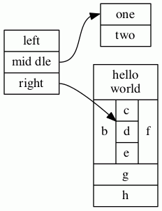
If we change node struct1 to have shape Mrecord,
it then looks like:
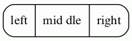
Styles for Nodes
The style
attribute can be used to modify the appearance of a node.
At present, there are 8 style values recognized:
filled, invisible, diagonals, rounded.
dashed, dotted, solid and bold.
As usual, the value of the style
attribute can be a comma-separated list of any of these. If the
style contains conflicts (e.g, style="dotted, solid"), the last
attribute wins.
filled- This value indicates that the node’s interior should be filled.
The color used is the node’s
fillcoloror, if that’s not defined, itscolor. For unfilled nodes, the interior of the node is transparent to whatever color is the current graph or cluster background color. Note thatpointshapes are always filled.Thus, the code:
digraph G { rankdir=LR node [shape=box, color=blue] node1 [style=filled] node2 [style=filled, fillcolor=red] node0 -> node1 -> node2 }yields the figure:
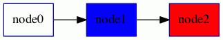
invisible- Setting this style causes the node not to be displayed at all. Note that the node is still used in laying out the graph.
diagonals- The diagonals style causes small chords to be drawn near the vertices
of the node’s polygon or, in case of circles and ellipses, two chords near
the top and the bottom of the shape. The special node shapes
Msquare,Mcircle, andMdiamondare simply an ordinary square, circle and diamond with the diagonals style set. rounded- The rounded style causes the polygonal corners to be smoothed.
Note that this style also applies to record-based nodes. Indeed,
the
Mrecordshape is simply shorthand for setting this style. Also, prior to 26 April 2005, the rounded and filled styles were mutually exclusive.As an example of rounding, dot uses the graph:
digraph R { rankdir=LR node [style=rounded] node1 [shape=box] node2 [fillcolor=yellow, style="rounded,filled", shape=diamond] node3 [shape=record, label="{ a | b | c }"] node1 -> node2 -> node3 }to produce the figure:
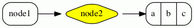
dashed- This style causes the node’s border to be drawn as a dashed line.
dotted- This style causes the node’s border to be drawn as a dotted line.
solid- This style causes the node’s border to be drawn as a solid line, which is the default.
bold- This style causes the node’s border to be drawn as a bold line. See also penwidth.
Additional styles may be available with a specific code generator.
HTML-Like Labels
NOTE: This feature is only available on versions of Graphviz that are newer than mid-November 2003. In particular, it is not part of release 1.10.
NOTE: The font markups for bold, italic, underlining, subscript and
superscript (<B>, <I>, <U>, <SUB> and <SUP>)
are only available in versions after 14 October 2011, and
the markup for strike-through (<S>) requires versions later than 15 September 2013.
In addition, all of these markups are
currently only available via the cairo and svg renderers.
The horizontal and vertical rules (<HR> and <VR>)
are only available in versions later than 8 July 2011.
NOTE: For releases later than 9 September 2014, one can use shape=plain so that the size
of the node is totally determined by the label. Otherwise, the node’s margin, width and height values may cause the
node to be larger, so that edges are clipped away from the label. In effect, shape=plain is shorthand
for shape=none width=0 height=0 margin=0.
If the value of a label attribute
(label for nodes, edges, clusters, and
graphs, and the
headlabel and
taillabel
attributes of an edge) is given as an
HTML string,
that is, delimited by <...>
rather than "...",
the label is interpreted as
an HTML description. At their simplest, such labels
can describe multiple lines of variously aligned text as provided by ordinary
string labels. More generally, the
label can specify a table similar to those provided by HTML,
with different graphical attributes at each level.
As HTML strings are processed like HTML input, any use of
the ", &, <, and > characters in literal text or in attribute values
need to be replaced by the corresponding escape sequence. For example, if you want to
use & in an href value, this should be represented as &.
NOTE: The features and syntax supported by these labels are modeled on HTML. However, there are many aspects that are relevant to Graphviz labels that are not in HTML and, conversely, HTML allows various constructs which are meaningless in Graphviz. We will generally refer to these labels as “HTML labels” rather than the cumbersome “HTML-like labels” but the reader is warned that these are not really HTML. The grammar below describes precisely what Graphviz will accept.
Although HTML labels are not, strictly speaking, a shape, they can be
viewed as a generalization of the record shapes described above.
In particular, if a node has set its
shape
attribute to none or plaintext, the HTML label will be the node’s
shape. On the other hand, if the node has any other shape (except
point), the HTML label will be embedded within the node the
same way an ordinary label would be. Adding HTML labels to record-based shapes (record and Mrecord) is discouraged and may lead to unexpected behavior because of their conflicting label schemas and overlapping functionality.
The following is an abstract grammar for HTML labels.
Terminals, corresponding to elements, are shown in bold font,
and nonterminals in italics.
Square brackets [ and ] enclose optional items.
Vertical bars | separate alternatives.
Note that, as in HTML, element and attribute names are case-insensitive.
(cf. sections 3.2.1 and 3.2.2 of the
HTML 4.01 specification).
| label | : | text |
| | | fonttable | |
| text | : | textitem |
| | | text textitem | |
| textitem | : | string |
| | | <BR/> | |
| | | <FONT> text </FONT> | |
| | | <I> text </I> | |
| | | <B> text </B> | |
| | | <U> text </U> | |
| | | <O> text </O> | |
| | | <SUB> text </SUB> | |
| | | <SUP> text </SUP> | |
| | | <S> text </S> | |
| fonttable | : | table |
| | | <FONT> table </FONT> | |
| | | <I> table </I> | |
| | | <B> table </B> | |
| | | <U> table </U> | |
| | | <O> table </O> | |
| table | : | <TABLE> rows </TABLE> |
| rows | : | row |
| | | rows row | |
| | | rows <HR/> row | |
| row | : | <TR> cells </TR> |
| cells | : | cell |
| | | cells cell | |
| | | cells <VR/> cell | |
| cell | : | <TD> label </TD> |
| | | <TD> <IMG/> </TD> |
All non-printing characters such as tabs or newlines are ignored.
Above, a string is any collection of printable characters, including
spaces. For tables, outside of the body of a <TD> element,
whitespace characters are ignored, including spaces; within a <TD> element, spaces
are preserved but all other white space characters are discarded.
N.B. For technical reasons, if a table is wrapped in a font element such as <FONT>
or <B>, any space immediately before or after this will cause a syntax error. For example,
the label
< <U><TABLE><TR><TD>a</TD></TR></U>>
is not legal. Removing either the space or the <U>...</U> will fix this.
HTML comments are allowed within an HTML string. They can occur anywhere provided that, if they contain part of an HTML element, they must contain the entire element.
As is obvious from the above description, the interpretation of white space
characters is one place where HTML-like labels is very different from
standard HTML. In HTML, any sequence of white space characters is
collapsed to a single space, If the user does not want this to happen, the
input must use non-breaking spaces . This makes sense in
HTML, where text layout depends dynamically on the space available. In
Graphviz, the layout is statically determined by the input, so it is
reasonable to treat ordinary space characters as non-breaking. In addition,
ignoring tabs and newlines allows the input text to be formatted for
easier reading.
Each of the HTML elements has a set of optional attributes. Attribute values must appear in double quotes.
- Table element
<TABLE ALIGN="CENTER|LEFT|RIGHT" BGCOLOR=color" BORDER="value" CELLBORDER="value" CELLPADDING="value" CELLSPACING="value" COLOR="color" COLUMNS="value" FIXEDSIZE="FALSE|TRUE" GRADIENTANGLE="value" HEIGHT="value" HREF="value" ID="value" PORT="portName" ROWS="value" SIDES="value" STYLE="value" TARGET="value" TITLE="value" TOOLTIP="value" VALIGN="MIDDLE|BOTTOM|TOP" WIDTH="value" >
- Table row
<TR <!-- No attributes --> >
- Table cell
<TD ALIGN="CENTER|LEFT|RIGHT|TEXT" BALIGN="CENTER|LEFT|RIGHT" BGCOLOR="color" BORDER="value" CELLPADDING="value" CELLSPACING="value" COLOR="color" COLSPAN="value" FIXEDSIZE="FALSE|TRUE" GRADIENTANGLE="value" HEIGHT="value" HREF="value" ID="value" PORT="portName" ROWSPAN="value" SIDES="value" STYLE="value" TARGET="value" TITLE="value" TOOLTIP="value" VALIGN="MIDDLE|BOTTOM|TOP" WIDTH="value" >
- Font specification
<FONT COLOR="color" FACE="fontname" POINT-SIZE="value" >
- Line break
<BR ALIGN="CENTER|LEFT|RIGHT" />
- Image inclusion
<IMG SCALE="FALSE|TRUE|WIDTH|HEIGHT|BOTH" SRC="value" />
- Italic style
<I <!-- No attributes --> >
- Bold style
<B <!-- No attributes --> >
- Underline text
<U <!-- No attributes --> >
- Overline text
<O <!-- No attributes --> >
- Subscript text
<SUB <!-- No attributes --> >
- Superscript text
<SUP <!-- No attributes --> >
- Strike-through text
<S <!-- No attributes --> >
- Horizontal rule
<HR <!-- No attributes --> />
- Vertical rule
<VR <!-- No attributes --> />
- ALIGN
- specifies horizontal placement. When an object is allocated
more space than required, this value determines where the extra space
is placed left and right of the object.
CENTERaligns the object in the center. (Default)LEFTaligns the object on the left.RIGHTaligns the object on the right.- (
<TD>only)TEXTaligns lines of text using the full cell width. The alignment of a line is determined by its (possibly implicit) associated<BR>element.
The contents of a cell are normally aligned as a block. In particular, lines of text are first aligned as a text block based on the width of the widest line and the corresponding
<BR>elements. Then, the entire text block is aligned within a cell. If, however, the cell’s ALIGN value isTEXT, and the cell contains lines of text, then the lines are justified using the entire available width of the cell. If the cell does not contain text, then the contained image or table is centered. - BALIGN
- specifies the default alignment of
<BR>elements contained in the cell. That is, if a<BR>element has no explicit ALIGN attribute, the attribute value is specified by the value of BALIGN. - BGCOLOR=“color”
- sets the color of the background. This color can be overridden by a BGCOLOR attribute in descendents. The value can be a single color or two colors separated by a colon, the latter indicating a gradient fill.
- BORDER=“value”
- specifies the width of the border around the object in points. A value of zero indicates no border. The default is 1. The maximum value is 255. If set in a table, and CELLBORDER is not set, this value is also used for all cells in the table. It can be overridden by a BORDER attribute in a cell.
- CELLBORDER=“value”
- specifies the width of the border for all cells in a table. It can be overridden by a BORDER tag in a cell. The maximum value is 255.
- CELLPADDING=“value”
- specifies the space, in points, between a cell’s border and its content. The default is 2. The maximum value is 255.
- CELLSPACING=“value”
- specifies the space, in points, between cells in a table and between a cell and the table’s border. The default is 2. The maximum value is 127.
- COLOR=“color”
- sets the color of the font within the scope of
<FONT>...</FONT>, or the border color of the table or cell within the scope of<TABLE>...</TABLE>, or<TD>...</TD>. This color can be overridden by a COLOR attribute in descendents. By default, the font color is determined by the fontcolor attribute of the corresponding node, edge or graph, and the border color is determined by the color attribute of the corresponding node, edge or graph. - COLSPAN=“value”
- specifies the number of columns spanned by the cell. The default is 1. The maximum value is 65535.
- COLUMNS=“value”
- provides general formatting information concerning the columns.
At present, the only legal value is
*, which causes a vertical rule to appear between every cell in every row. - FACE=“fontname”
- specifies the font to use within the scope of
<FONT>...</FONT>. This can be overridden by a FACE attribute in descendents. By default, the font name is determined by the fontname attribute of the corresponding node, edge or graph. - FIXEDSIZE
- specifies whether the values given by the WIDTH and HEIGHT attributes are enforced.
- GRADIENTANGLE=“value”
- gives the angle used in a gradient fill if the BGCOLOR is a color list. For the default linear gradient, this specifies the angle of a line through the center along which the colors transform. Thus, an angle of 0 will cause a left-to-right progression. For radial gradients (see STYLE), the angle specifies the position of the center of the coloring. An angle of 0 places the center at the center of the table or cell; an non-zero angle places the fill center along that angle near the boundary.
- HEIGHT=“value”
- specifies the mininum height, in points, of the object. The height includes the contents, any spacing and the border. Unless FIXEDSIZE is true, the height will be expanded to allow the contents to fit. The maximum value is 65535.
- HREF=“value”
- attaches a URL to the object.
Note that the
"value"is treated as an escString similarly to the URL attribute. - ID=“value”
- allows the user to specify a unique ID for a table or cell. See
the id attribute for more information.
Note that the
"value"is treated as an escString similarly to the id attribute. - POINT-SIZE=“value”
- sets the size of the font, in points, used within the scope of
<FONT>...</FONT>. This can be overridden by a POINT-SIZE attribute in descendents. By default, the font size is determined by the fontsize attribute of the corresponding node, edge or graph. - PORT=“value”
- attaches a portname to the object. (See portPos.) This can be used to modify the head or tail of an edge, so that the end attaches directly to the object.
- ROWS=“value”
- provides general formatting information concerning the rows.
At present, the only legal value is
*, which causes a horizontal rule to appear between every row. - ROWSPAN=“value”
- specifies the number of rows spanned by the cell. The default is 1. The maximum value is 65535.
- SCALE
- specifies how an image will use any extra space available in its cell.
Allowed values are
FALSE: keep image its natural size. (Default)TRUE: scale image uniformly to fit.WIDTH: expand image width to fillHEIGHT: expand image height to fillBOTH: expand both image width height to fill If this attribute is undefined, the image inherits the imagescale attribute of the graph object being drawn. As with the imagescale attribute, if the cell has a fixed size and the image is too large, any offending dimension will be shrunk to fit the space, the scaling being uniform in width and height if SCALE="true". Note that the containing cell’s ALIGN and VALIGN attributes override an image’s SCALE attribute.
- SIDES=“value”
- specifies which sides of a border in a cell or table should be drawn, if
a border is drawn. By default, all sides are drawn. The
"value"string can contain any collection of the (case-insensitive) characters'L','T','R', or'B', corresponding to the left, top, right and, bottom sides of the border, respectively. For example,SIDES="LB"would indicate only the left and bottom segments of the border should be drawn. - SRC=“value”
- specifies the image file to be displayed in the cell. Note that if the software is used as a web server, file system access to images is more restricted. See GV_FILE_PATH and SERVER_NAME.
- STYLE
- specifies style characteristics of the table or cell. Style characteristics are
given as a comma or space separated list of style attributes. At present, the only
legal attributes are
ROUNDEDandRADIALfor tables, andRADIALfor cells. IfROUNDEDis specified, the table will have rounded corners. This probably works best if the outmost cells have no borders, or theirCELLSPACINGis sufficiently large. If it is desirable to have borders around the cells, use HR and VR elements, or the COLUMNS and ROWS attributes of TABLE.The
RADIALattribute indicates a radial gradient fill. See the BGCOLOR and GRADIENTANGLE attributes. - TARGET=“value”
- determines which window of the browser is used for the URL if the object
has one.
See W3C documentation.
Note that the
"value"is treated as an escString similarly to the target attribute. - TITLE=“value”
- sets the tooltip annotation attached to the element.
This is used only if the element has a
HREFattribute. Note that the"value"is treated as an escString similarly to the tooltip attribute. - TOOLTIP=“value”
- is an alias for TITLE.
- VALIGN
- specifies vertical placement. When an object is allocated
more space than required, this value determines where the extra space
is placed above and below the object.
MIDDLEaligns the object in the center. (Default)BOTTOMaligns the object on the bottom.TOPaligns the object on the top.
- WIDTH=“value”
- specifies the mininum width, in points, of the object. The width includes the contents, any spacing and the border. Unless FIXEDSIZE is true, the width will be expanded to allow the contents to fit. The maximum value is 65535.
There is some inheritance among the attributes. If a table specifies a CELLPADDING, CELLBORDER or BORDER value, this value is used by the table’s cells unless overridden. If a cell or table specifies a BGCOLOR, this will be the background color for all of its descendents. Of course, if a background or fill color is specified for the graph object owning the label, this will be the original background for the label. The object’s fontname, fontcolor and fontsize attributes are the default for drawing text. These can be overridden by using FONT to set new values. The new font values will hold until overridden by an enclosed FONT element. Finally, the pencolor or color of the graph object will be used as the border color.
If you want horizontal or vertical rules used uniformly within a table, consider using the COLUMNS or ROWS attributes rather than using many HR and VR elements.
Because of certain limitations in handling tables in a device-independent manner, when BORDER is 1 and both table and cell borders are on and CELLSPACING is less than 2, anomalies can arise in the output, such as gaps between sides of borders which should be abutting or even collinear. The user can usual get around this by increasing the border size or the spacing, or turning off the table border.
HTML-Like Label Examples
Recreating the Record Example
The dot input:
digraph structs {
node [shape=plaintext]
struct1 [label=<
<TABLE BORDER="0" CELLBORDER="1" CELLSPACING="0">
<TR><TD>left</TD><TD PORT="f1">mid dle</TD><TD PORT="f2">right</TD></TR>
</TABLE>>];
struct2 [label=<
<TABLE BORDER="0" CELLBORDER="1" CELLSPACING="0">
<TR><TD PORT="f0">one</TD><TD>two</TD></TR>
</TABLE>>];
struct3 [label=<
<TABLE BORDER="0" CELLBORDER="1" CELLSPACING="0" CELLPADDING="4">
<TR>
<TD ROWSPAN="3">hello<BR/>world</TD>
<TD COLSPAN="3">b</TD>
<TD ROWSPAN="3">g</TD>
<TD ROWSPAN="3">h</TD>
</TR>
<TR>
<TD>c</TD><TD PORT="here">d</TD><TD>e</TD>
</TR>
<TR>
<TD COLSPAN="3">f</TD>
</TR>
</TABLE>>];
struct1:f1 -> struct2:f0;
struct1:f2 -> struct3:here;
}produces the HTML analogue of the record example above:
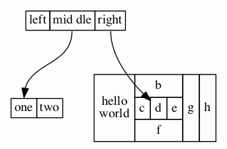
As usual, an HTML specification is more verbose.
More Complex Example
On the other hand, HTML labels are much more general:
digraph G {
rankdir=LR
node [shape=plaintext]
a [
label=<
<TABLE BORDER="0" CELLBORDER="1" CELLSPACING="0">
<TR><TD ROWSPAN="3" BGCOLOR="yellow">class</TD></TR>
<TR><TD PORT="here" BGCOLOR="lightblue">qualifier</TD></TR>
</TABLE>>
]
b [shape=ellipse style=filled
label=<
<TABLE BGCOLOR="bisque">
<TR>
<TD COLSPAN="3">elephant</TD>
<TD ROWSPAN="2" BGCOLOR="chartreuse"
VALIGN="bottom" ALIGN="right">two</TD>
</TR>
<TR>
<TD COLSPAN="2" ROWSPAN="2">
<TABLE BGCOLOR="grey">
<TR><TD>corn</TD></TR>
<TR><TD BGCOLOR="yellow">c</TD></TR>
<TR><TD>f</TD></TR>
</TABLE>
</TD>
<TD BGCOLOR="white">penguin</TD>
</TR>
<TR>
<TD COLSPAN="2" BORDER="4" ALIGN="right" PORT="there">4</TD>
</TR>
</TABLE>>
]
c [
label=<long line 1<BR/>line 2<BR ALIGN="LEFT"/>line 3<BR ALIGN="RIGHT"/>>
]
subgraph { rank=same b c }
a:here -> b:there [dir=both arrowtail=diamond]
c -> b
d [shape=triangle]
d -> c [label=<
<TABLE>
<TR>
<TD BGCOLOR="red" WIDTH="10"> </TD>
<TD>Edge labels<BR/>also</TD>
<TD BGCOLOR="blue" WIDTH="10"> </TD>
</TR>
</TABLE>>
]
}produces:

Fonts Example
An example using <FONT> elements:
digraph structs {
node [shape=plaintext];
struct1 [label=<<TABLE>
<TR>
<TD>line 1</TD>
<TD BGCOLOR="blue"><FONT COLOR="white">line2</FONT></TD>
<TD BGCOLOR="gray"><FONT POINT-SIZE="24.0">line3</FONT></TD>
<TD BGCOLOR="yellow"><FONT POINT-SIZE="24.0" FACE="ambrosia">line4</FONT></TD>
<TD>
<TABLE CELLPADDING="0" BORDER="0" CELLSPACING="0">
<TR>
<TD><FONT COLOR="green">Mixed</FONT></TD>
<TD><FONT COLOR="red">fonts</FONT></TD>
</TR>
</TABLE>
</TD>
</TR>
</TABLE>>];
}produces:
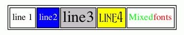
Images Example
Using an <IMG> element:
digraph structs {
node [shape=plaintext];
struct1 [label=<<TABLE>
<TR><TD><IMG SRC="eqn.png"/></TD></TR>
<TR><TD>caption</TD></TR>
</TABLE>>];
}produces:

Sides Example
The sides attribute (version 2.37 and later) allows one to combine cells to form
various non-convex shapes. For example, a tee-shaped node
digraph {
tee [shape=none margin=0 label=
<<table border="0" cellspacing="0" cellborder="1">
<tr>
<td width="9" height="9" fixedsize="true" style="invis"></td>
<td width="9" height="9" fixedsize="true" sides="ltr"></td>
<td width="9" height="9" fixedsize="true" style="invis"></td>
</tr>
<tr>
<td width="9" height="9" fixedsize="true" sides="tlb"></td>
<td width="9" height="9" fixedsize="true" sides="b"></td>
<td width="9" height="9" fixedsize="true" sides="brt"></td>
</tr>
</table>>]
}produces:
User-defined Node Shapes
There is a third type of node shape which is specified by the user. Typically, these shapes rely on the details of a concrete graphics format. At present, shapes can be described using PostScript, via a file or add-on library, for use in PostScript output, or shapes can be specified by a bitmap-image file for use with SVG or bitmap (jpeg, gif, etc.) output. More information can be found on the page How to create custom shapes.
SDL Shapes for PostScript
One example of user-defined node shapes is provided by Mark Rison of CSR.
These are the SDL shapes.
These are available as PostScript functions whose use is described in
External PostScript procedures.
The necessary PostScript library file and sample use can be found in the
contrib/sdlshapes directory in the release. Please note the
COPYRIGHT AND PERMISSION NOTICE contained in the library file sdl.ps.
The table below gives the shape names and the corresponding node shapes:

9 - Arrow Shapes
Arrow shapes can be specified and named using the following simple
grammar.
Terminals are shown in bold font and nonterminals in italics.
Literal characters are given in single quotes.
Square brackets [ and ] enclose optional items.
Vertical bars | separate alternatives.
Grammar
| arrowname | : | aname [ aname [ aname [ aname ] ] ] |
| aname | : | [ modifiers ] shape |
| modifiers | : | [ 'o' ] [ side ] |
| side | : | 'l' |
| | | 'r' | |
| shape | : | box |
| | | crow | |
| | | curve | |
| | | icurve | |
| | | diamond | |
| | | dot | |
| | | inv | |
| | | none | |
| | | normal | |
| | | tee | |
| | | vee |
Primitive Shapes
| Shape | Image |
|---|---|
box |
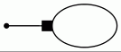 |
crow |
 |
curve |
 |
diamond |
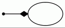 |
dot |
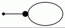 |
icurve |
 |
inv |
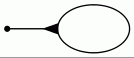 |
none |
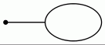 |
normal |
 |
tee |
 |
vee |
 |
Shape Modifiers
As for the modifiers:
'l'- Clip the shape, leaving only the part to the left of the edge.
'r'- Clip the shape, leaving only the part to the right of the edge.
'o'- Use an open (non-filled) version of the shape.
Left and right are defined as those directions determined by looking from the edge towards the point where the arrow “touches” the node.
As an example, the arrow shape lteeoldiamond is parsed as
'l' 'tee' 'o' 'l' 'diamond' and corresponds to the shape:

Note that the first arrow shape specified occurs closest to the node.
Subsequent arrow shapes, if specified, occur further from the node.
Also, a shape of none uses space, so, for example, the arrowhead nonenormal
is not the same as normal.
Not all syntactically legal combinations of modifiers are meaningful
or semantically valid.
For example, none of the modifiers make any sense with none.
The following table indicates which modifiers are allowed with which shapes.
| Modifier | 'l'/'r' |
o |
|---|---|---|
box |
✅ | ✅ |
crow |
✅ | |
curve |
✅ | |
diamond |
✅ | ✅ |
dot |
✅ | |
icurve |
✅ | |
inv |
✅ | ✅ |
none |
||
normal |
✅ | ✅ |
tee |
✅ | |
vee |
✅ |
This yields 42 different arrow shapes. The optional second, third, fourth shapes
can independently be any of the 42, except the last cannot be none as
this would create a redundant shape.
Thus, there are 41 × 42³ + 41 × 42² + 41 × 42 + 42 = 3,111,696 different combinations.
The following display contains the 42 combinations possible with a single arrow shape. The node attached to the arrow is not drawn but would appear on the right side of the edge.
 |
|||||
| box | lbox | rbox | obox | olbox | orbox |
 |
 |
||||
| crow | lcrow | rcrow | |||
 |
 |
 |
 |
||
| diamond | ldiamond | rdiamond | odiamond | oldiamond | ordiamond |
 |
|||||
| dot | odot | ||||
 |
 |
||||
| inv | linv | rinv | oinv | olinv | orinv |
 |
|||||
| none | |||||
 |
 |
 |
|||
| normal | lnormal | rnormal | onormal | olnormal | ornormal |
 |
|||||
| tee | ltee | rtee | |||
 |
 |
||||
| vee | lvee | rvee | |||
 |
 |
 |
|||
| curve | lcurve | rcurve | icurve | licurve | ricurve |
10 - Color Names
Color names are resolved in the context of a color scheme. Graphviz currently supports the X11 scheme, the SVG scheme, and the Brewer schemes, with X11 being the default.
Color names are case-insensitive.
In addtition to color names defined by schemes you can also use custom colors.
The Brewer color schemes below are covered by this license.
The X11 color scheme
| aliceblue | antiquewhite | antiquewhite1 | antiquewhite2 | antiquewhite3 |
| antiquewhite4 | aqua | aquamarine | aquamarine1 | aquamarine2 |
| aquamarine3 | aquamarine4 | azure | azure1 | azure2 |
| azure3 | azure4 | beige | bisque | bisque1 |
| bisque2 | bisque3 | bisque4 | black | blanchedalmond |
| blue | blue1 | blue2 | blue3 | blue4 |
| blueviolet | brown | brown1 | brown2 | brown3 |
| brown4 | burlywood | burlywood1 | burlywood2 | burlywood3 |
| burlywood4 | cadetblue | cadetblue1 | cadetblue2 | cadetblue3 |
| cadetblue4 | chartreuse | chartreuse1 | chartreuse2 | chartreuse3 |
| chartreuse4 | chocolate | chocolate1 | chocolate2 | chocolate3 |
| chocolate4 | coral | coral1 | coral2 | coral3 |
| coral4 | cornflowerblue | cornsilk | cornsilk1 | cornsilk2 |
| cornsilk3 | cornsilk4 | crimson | cyan | cyan1 |
| cyan2 | cyan3 | cyan4 | darkblue | darkcyan |
| darkgoldenrod | darkgoldenrod1 | darkgoldenrod2 | darkgoldenrod3 | darkgoldenrod4 |
| darkgray | darkgreen | darkgrey | darkkhaki | darkmagenta |
| darkolivegreen | darkolivegreen1 | darkolivegreen2 | darkolivegreen3 | darkolivegreen4 |
| darkorange | darkorange1 | darkorange2 | darkorange3 | darkorange4 |
| darkorchid | darkorchid1 | darkorchid2 | darkorchid3 | darkorchid4 |
| darkred | darksalmon | darkseagreen | darkseagreen1 | darkseagreen2 |
| darkseagreen3 | darkseagreen4 | darkslateblue | darkslategray | darkslategray1 |
| darkslategray2 | darkslategray3 | darkslategray4 | darkslategrey | darkturquoise |
| darkviolet | deeppink | deeppink1 | deeppink2 | deeppink3 |
| deeppink4 | deepskyblue | deepskyblue1 | deepskyblue2 | deepskyblue3 |
| deepskyblue4 | dimgray | dimgrey | dodgerblue | dodgerblue1 |
| dodgerblue2 | dodgerblue3 | dodgerblue4 | firebrick | firebrick1 |
| firebrick2 | firebrick3 | firebrick4 | floralwhite | forestgreen |
| fuchsia | gainsboro | ghostwhite | gold | gold1 |
| gold2 | gold3 | gold4 | goldenrod | goldenrod1 |
| goldenrod2 | goldenrod3 | goldenrod4 | gray | gray0 |
| gray1 | gray10 | gray100 | gray11 | gray12 |
| gray13 | gray14 | gray15 | gray16 | gray17 |
| gray18 | gray19 | gray2 | gray20 | gray21 |
| gray22 | gray23 | gray24 | gray25 | gray26 |
| gray27 | gray28 | gray29 | gray3 | gray30 |
| gray31 | gray32 | gray33 | gray34 | gray35 |
| gray36 | gray37 | gray38 | gray39 | gray4 |
| gray40 | gray41 | gray42 | gray43 | gray44 |
| gray45 | gray46 | gray47 | gray48 | gray49 |
| gray5 | gray50 | gray51 | gray52 | gray53 |
| gray54 | gray55 | gray56 | gray57 | gray58 |
| gray59 | gray6 | gray60 | gray61 | gray62 |
| gray63 | gray64 | gray65 | gray66 | gray67 |
| gray68 | gray69 | gray7 | gray70 | gray71 |
| gray72 | gray73 | gray74 | gray75 | gray76 |
| gray77 | gray78 | gray79 | gray8 | gray80 |
| gray81 | gray82 | gray83 | gray84 | gray85 |
| gray86 | gray87 | gray88 | gray89 | gray9 |
| gray90 | gray91 | gray92 | gray93 | gray94 |
| gray95 | gray96 | gray97 | gray98 | gray99 |
| green | green1 | green2 | green3 | green4 |
| greenyellow | grey | grey0 | grey1 | grey10 |
| grey100 | grey11 | grey12 | grey13 | grey14 |
| grey15 | grey16 | grey17 | grey18 | grey19 |
| grey2 | grey20 | grey21 | grey22 | grey23 |
| grey24 | grey25 | grey26 | grey27 | grey28 |
| grey29 | grey3 | grey30 | grey31 | grey32 |
| grey33 | grey34 | grey35 | grey36 | grey37 |
| grey38 | grey39 | grey4 | grey40 | grey41 |
| grey42 | grey43 | grey44 | grey45 | grey46 |
| grey47 | grey48 | grey49 | grey5 | grey50 |
| grey51 | grey52 | grey53 | grey54 | grey55 |
| grey56 | grey57 | grey58 | grey59 | grey6 |
| grey60 | grey61 | grey62 | grey63 | grey64 |
| grey65 | grey66 | grey67 | grey68 | grey69 |
| grey7 | grey70 | grey71 | grey72 | grey73 |
| grey74 | grey75 | grey76 | grey77 | grey78 |
| grey79 | grey8 | grey80 | grey81 | grey82 |
| grey83 | grey84 | grey85 | grey86 | grey87 |
| grey88 | grey89 | grey9 | grey90 | grey91 |
| grey92 | grey93 | grey94 | grey95 | grey96 |
| grey97 | grey98 | grey99 | honeydew | honeydew1 |
| honeydew2 | honeydew3 | honeydew4 | hotpink | hotpink1 |
| hotpink2 | hotpink3 | hotpink4 | indianred | indianred1 |
| indianred2 | indianred3 | indianred4 | indigo | invis |
| ivory | ivory1 | ivory2 | ivory3 | ivory4 |
| khaki | khaki1 | khaki2 | khaki3 | khaki4 |
| lavender | lavenderblush | lavenderblush1 | lavenderblush2 | lavenderblush3 |
| lavenderblush4 | lawngreen | lemonchiffon | lemonchiffon1 | lemonchiffon2 |
| lemonchiffon3 | lemonchiffon4 | lightblue | lightblue1 | lightblue2 |
| lightblue3 | lightblue4 | lightcoral | lightcyan | lightcyan1 |
| lightcyan2 | lightcyan3 | lightcyan4 | lightgoldenrod | lightgoldenrod1 |
| lightgoldenrod2 | lightgoldenrod3 | lightgoldenrod4 | lightgoldenrodyellow | lightgray |
| lightgreen | lightgrey | lightpink | lightpink1 | lightpink2 |
| lightpink3 | lightpink4 | lightsalmon | lightsalmon1 | lightsalmon2 |
| lightsalmon3 | lightsalmon4 | lightseagreen | lightskyblue | lightskyblue1 |
| lightskyblue2 | lightskyblue3 | lightskyblue4 | lightslateblue | lightslategray |
| lightslategrey | lightsteelblue | lightsteelblue1 | lightsteelblue2 | lightsteelblue3 |
| lightsteelblue4 | lightyellow | lightyellow1 | lightyellow2 | lightyellow3 |
| lightyellow4 | lime | limegreen | linen | magenta |
| magenta1 | magenta2 | magenta3 | magenta4 | maroon |
| maroon1 | maroon2 | maroon3 | maroon4 | mediumaquamarine |
| mediumblue | mediumorchid | mediumorchid1 | mediumorchid2 | mediumorchid3 |
| mediumorchid4 | mediumpurple | mediumpurple1 | mediumpurple2 | mediumpurple3 |
| mediumpurple4 | mediumseagreen | mediumslateblue | mediumspringgreen | mediumturquoise |
| mediumvioletred | midnightblue | mintcream | mistyrose | mistyrose1 |
| mistyrose2 | mistyrose3 | mistyrose4 | moccasin | navajowhite |
| navajowhite1 | navajowhite2 | navajowhite3 | navajowhite4 | navy |
| navyblue | none | oldlace | olive | olivedrab |
| olivedrab1 | olivedrab2 | olivedrab3 | olivedrab4 | orange |
| orange1 | orange2 | orange3 | orange4 | orangered |
| orangered1 | orangered2 | orangered3 | orangered4 | orchid |
| orchid1 | orchid2 | orchid3 | orchid4 | palegoldenrod |
| palegreen | palegreen1 | palegreen2 | palegreen3 | palegreen4 |
| paleturquoise | paleturquoise1 | paleturquoise2 | paleturquoise3 | paleturquoise4 |
| palevioletred | palevioletred1 | palevioletred2 | palevioletred3 | palevioletred4 |
| papayawhip | peachpuff | peachpuff1 | peachpuff2 | peachpuff3 |
| peachpuff4 | peru | pink | pink1 | pink2 |
| pink3 | pink4 | plum | plum1 | plum2 |
| plum3 | plum4 | powderblue | purple | purple1 |
| purple2 | purple3 | purple4 | rebeccapurple | red |
| red1 | red2 | red3 | red4 | rosybrown |
| rosybrown1 | rosybrown2 | rosybrown3 | rosybrown4 | royalblue |
| royalblue1 | royalblue2 | royalblue3 | royalblue4 | saddlebrown |
| salmon | salmon1 | salmon2 | salmon3 | salmon4 |
| sandybrown | seagreen | seagreen1 | seagreen2 | seagreen3 |
| seagreen4 | seashell | seashell1 | seashell2 | seashell3 |
| seashell4 | sienna | sienna1 | sienna2 | sienna3 |
| sienna4 | silver | skyblue | skyblue1 | skyblue2 |
| skyblue3 | skyblue4 | slateblue | slateblue1 | slateblue2 |
| slateblue3 | slateblue4 | slategray | slategray1 | slategray2 |
| slategray3 | slategray4 | slategrey | snow | snow1 |
| snow2 | snow3 | snow4 | springgreen | springgreen1 |
| springgreen2 | springgreen3 | springgreen4 | steelblue | steelblue1 |
| steelblue2 | steelblue3 | steelblue4 | tan | tan1 |
| tan2 | tan3 | tan4 | teal | thistle |
| thistle1 | thistle2 | thistle3 | thistle4 | tomato |
| tomato1 | tomato2 | tomato3 | tomato4 | transparent |
| turquoise | turquoise1 | turquoise2 | turquoise3 | turquoise4 |
| violet | violetred | violetred1 | violetred2 | violetred3 |
| violetred4 | webgray | webgreen | webgrey | webmaroon |
| webpurple | wheat | wheat1 | wheat2 | wheat3 |
| wheat4 | white | whitesmoke | x11gray | x11green |
| x11grey | x11maroon | x11purple | yellow | yellow1 |
| yellow2 | yellow3 | yellow4 | yellowgreen |
The SVG color scheme
| aliceblue | antiquewhite | aqua | aquamarine | azure |
| beige | bisque | black | blanchedalmond | blue |
| blueviolet | brown | burlywood | cadetblue | chartreuse |
| chocolate | coral | cornflowerblue | cornsilk | crimson |
| cyan | darkblue | darkcyan | darkgoldenrod | darkgray |
| darkgreen | darkgrey | darkkhaki | darkmagenta | darkolivegreen |
| darkorange | darkorchid | darkred | darksalmon | darkseagreen |
| darkslateblue | darkslategray | darkslategrey | darkturquoise | darkviolet |
| deeppink | deepskyblue | dimgray | dimgrey | dodgerblue |
| firebrick | floralwhite | forestgreen | fuchsia | gainsboro |
| ghostwhite | gold | goldenrod | gray | grey |
| green | greenyellow | honeydew | hotpink | indianred |
| indigo | ivory | khaki | lavender | lavenderblush |
| lawngreen | lemonchiffon | lightblue | lightcoral | lightcyan |
| lightgoldenrodyellow | lightgray | lightgreen | lightgrey | lightpink |
| lightsalmon | lightseagreen | lightskyblue | lightslategray | lightslategrey |
| lightsteelblue | lightyellow | lime | limegreen | linen |
| magenta | maroon | mediumaquamarine | mediumblue | mediumorchid |
| mediumpurple | mediumseagreen | mediumslateblue | mediumspringgreen | mediumturquoise |
| mediumvioletred | midnightblue | mintcream | mistyrose | moccasin |
| navajowhite | navy | oldlace | olive | olivedrab |
| orange | orangered | orchid | palegoldenrod | palegreen |
| paleturquoise | palevioletred | papayawhip | peachpuff | peru |
| pink | plum | powderblue | purple | red |
| rosybrown | royalblue | saddlebrown | salmon | sandybrown |
| seagreen | seashell | sienna | silver | skyblue |
| slateblue | slategray | slategrey | snow | springgreen |
| steelblue | tan | teal | thistle | tomato |
| turquoise | violet | wheat | white | whitesmoke |
| yellow | yellowgreen |
Brewer color schemes
accent3 color scheme| 1 | 2 | 3 |
| 1 | 2 | 3 | 4 |
| 1 | 2 | 3 | 4 | 5 |
| 1 | 2 | 3 | 4 | 5 | 6 |
| 1 | 2 | 3 | 4 | 5 | 6 | 7 |
| 1 | 2 | 3 | 4 | 5 | 6 | 7 | 8 |
| 1 | 2 | 3 |
| 1 | 2 | 3 | 4 |
| 1 | 2 | 3 | 4 | 5 |
| 1 | 2 | 3 | 4 | 5 | 6 |
| 1 | 2 | 3 | 4 | 5 | 6 | 7 |
| 1 | 2 | 3 | 4 | 5 | 6 | 7 | 8 |
| 1 | 2 | 3 | 4 | 5 | 6 | 7 | 8 | 9 |
| 1 | 2 | 3 | 4 | 5 | 6 | 7 | 8 | 9 | 10 |
| 1 | 2 | 3 | 4 | 5 | 6 | 7 | 8 | 9 | 10 | 11 |
| 1 | 2 | 3 |
| 1 | 2 | 3 | 4 |
| 1 | 2 | 3 | 4 | 5 |
| 1 | 2 | 3 | 4 | 5 | 6 |
| 1 | 2 | 3 | 4 | 5 | 6 | 7 |
| 1 | 2 | 3 | 4 | 5 | 6 | 7 | 8 |
| 1 | 2 | 3 | 4 | 5 | 6 | 7 | 8 | 9 |
| 1 | 2 | 3 |
| 1 | 2 | 3 | 4 |
| 1 | 2 | 3 | 4 | 5 |
| 1 | 2 | 3 | 4 | 5 | 6 |
| 1 | 2 | 3 | 4 | 5 | 6 | 7 |
| 1 | 2 | 3 | 4 | 5 | 6 | 7 | 8 |
| 1 | 2 | 3 | 4 | 5 | 6 | 7 | 8 | 9 |
| 1 | 2 | 3 |
| 1 | 2 | 3 | 4 |
| 1 | 2 | 3 | 4 | 5 |
| 1 | 2 | 3 | 4 | 5 | 6 |
| 1 | 2 | 3 | 4 | 5 | 6 | 7 |
| 1 | 2 | 3 | 4 | 5 | 6 | 7 | 8 |
| 1 | 2 | 3 | 4 | 5 | 6 | 7 | 8 | 9 |
| 1 | 2 | 3 |
| 1 | 2 | 3 | 4 |
| 1 | 2 | 3 | 4 | 5 |
| 1 | 2 | 3 | 4 | 5 | 6 |
| 1 | 2 | 3 | 4 | 5 | 6 | 7 |
| 1 | 2 | 3 | 4 | 5 | 6 | 7 | 8 |
| 1 | 2 | 3 |
| 1 | 2 | 3 | 4 |
| 1 | 2 | 3 | 4 | 5 |
| 1 | 2 | 3 | 4 | 5 | 6 |
| 1 | 2 | 3 | 4 | 5 | 6 | 7 |
| 1 | 2 | 3 | 4 | 5 | 6 | 7 | 8 |
| 1 | 2 | 3 | 4 | 5 | 6 | 7 | 8 | 9 |
| 1 | 2 | 3 |
| 1 | 2 | 3 | 4 |
| 1 | 2 | 3 | 4 | 5 |
| 1 | 2 | 3 | 4 | 5 | 6 |
| 1 | 2 | 3 | 4 | 5 | 6 | 7 |
| 1 | 2 | 3 | 4 | 5 | 6 | 7 | 8 |
| 1 | 2 | 3 | 4 | 5 | 6 | 7 | 8 | 9 |
| 1 | 2 | 3 |
| 1 | 2 | 3 | 4 |
| 1 | 2 | 3 | 4 | 5 |
| 1 | 2 | 3 | 4 | 5 | 6 |
| 1 | 2 | 3 | 4 | 5 | 6 | 7 |
| 1 | 2 | 3 | 4 | 5 | 6 | 7 | 8 |
| 1 | 2 | 3 | 4 | 5 | 6 | 7 | 8 | 9 |
| 1 | 2 | 3 |
| 1 | 2 | 3 | 4 |
| 1 | 2 | 3 | 4 | 5 |
| 1 | 2 | 3 | 4 | 5 | 6 |
| 1 | 2 | 3 | 4 | 5 | 6 | 7 |
| 1 | 2 | 3 | 4 | 5 | 6 | 7 | 8 |
| 1 | 2 | 3 | 4 | 5 | 6 | 7 | 8 | 9 |
| 1 | 2 | 3 |
| 1 | 2 | 3 | 4 |
| 1 | 2 | 3 | 4 | 5 |
| 1 | 2 | 3 | 4 | 5 | 6 |
| 1 | 2 | 3 | 4 | 5 | 6 | 7 |
| 1 | 2 | 3 | 4 | 5 | 6 | 7 | 8 |
| 1 | 2 | 3 | 4 | 5 | 6 | 7 | 8 | 9 |
| 1 | 2 | 3 | 4 | 5 | 6 | 7 | 8 | 9 | 10 |
| 1 | 2 | 3 | 4 | 5 | 6 | 7 | 8 | 9 | 10 | 11 |
| 1 | 2 | 3 | 4 | 5 | 6 | 7 | 8 | 9 | 10 | 11 | 12 |
| 1 | 2 | 3 |
| 1 | 2 | 3 | 4 |
| 1 | 2 | 3 | 4 | 5 |
| 1 | 2 | 3 | 4 | 5 | 6 |
| 1 | 2 | 3 | 4 | 5 | 6 | 7 |
| 1 | 2 | 3 | 4 | 5 | 6 | 7 | 8 |
| 1 | 2 | 3 | 4 | 5 | 6 | 7 | 8 | 9 |
| 1 | 2 | 3 |
| 1 | 2 | 3 | 4 |
| 1 | 2 | 3 | 4 | 5 |
| 1 | 2 | 3 | 4 | 5 | 6 |
| 1 | 2 | 3 | 4 | 5 | 6 | 7 |
| 1 | 2 | 3 | 4 | 5 | 6 | 7 | 8 |
| 1 | 2 | 3 | 4 | 5 | 6 | 7 | 8 | 9 |
| 1 | 2 | 3 |
| 1 | 2 | 3 | 4 |
| 1 | 2 | 3 | 4 | 5 |
| 1 | 2 | 3 | 4 | 5 | 6 |
| 1 | 2 | 3 | 4 | 5 | 6 | 7 |
| 1 | 2 | 3 | 4 | 5 | 6 | 7 | 8 |
| 1 | 2 | 3 | 4 | 5 | 6 | 7 | 8 | 9 | 10 |
| 1 | 2 | 3 | 4 | 5 | 6 | 7 | 8 | 9 | 10 | 11 |
| 1 | 2 | 3 |
| 1 | 2 | 3 | 4 |
| 1 | 2 | 3 | 4 | 5 |
| 1 | 2 | 3 | 4 | 5 | 6 |
| 1 | 2 | 3 | 4 | 5 | 6 | 7 |
| 1 | 2 | 3 | 4 | 5 | 6 | 7 | 8 |
| 1 | 2 | 3 | 4 | 5 | 6 | 7 | 8 | 9 |
| 1 | 2 | 3 | 4 | 5 | 6 | 7 | 8 | 9 | 10 |
| 1 | 2 | 3 | 4 | 5 | 6 | 7 | 8 | 9 | 10 | 11 |
| 1 | 2 | 3 |
| 1 | 2 | 3 | 4 |
| 1 | 2 | 3 | 4 | 5 |
| 1 | 2 | 3 | 4 | 5 | 6 |
| 1 | 2 | 3 | 4 | 5 | 6 | 7 |
| 1 | 2 | 3 | 4 | 5 | 6 | 7 | 8 |
| 1 | 2 | 3 | 4 | 5 | 6 | 7 | 8 | 9 |
| 1 | 2 | 3 |
| 1 | 2 | 3 | 4 |
| 1 | 2 | 3 | 4 | 5 |
| 1 | 2 | 3 | 4 | 5 | 6 |
| 1 | 2 | 3 | 4 | 5 | 6 | 7 |
| 1 | 2 | 3 | 4 | 5 | 6 | 7 | 8 |
| 1 | 2 | 3 | 4 | 5 | 6 | 7 | 8 | 9 |
| 1 | 2 | 3 |
| 1 | 2 | 3 | 4 |
| 1 | 2 | 3 | 4 | 5 |
| 1 | 2 | 3 | 4 | 5 | 6 |
| 1 | 2 | 3 | 4 | 5 | 6 | 7 |
| 1 | 2 | 3 | 4 | 5 | 6 | 7 | 8 |
| 1 | 2 | 3 | 4 | 5 | 6 | 7 | 8 | 9 |
| 1 | 2 | 3 | 4 | 5 | 6 | 7 | 8 | 9 | 10 |
| 1 | 2 | 3 | 4 | 5 | 6 | 7 | 8 | 9 | 10 | 11 |
| 1 | 2 | 3 |
| 1 | 2 | 3 | 4 |
| 1 | 2 | 3 | 4 | 5 |
| 1 | 2 | 3 | 4 | 5 | 6 |
| 1 | 2 | 3 | 4 | 5 | 6 | 7 |
| 1 | 2 | 3 | 4 | 5 | 6 | 7 | 8 |
| 1 | 2 | 3 | 4 | 5 | 6 | 7 | 8 | 9 |
| 1 | 2 | 3 |
| 1 | 2 | 3 | 4 |
| 1 | 2 | 3 | 4 | 5 |
| 1 | 2 | 3 | 4 | 5 | 6 |
| 1 | 2 | 3 | 4 | 5 | 6 | 7 |
| 1 | 2 | 3 | 4 | 5 | 6 | 7 | 8 |
| 1 | 2 | 3 | 4 | 5 | 6 | 7 | 8 | 9 |
| 1 | 2 | 3 |
| 1 | 2 | 3 | 4 |
| 1 | 2 | 3 | 4 | 5 |
| 1 | 2 | 3 | 4 | 5 | 6 |
| 1 | 2 | 3 | 4 | 5 | 6 | 7 |
| 1 | 2 | 3 | 4 | 5 | 6 | 7 | 8 |
| 1 | 2 | 3 | 4 | 5 | 6 | 7 | 8 | 9 |
| 1 | 2 | 3 | 4 | 5 | 6 | 7 | 8 | 9 | 10 |
| 1 | 2 | 3 | 4 | 5 | 6 | 7 | 8 | 9 | 10 | 11 |
| 1 | 2 | 3 |
| 1 | 2 | 3 | 4 |
| 1 | 2 | 3 | 4 | 5 |
| 1 | 2 | 3 | 4 | 5 | 6 |
| 1 | 2 | 3 | 4 | 5 | 6 | 7 |
| 1 | 2 | 3 | 4 | 5 | 6 | 7 | 8 |
| 1 | 2 | 3 | 4 | 5 | 6 | 7 | 8 | 9 |
| 1 | 2 | 3 | 4 | 5 | 6 | 7 | 8 | 9 | 10 |
| 1 | 2 | 3 | 4 | 5 | 6 | 7 | 8 | 9 | 10 | 11 |
| 1 | 2 | 3 |
| 1 | 2 | 3 | 4 |
| 1 | 2 | 3 | 4 | 5 |
| 1 | 2 | 3 | 4 | 5 | 6 |
| 1 | 2 | 3 | 4 | 5 | 6 | 7 |
| 1 | 2 | 3 | 4 | 5 | 6 | 7 | 8 |
| 1 | 2 | 3 | 4 | 5 | 6 | 7 | 8 | 9 |
| 1 | 2 | 3 |
| 1 | 2 | 3 | 4 |
| 1 | 2 | 3 | 4 | 5 |
| 1 | 2 | 3 | 4 | 5 | 6 |
| 1 | 2 | 3 | 4 | 5 | 6 | 7 |
| 1 | 2 | 3 | 4 | 5 | 6 | 7 | 8 |
| 1 | 2 | 3 | 4 | 5 | 6 | 7 | 8 | 9 |
| 1 | 2 | 3 | 4 | 5 | 6 | 7 | 8 | 9 | 10 |
| 1 | 2 | 3 | 4 | 5 | 6 | 7 | 8 | 9 | 10 | 11 |
| 1 | 2 | 3 |
| 1 | 2 | 3 | 4 |
| 1 | 2 | 3 | 4 | 5 |
| 1 | 2 | 3 | 4 | 5 | 6 |
| 1 | 2 | 3 | 4 | 5 | 6 | 7 |
| 1 | 2 | 3 | 4 | 5 | 6 | 7 | 8 |
| 1 | 2 | 3 | 4 | 5 | 6 | 7 | 8 | 9 |
| 1 | 2 | 3 | 4 | 5 | 6 | 7 | 8 | 9 | 10 |
| 1 | 2 | 3 | 4 | 5 | 6 | 7 | 8 | 9 | 10 | 11 |
| 1 | 2 | 3 |
| 1 | 2 | 3 | 4 |
| 1 | 2 | 3 | 4 | 5 |
| 1 | 2 | 3 | 4 | 5 | 6 |
| 1 | 2 | 3 | 4 | 5 | 6 | 7 |
| 1 | 2 | 3 | 4 | 5 | 6 | 7 | 8 |
| 1 | 2 | 3 | 4 | 5 | 6 | 7 | 8 | 9 |
| 1 | 2 | 3 |
| 1 | 2 | 3 | 4 |
| 1 | 2 | 3 | 4 | 5 |
| 1 | 2 | 3 | 4 | 5 | 6 |
| 1 | 2 | 3 | 4 | 5 | 6 | 7 |
| 1 | 2 | 3 | 4 | 5 | 6 | 7 | 8 |
| 1 | 2 | 3 | 4 | 5 | 6 | 7 | 8 | 9 |
| 1 | 2 | 3 |
| 1 | 2 | 3 | 4 |
| 1 | 2 | 3 | 4 | 5 |
| 1 | 2 | 3 | 4 | 5 | 6 |
| 1 | 2 | 3 | 4 | 5 | 6 | 7 |
| 1 | 2 | 3 | 4 | 5 | 6 | 7 | 8 |
| 1 | 2 | 3 | 4 | 5 | 6 | 7 | 8 | 9 |
| 1 | 2 | 3 |
| 1 | 2 | 3 | 4 |
| 1 | 2 | 3 | 4 | 5 |
| 1 | 2 | 3 | 4 | 5 | 6 |
| 1 | 2 | 3 | 4 | 5 | 6 | 7 |
| 1 | 2 | 3 | 4 | 5 | 6 | 7 | 8 |
| 1 | 2 | 3 | 4 | 5 | 6 | 7 | 8 | 9 | 10 |
| 1 | 2 | 3 | 4 | 5 | 6 | 7 | 8 | 9 | 10 | 11 |
| 1 | 2 | 3 | 4 | 5 | 6 | 7 | 8 | 9 | 10 | 11 | 12 |
| 1 | 2 | 3 |
| 1 | 2 | 3 | 4 |
| 1 | 2 | 3 | 4 | 5 |
| 1 | 2 | 3 | 4 | 5 | 6 |
| 1 | 2 | 3 | 4 | 5 | 6 | 7 |
| 1 | 2 | 3 | 4 | 5 | 6 | 7 | 8 |
| 1 | 2 | 3 | 4 | 5 | 6 | 7 | 8 | 9 |
| 1 | 2 | 3 | 4 | 5 | 6 | 7 | 8 | 9 | 10 |
| 1 | 2 | 3 | 4 | 5 | 6 | 7 | 8 | 9 | 10 | 11 |
| 1 | 2 | 3 |
| 1 | 2 | 3 | 4 |
| 1 | 2 | 3 | 4 | 5 |
| 1 | 2 | 3 | 4 | 5 | 6 |
| 1 | 2 | 3 | 4 | 5 | 6 | 7 |
| 1 | 2 | 3 | 4 | 5 | 6 | 7 | 8 |
| 1 | 2 | 3 | 4 | 5 | 6 | 7 | 8 | 9 |
| 1 | 2 | 3 |
| 1 | 2 | 3 | 4 |
| 1 | 2 | 3 | 4 | 5 |
| 1 | 2 | 3 | 4 | 5 | 6 |
| 1 | 2 | 3 | 4 | 5 | 6 | 7 |
| 1 | 2 | 3 | 4 | 5 | 6 | 7 | 8 |
| 1 | 2 | 3 | 4 | 5 | 6 | 7 | 8 | 9 |
| 1 | 2 | 3 |
| 1 | 2 | 3 | 4 |
| 1 | 2 | 3 | 4 | 5 |
| 1 | 2 | 3 | 4 | 5 | 6 |
| 1 | 2 | 3 | 4 | 5 | 6 | 7 |
| 1 | 2 | 3 | 4 | 5 | 6 | 7 | 8 |
| 1 | 2 | 3 | 4 | 5 | 6 | 7 | 8 | 9 |
| 1 | 2 | 3 |
| 1 | 2 | 3 | 4 |
| 1 | 2 | 3 | 4 | 5 |
| 1 | 2 | 3 | 4 | 5 | 6 |
| 1 | 2 | 3 | 4 | 5 | 6 | 7 |
| 1 | 2 | 3 | 4 | 5 | 6 | 7 | 8 |
| 1 | 2 | 3 | 4 | 5 | 6 | 7 | 8 | 9 |
| 1 | 2 | 3 |
| 1 | 2 | 3 | 4 |
| 1 | 2 | 3 | 4 | 5 |
| 1 | 2 | 3 | 4 | 5 | 6 |
| 1 | 2 | 3 | 4 | 5 | 6 | 7 |
| 1 | 2 | 3 | 4 | 5 | 6 | 7 | 8 |
| 1 | 2 | 3 | 4 | 5 | 6 | 7 | 8 | 9 |
ColorBrewer License
Apache-Style Software License for ColorBrewer software and ColorBrewer Color Schemes, Version 1.1
Copyright (c) 2002 Cynthia Brewer, Mark Harrower, and The Pennsylvania State University. All rights reserved.
Redistribution and use in source and binary forms, with or without modification, are permitted provided that the following conditions are met:
-
Redistributions as source code must retain the above copyright notice, this list of conditions and the following disclaimer.
-
The end-user documentation included with the redistribution, if any, must include the following acknowledgment:
This product includes color specifications and designs developed by Cynthia Brewer (http://colorbrewer.org/).
Alternately, this acknowledgment may appear in the software itself, if and wherever such third-party acknowledgments normally appear.
-
The name “ColorBrewer” must not be used to endorse or promote products derived from this software without prior written permission. For written permission, please contact Cynthia Brewer at cbrewer@psu.edu.
-
Products derived from this software may not be called “ColorBrewer”, nor may “ColorBrewer” appear in their name, without prior written permission of Cynthia Brewer.
THIS SOFTWARE IS PROVIDED “AS IS” AND ANY EXPRESSED OR IMPLIED WARRANTIES, INCLUDING, BUT NOT LIMITED TO, THE IMPLIED WARRANTIES OF MERCHANTABILITY AND FITNESS FOR A PARTICULAR PURPOSE ARE DISCLAIMED. IN NO EVENT SHALL CYNTHIA BREWER, MARK HARROWER, OR THE PENNSYLVANIA STATE UNIVERSITY BE LIABLE FOR ANY DIRECT, INDIRECT, INCIDENTAL, SPECIAL, EXEMPLARY, OR CONSEQUENTIAL DAMAGES (INCLUDING, BUT NOT LIMITED TO, PROCUREMENT OF SUBSTITUTE GOODS OR SERVICES; LOSS OF USE, DATA, OR PROFITS; OR BUSINESS INTERRUPTION) HOWEVER CAUSED AND ON ANY THEORY OF LIABILITY, WHETHER IN CONTRACT, STRICT LIABILITY, OR TORT (INCLUDING NEGLIGENCE OR OTHERWISE) ARISING IN ANY WAY OUT OF THE USE OF THIS SOFTWARE, EVEN IF ADVISED OF THE POSSIBILITY OF SUCH DAMAGE.
11 - Character Set Reference
This reference is generated from: http://www.w3.org/TR/html4/sgml/entities.html using the entities.tcl demo program from the graphviz distribution.
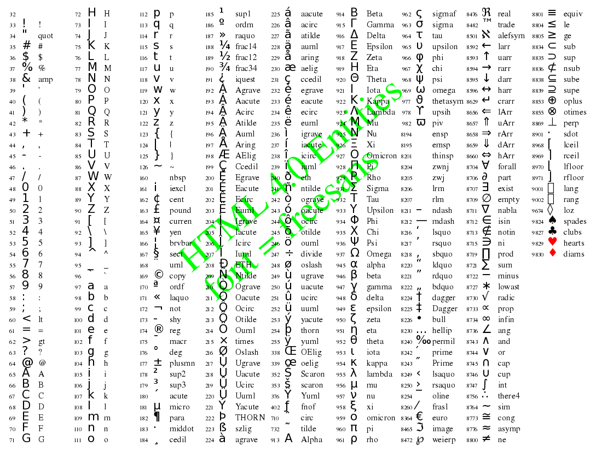